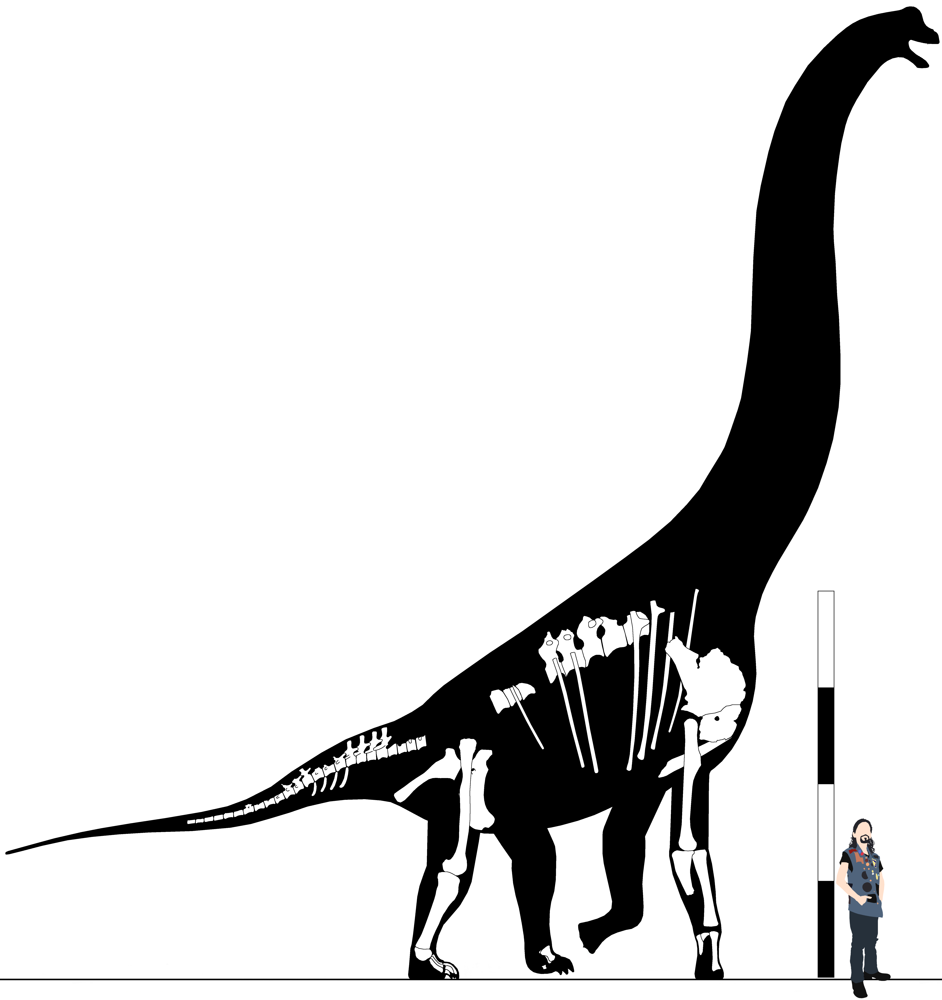
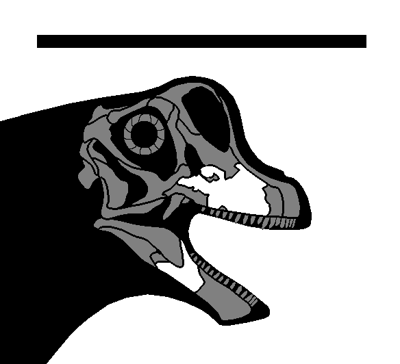

Clade Macronaria Wilson & Sereno, 1998
Definition - enter
Diagnosis - enter
Comments - enter
Genus Bashunosaurus Kuang, 2004
Bashunosaurus kaijiangensis Kuang, 2004
Middle Jurassic, late Dogger epoch, Callovian stage
Xiashaximiao Formation
Dashanpu, Zigong City, Sichuan Province, China
KM 20100 (Holotype) - Six cervicals, eight dorsals, sacral rib, partial left scapula, right humerus, proximal right ulna, right ilium, right femur, right tibia, right fibula
(Kuang, 2004)
KM 20103 (Paratype) - Caudals, right ilium (Kuang, 2004)
Diagnosis - enter
Comments - Originally referred to Datousaurus bashanensis (Dong & Tang, 1984). Informally named by Li (1998), before being formally described by Kuang (2004). Dai,
et al. (2022) stated this & Datousaurus were possibly macronarians based on their morphology, but neither were included in their phylogenetic analyses due to lack
of a comprehensive description for either taxon.
Genus Dashanpusaurus Peng, et al. 2005
Dashanpusaurus dongi Peng, et al. 2005
Middle Jurassic, late Dogger epoch, Callovian stage
Xiashaximiao Formation
Dashanpu, Zigong City, Sichuan Province, China
ZDM 5028 (Holotype) - Five cervicals, twelve dorsals, sacrum, 33 caudals, left ulna, left ilium, left pubis, left femur, left tibia (Ren, et al. 2022)
ZDM 5027 - Four cervicals, twelve dorsals, ribs, two caudals, left scapulocoracoid, left humerus, left radius (Ren, et al. 2022)
Diagnosis - Distal end of anterior to middle dorsal neural spines are slightly bifurcated with transversely extended metapophyses* (1); thin accessory lamina connects the
PRDL & PPDL, forming an angle of approximately 75o in mid-dorsals* (2); internal excavation situated below the diapophyses of mid-dorsals* (3); four mild ridges on the
anterodistal edge of the humerus* (4) (from Ren, et al. 2022).
Comments - Ren, et al. (2022) partially redescribed Dashanpusaurus, & included it in a phylogenetic analysis where it was resolved as the most basal
macronarian, in the same position Yuzhoulong was recovered by Dai, et al. (2022).
Genus Datousaurus Dong & Tang, 1984
Datousaurus bashanensis Dong & Tang, 1984
Middle Jurassic, late Dogger epoch, Callovian stage
Xiashaximiao Formation
Dashanpu, Zigong City, Sichuan Province, China
IVPP V7262 (Holotype)
IVPP V7263 (Holotype)
Diagnosis - enter
Comments - enter
Genus Yuzhoulong Dai, et al. 2022
Yuzhoulong qurenensis Dai, et al. 2022
Middle Jurassic, late Dogger epoch, Callovian stage
Xiashaximiao Formation
Chongqing, China
CLGRP V00013 (Holotype) - Partial braincase, partial right dentary, D1 (204mm), D2 (168mm), D3, D4, D5, D6 (150mm), D7 (153mm), D8, D9, D10 (150mm), D11, D12, two dorsal ribs,
sacral, Cd1, Cd2, Cd3, Cd4 (96mm), Cd5 (92mm), Cd6 (68mm*), Cd7 (113mm), Cd8, Cd9 (80mm), Cd10 (88mm), two chevrons, left scapulocoracoid, humeri (734, 727mm), radii (505, 500mm),
ulnae (508, 510mm), left Mc I (135mm), left Mc II (170mm), left Mc V (150mm), left ilium (960mm), ischia (640*, 730mm), pubes (710mm), femora (1080mm), tibiae (660mm), left
fibula (620mm*) (Dai, et al. 2022)
Diagnosis - enter
Comments - Dai, et al. (2022) included this in multiple different phylogenetic analyses, where in all it emerged as the basalmost macronarian.
“Cañadón Calcáreo Taxon II” Rauhut, et al. 2022
Late Jurassic, late Malm epoch, Tithonian stage
Cañadón Calcáreo Formation
Cerro Condor, Patagonia, Argentina
#? - Articulated vertebral column including dorsal vertebrae (Rauhut, et al. 2022)
Diagnosis - Differs from Tehuelchesaurus in number of dorsal vertebrae (1); lateral vertebral lamination (2). (Rauhut, et al. 2022).
Comments - enter
“McKinsey-REX macronarian” Trujillo, et al. 2011
Late Jurassic, middle Malm epoch, early Kimmeridgian stage
Salt Wash Member, Zone 2, Morrison Formation
>
McKinsey-REX Quarry, Albany County, Wyoming, United States
UW 46212 - Cervicals, three dorsal centra, two dorsal neural spines, partial sacrum, 22 complete caudals, 12 caudal centra, 12 caudal neural spines, scapula, femur (Trujillo,
et al. 2011; Diepenbrock, 2022)
Diagnosis - none, undescribed.
Comments - Trujillo, et al. (2011) considered this to be a very large juvenile Camarasaurus (most elements are roughly 80% the size of the largest C.
supremus specimens), but more recent research suggests that this is in fact representative of a brachiosaurid (Diepenbrock, 2022).
“Thai Taxon B” Shimizu, et al. 2016
Early to middle Cretaceous, early to middle Gallic epoch, Barremian to Aptian stages
Sao Khua Formation, Khorat Group
Phu Peng Hill (KS16), Kalasin Province, Thailand
#? - Skull elements (Shimizu, et al. 2016)
Diagnosis - none, undescribed.
Comments - enter
Clade Camarasauromorpha Salgado, Coria, & Calvo, 1997
Definition - enter
Diagnosis - enter
Comments - enter
Genus Marmarospondylus Owen, 1875
Marmarospondylus robustus Owen, 1875
=Bothriospondylus robustus Olshevsky, 1978
Age
Formation
Locality Data
NHMUK PV R22428 (Holotype)
Diagnosis - enter
Comments - enter
Genus Oplosaurus Gervais, 1852
=Hoplosaurus Lydekker, 1890 (sic)
Oplosaurus armatus Gervais, 1852
=Oplosaurus arcuatus Gervais, 1859 (sic)
=Onchosaurus armatus Gervais, 1859 (sic)
=Hoplosaurus armatus Swinton, 1936 (sic)
Age
Formation
Locality Data
Specimens
Diagnosis - enter
Comments - enter
Family Camarasauridae Cope, 1877a
=Dystrophaeidae Huene, 1904
Definition - enter
Diagnosis - Broad robust teeth (1); lacrimal with long axis directed anterodorsally (2); quadratojugal with short anterior ramus that does not extend anterior to the
laterotemporal fenestra (3); anterior cervical neural spines bifid (4); posterior cervical & anterior dorsal neural spines bifid (5); scapular blade with rounded expansion on
acromial side (6).
Comments - enter
Genus Aragosaurus Sanz, et al. 1987
Aragosaurus ischiaticus Sanz, et al. 1987
Age
Formation
Locality Data
IG 450 bis (Syntype) - Caudal
IG 453 (Syntype) - Caudal
IG 468 (Syntype) - Rib fragments, two caudal neural arches
IG 473 (Syntype) - Caudal
IG 474 (Syntype) - Caudal
IG 475 (Syntype) - Caudal
IG 476 (Syntype) - Caudal
IG 477 (Syntype) - Caudal
IG 479 (Syntype) - Caudal
IG 480 (Syntype) - Caudal
IG 481 (Syntype) - Rib fragments
IG 482 (Syntype) - Partial left scapulocoracoid
IG 483 (Syntype) - Right ulna
IG 484 (Syntype) - Right radius
IG 485 (Syntype) - Right carpal
IG 486 (Syntype) - Mc I, Mc II, partial Mc III, partial Mc IV
IG 487 (Syntype) - Rib fragments
IG 488 (Syntype) - Left ischium
IG 489 (Syntype) - Right pubis
IG 490 (Syntype) - Right humerus
IG 492 (Syntype) - Rib fragments, left ischium
IG 493 (Syntype) - Caudal neural spine
IG V20 (Syntype) - Rib fragments
ZH-1 (Syntype) - Right scapula
ZH-2 (Syntype) - Left femur
ZH-3 (Syntype) - Right ischium
ZH-4 (Syntype) - Chevron
ZH-5 (Syntype) - Chevrons
ZH-6 (Syntype) - Pedal phalanx
ZH-7 (Syntype) - Chevron
ZH-8 (Syntype) - Chevron
ZH-9 (Syntype) - Chevron
ZH-10 (Syntype) - Pedal phalanx
ZH-11 (Syntype) - Chevron
ZH-12 (Syntype) - Caudal
ZH-13 (Syntype) - Chevron
ZH-14 (Syntype) - Chevron
ZH-15 (Syntype) - Caudal
ZH-16 (Syntype) - Caudal
ZH-17 (Syntype) - Caudal
ZH-18 (Syntype) - Caudal
ZH-19 (Syntype) - Pedal ungual phalanx
Diagnosis - enter
Comments - enter
Genus Camarasaurus Cope, 1877b
=Caulodon Cope, 1877c
=Morosaurus Marsh, 1878a
Camarasaurus supremus Cope, 1877b
=Amphicoelias latus Cope, 1877d
=Camarasaurus superbus Cope, 1877
=Caulodon diversidens Cope, 1877c
=Caulodon diversidense Cope, 1877c (sic)
=Caulodon leptoganus Cope, 1878
=Camarasaurus leptodirus Cope, 1879
Late Jurassic, late Malm epoch, late Tithonian stage
Brushy Basin Member, Zone 6, Morrison Formation
Cope's Quarry I, Cope's Nipple, Fremont County, Colorado, United States
AMNH FR 5760 (Holotype) -Cv9? “X-c-7”, Cv10 “X-c-1” (560mm), dorsal centrum “D-x-160”, four caudals, Cd10 “Cd-y-3”, Cd12? “Cd-o-10?”, Cd23 “Cd-o-28”, scapula “Sc.3” (1610mm),
coracoid “Cor. 2”, partial ilium, pubis “Pb.4”, tibiae (1265, 1095mm*), right fibula (1140mm) (Osborn & Mook, 1921)
AMNH FR 5761 - Maxilla (310mm*), quadrate (270mm), dentaries (360mm, 350mm), sacrum (795mm*), scapulae (1665, 1430, 1640, 1635, 1610mm), coracoids (725, 700mm), Mc I (245mm),
Mc II (310mm), left femur (1800mm), right tibia (1040mm), right fibula (1110mm), right astragalus (Osborn & Mook, 1921)
AMNH FR 5760/5761 “Series I” - Cv2 “X-1” (235mm), Cv3 “X-2” (265mm), Cv4 “X-3” (310mm*), Cv5 “X-4” (395mm), Cv6 “X-5”, Cv7 “X-6” (550mm), Cv8 “X-7” (605mm), Cv9 “X-8” (540mm),
Cv12 “X-9” (400mm), Cv13 “X-10” (385mm), D1 “D-X-134” (615mm tall), D3 “D-x-133”, D4 “D-X-132” (285mm*), D5 “D-X-131” (720mm tall), D6 “D-X-130” (705mm tall), D8 “D-X-129”
(350mm), D9 “D-X-128” (305mm), D10 “D-X-127” (180mm*), D11 “D-X-126” (260mm), D12 “D-X-125” (255mm), dorsosacral “D-X-124” (250mm*), Cd1 (180mm), Cd3 (155mm), Cd4 (125mm), Cd5
(135mm), Cd7 (145mm), Cd8 (115mm), Cd9 (185mm), Cd10 (120mm) (Osborn & Mook, 1921)
AMNH FR 5760/5761a “Series II” (Total length 17.14m) - Cv9 “X-a-3” (545mm), Cv10 “X-a-4” (565mm), Cv11 “X-a-1” (550mm), Cv12 “X-a-5”, Cv13 “X-a-6”, D1 “D-X-105” (230mm), D4
“D-X-106” (235mm), D5 “D-X-119” (310mm), D6 “D-X-107” (285mm), D7 “D-X-108” (245mm), D8 “D-X-114” (295mm), D9 “D-X-109” (300mm*), D10 “D-X-135” (240mm), D11 “D-X-117” (215mm),
D12 “D-X-118” (200mm) (Osborn & Mook, 1921)
AMNH FR 5761 “Series III”- Cv6 “X-B-2” (470mm), Cv8 “X-B-3” (615mm), Cv9 “X-B-4” (505mm*), Cv10 “X-B-5” (560mm), Cv11 “X-B-6” (535mm), Cv12 “X-a-2” (500mm*), Cv13 “X-B-7”
(425mm), D1 “D-X-110” (340mm*), D4 “D-X-112” (360mm), D6 “D-X-136” (293mm), D9 “D-X-137” (245mm*), D10 “D-X-123” (935mm tall), D11 “D-X-116” (260mm), D12, dorsosacral “D-X-138”
(235mm*) (Osborn & Mook, 1921)
AMNH FR 5760/5761 “Series IV” - D1 “D-X-104” (240mm), D3 “D-X-111” (310mm), D4 “D-X-102” (250mm), D5 “D-X-113” (280mm), D6 “D-X-120” (240mm), D7 “D-X-122” (260mm), D8 “D-X-115”
(250mm), D9 “D-X-103”, D11 “D-X-101” (250mm), D12 “D-X-121” (290mm*) (Osborn & Mook, 1921)
DMNS 27228 - Two cervicals, dorsal, two caudals, pubis (Vidal, 2019)
Cope's Quarry II, Cope's Nipple, Fremont County, Colorado, United States
AMNH FR 5764 (Amphicoelias altus holotype; in part) - Tooth, scapulocoracoid (Tschopp, Mateus, & Benson, 2015)
AMNH FR 5768 (Caulodon diversidens holotype) - Ten teeth (120mm) (Osborn & Mook, 1921)
AMNH FR 5769 (Caulodon leptoganus holotype) - Two teeth (Osborn & Mook, 1921)
Cope's Quarry III, Cope's Nipple, Fremont County, Colorado, United States
AMNH FR 5763 (Camarasaurus leptodirus holotype) - Cv7 “X-c-3” (435mm), three cervicals (Osborn & Mook, 1921)
Cope's Quarry XV, Oil Tract, Fremont County, Colorado, United States
AMNH FR 5765 (Amphicoelias latus holotype) - Four caudals including Cd15 (155mm), femur (1270mm) (Osborn & Mook, 1921)
Cope's Nipple, Fremont County, Colorado, United States
DMNS 27228 - Axis, Cv4, D3, Cd1, Cd3, pubis (Carpenter, 1998)
Diagnosis - Posterior dorsals with small angle between zygapophyseal facets* (1), anterior edge of neural spines reaches above diapophysis* (2) (from Tschopp, et al. 2014).
Comments - Cervicals have incredibly wide diapophyses, so the neck is very broad.
Due to the fact that this species is known exclusively from a bonebed of multiple different individuals, some concessions had to be made when performing the skeletal
reconstruction. In order to attempt to create the most accurate rendition possible, I elected for the vertebral column to use the largest sets of elements, which were Cervical
Series II, Dorsal Series I, & Caudal Series I, along with the single known sacrum to create the largest possible individual. In addition, I used the largest appendicular elements
where possible.
Camarasaurus grandis Marsh, 1877c
=Apatosaurus grandis Marsh, 1877c
=Morosaurus impar Marsh, 1878a
=Morosaurus robustus Marsh, 1878b
=Morosaurus grandis Marsh, 1878b
=Pleurocoelus montanus Marsh, 1896
Late Jurassic, middle Malm epoch, Kimmeridgian stage
Brushy Basin Member, Zone 4, Morrison Formation
Reed's Quarry 1, Como Bluff, Wyoming, United States
YPM VP.001901 (Holotype) (Total length 10.84m) - Basioccipital, three dorsals, Cd1-27, distalmost caudals, right scapulocoracoid, sternal plate, humerus (890mm), radius (615mm),
ulna (652mm), carpal (113mm), two femora (1180mm), left tibia, left fibula, chevrons, rib fragments (Vidal, 2019)
YPM VP.001900 (“Morosaurus impar” holotype) - Partial sacrum (Vidal, 2019)
YPM VP.001902 - Ilium (Ikejiri, 2004)
YPM VP.001903 - Right scapula, coracoids, left pubis, ischia, left femur (Vidal, 2019)
YPM VP.001905 - Skull (483mm), atlas, axis (139mm), Cv3 (155mm), Cv4 (220mm), Cv5 (270mm), Cv6 (324mm), Cv9, Cv11, Cv12, Cv13, all dorsals, 12 caudals, scapulocoracoids, left
humerus (816mm), right ulna, right ischium, femora (1128mm), tibiae (759mm), fibulae, pedal elements (Vidal, 2019)
YPM VP.001908 (“Pleurocoelus montanus” holotype) - Anterior dorsal, anterior dorsal centrum, dorsal centrum, anterior caudal centrum, distal right humerus, left femur, fragmentary right femur (YPM online)
Reed's Quarry 3, Como Bluff, Wyoming, United States
YPM VP.001907 - Premaxillae, maxillae, left frontal, left parietal, postorbitals, quadrates, braincase, dentary fragments, 22 partial caudals, ischia (Ikejiri, 2004)
King's View Quarry, Fruita, Colorado, United States
MWC 2538 (Foster & Wedel, 2014)
Diagnosis - Ventrally bifurcating posterior centrodiapophyseal lamina in posterior dorsal vertebrae* (1); relatively slender humerus* (2), with subcircular cross-section
at mid-shaft* (3); convex posterior faces of the basal tubera* (4) (from Tschopp, et al. 2014).
Comments - The holotype & paratype individuals are all juveniles, so it is unclear how large this species could get.
Camarasaurus lentus Marsh, 1889b
=Morosaurus lentus Marsh, 1889b
Late Jurassic, middle Malm epoch, Kimmeridgian stage
Lake Como Member, Zone 2, Morrison Formation
Reed's Quarry 13, Como Bluff, Albany County, Wyoming, United States
YPM VP.001910 (Holotype) - Dentary, braincase, Cv3-13, D1-12, sacrum, 14 anterior-mid caudals, distal caudals, chevrons, left scapula, right coracoid, humeri (483mm), left ulna
(371mm), ilia, left ischium, right pubis, left femur (721mm), tibiae (404mm), left fibula, left pes
Diagnosis - Flat ventral faces of caudals* (1); metatarsals >30% of tibia length* (2); highest point of iliac blade lies above pubic peduncle* (3); posterior dorsal
diapophysis straight above parapophyses* (4); mid-dorsal transverse processes with angled ends* (5); posterior dorsal neural spines without triangular lateral spur* (6); scapula
relatively short, compared to minimum width* (7); posterior cervical spines wider than centrum* (8); mid-cervical pedicel higher than centrum* (9) (from Tschopp, et al. 2014).
Comments - enter
Camarasaurus sp. nov. Gilmore, 1925
Late Jurassic, late Malm epoch, early Tithonian stage
Brushy Basin Member, Zone 5, Morrison Formation
Carnegie Quarry, Dinosaur National Monument, Uintah County, Utah, United States
CM 11338 - Skull (269mm), atlas (33mm), axis (44mm), Cv3 (59mm), Cv4 (81mm), Cv5 (99mm), Cv6 (96mm), Cv7 (108mm), Cv8 (120mm), Cv9 (110mm), Cv10 (110mm), Cv11 (95mm), Cv12 (86mm),
Cv13, D1 (76mm), D2 (69mm), D3 (78mm), D4 (76mm), D5 (83mm), D6 (72mm), D7 (81mm), D8 (78mm), D9 (83mm), D10 (89mm), D11 (72mm), D12 (72mm), S1 (78mm), S2 (82mm), S3 (82mm), S4
(80mm), S5 (69mm), Cd1 (65mm), Cd2 (61mm), Cd3 (58mm), Cd4 (54mm), Cd5 (56mm), Cd6 (61mm), Cd7 (64mm), Cd8 (57mm), Cd12 (50mm), Cd13 (55mm), Cd14 (54mm), Cd15 (56mm), Cd16 (55mm),
Cd17 (55mm), Cd18 (57mm), Cd19 (55mm), Cd20 (70mm), Cd21 (55mm), Cd22 (55mm), scapula (520mm), coracoid (161mm), sternal plate (283mm), humerus (412mm), radius (283mm), ulna
(298mm), Mc I (94mm), Mc II (121mm), Mc III (132mm), Mc V (92mm), ilium (494mm), pubis (367mm), ischium (372mm), femur (554mm), tibia (332mm), fibula (378mm), Mt I (62mm), Mt II
(82mm), Mt III (83mm), Mt IV (82mm), Mt V (69mm) (Gilmore, 1925)
Diagnosis - Mid-caudals with ventrolateral ridges* (1), concave ventral surfaces* (2), & high pedicels* (3); anterior caudals with concave ventral surfaces* (4); sacral
ribs do not exceed ilium* (5); mid & posterior dorsal spines inclined* (6), concave ventral surfaces* (7), & without prezygoparapophyseal lamina* (8); box-shaped MP I-1* (9);
mid-cervicals without prespinal lamina* (10); unexpanded paraoccipital processes* (11) (from Tschopp, et al. 2014).
Comments - Almost universally considered a specimen of Camarasaurus lentus since it was first described by Gilmore (1925), recent research by Tschopp, et al.
(2014) actually recovered this specimen as more derived than the holotype of C. lentus, the opposite of what one would expect if this was simply a juvenile of the former
taxon. This also goes with the stratigraphic positions of these specimens (CM 11338 was found far higher in the Morrison than the holotype site of C. lentus - Turner &
Peterson, 1999). Given the provenance of this specimen, it may in fact be a juvenile of Cathetosaurus annae.
Camarasaurus sp. Jensen, 1987
Late Jurassic, middle Malm epoch, middle Kimmeridgian stage
Brushy Basin Member, Zone 3, Morrison Formation
Jensen/Jensen Quarry, Jensen, Utah, United States
BYU #? - Fragmentary posterior cervical, Dr4? (275cm), partial scapulocoracoid (Jensen, 1987)
Diagnosis - enter
Comments - Jensen (1987) assigned a few elements from the Jensen/Jensen quarry to Brachiosauridae without any justification. Much additional material from this quarry was
found to have camarasaurid affinities, & reexamination of the 1987 material supports assignment to a very large camarasaurid (the preserved rib of this specimen is nearly 9 feet
long) (Curtice, Pers. Comm.).
Camarasaurus sp. Foster, 1996
Late Jurassic, late Malm epoch, early Tithonian stage
Brushy Basin Member, Zone 5, Morrison Formation
Locality V9138 Little Houston Quarry, Black Hills, Crook County, Wyoming, United States
SDSM 25338 - left Mt I, left Mt IV, left Mt V, phalanx, unguals (Foster, 1996)
SDSM 25260 - Two teeth (Foster, 1996)
Locality V351, Spearfish, Lawrence County, South Dakota, United States
SDSM 351 - Partial posterior dorsal, Cd5, Cd13, Cd20, Cd28, Cd30, right coracoid, right humerus (1035mm), right radius (764mm), right ulna (836mm), Mc II (360mm), Mc IV (333mm),
MP I-1, right femur (1502mm*), right tibia, right Mt II, phalanx, ungual, fragments (Foster, 1996)
Locality V381, Black Hills, South Dakota, United States
SDSM 3861 - Two teeth (Foster, 1996)
Locality V9141, Piedmont Butte, Meade County, South Dakota, United States
SDSM 25211 - Two teeth (Foster, 1996)
Diagnosis - enter
Comments - enter
Camarasaurus sp. Ikejiri, 2004
Late Jurassic, late Malm epoch, Tithonian stage
Brushy Basin Member, Zone 5, Morrison Formation
Beside Sauropod Quarry, Thermopolis, Wyoming, United States
WDC BS-9 - Left ischium (711mm) (Ikejiri, 2004)
WDC BS-10 - D12 (166mm), anterior caudal (133mm) (Ikejiri, 2004)
WDC BS-11 - Right ischium (698mm) (Ikejiri, 2004)
WDC BS-13 - Right femur (1452mm) (Ikejiri, 2004)
WDC BS-14 - Sacrum, ilia (935, 947mm) (Ikejiri, 2004)
WDC BS-15 - Nasal (Ikejiri, 2004)
WDC BS-79 - Right radiale (Ikejiri, 2004)
WDC BS-80 - Left radiale (Ikejiri, 2004)
WDC BS-101 - Right fibula (Ikejiri, 2004)
WDC BS-102 - Right femur (1428mm) (Ikejiri, 2004)
WDC BS-104 - Right scapulocoracoid (1747mm), right sternal (523mm) (Ikejiri, 2004)
WDC BS-105 - Right pubis (1034mm) (Ikejiri, 2004)
WDC BS-113 - Anterior caudal (Ikejiri, 2004)
WDC BS-141 - Anterior caudal (134mm) (Ikejiri, 2004)
WDC BS-142 - Anterior caudal (139mm) (Ikejiri, 2004)
WDC BS-144 - Anterior caudal (Ikejiri, 2004)
WDC BS-152 - Anterior caudal (126mm) (Ikejiri, 2004)
WDC BS-156 - Left humerus (1031mm) (Ikejiri, 2004)
WDC BS-157 - Left femur (1357mm) (Ikejiri, 2004)
WDC BS-159 - D1 (281mm) (Ikejiri, 2004)
WDC BS-163 - Astragalus (Ikejiri, 2004)
WDC BS-178 - D3 (237mm) (Ikejiri, 2004)
WDC BS-179 - Left scapulocoracoid (1756mm) (Ikejiri, 2004)
WDC BS-184 - Cv3 (155mm) (Ikejiri, 2004)
WDC BS-185 - Cv4 (182mm) (Ikejiri, 2004)
WDC BS-188 - Cv6 (395mm) (Ikejiri, 2004)
WDC BS-189 - Partial maxilla (Ikejiri, 2004)
WDC BS-190 - D10 (180mm) (Ikejiri, 2004)
WDC BS-191 - D2 (246mm) (Ikejiri, 2004)
WDC BS-192 - Anterior caudal (137mm) (Ikejiri, 2004)
WDC BS-193 - Cv12 (303mm) (Ikejiri, 2004)
WDC BS-196 - D1 (252mm) (Ikejiri, 2004)
WDC BS-198 - Axis (162mm) (Ikejiri, 2004)
WDC BS-206 - Cv3 (154mm) (Ikejiri, 2004)
WDC BS-207 - Left femur (1408mm) (Ikejiri, 2004)
WDC BS-208 - Cv9 (358mm) (Ikejiri, 2004)
WDC BS-210 - Cv8 (410mm) (Ikejiri, 2004)
WDC BS-217 - Right tibia (901mm) (Ikejiri, 2004)
wDC BS-224 - Ch1 (236mm) (Ikejiri, 2004)
WDC BS-225 - Axis (210mm) (Ikejiri, 2004)
WDC BS-252 - D9 (249mm) (Ikejiri, 2004)
WDC BS-255 - Cv4 (220mm) (Ikejiri, 2004)
WDC BS-258 - Atlas (72mm) (Ikejiri, 2004)
WDC BS-259 - D7 (231mm) (Ikejiri, 2004)
WDC BS-260 - D8 (196mm) (Ikejiri, 2004)
WDC BS-261 - D5 (255mm) (Ikejiri, 2004)
WDC BS-263 - Cd3 (118mm), Cd4 (99mm), proximal chevron (Ikejiri, 2004)
WDC BS-265 - Cv7 (351mm) (Ikejiri, 2004)
WDC BS-268 - Cv5 (226mm) (Ikejiri, 2004)
WDC BS-270 - Cv5 (294mm) (Ikejiri, 2004)
WDC BS-271 - D2 (205mm) (Ikejiri, 2004)
WDC BS-312 - Left ulna (743mm) (Ikejiri, 2004)
WDC BS-313 - Right ulna (760mm) (Ikejiri, 2004)
WDC BS-314 - Right radius (720mm) (Ikejiri, 2004)
WDC BS-315 - Left radius (711mm) (Ikejiri, 2004)
WDC BS-328 - Posterior dorsal (178mm) (Ikejiri, 2004)
WDC BS-332 - Anterior caudal (103mm) (Ikejiri, 2004)
WDC BS-333 - Dorsal rib (Ikejiri, 2004)
WDC BS-346 - D3 (258mm) (Ikejiri, 2004)
WDC BS-347 - D4 (Ikejiri, 2004)
WDC BS-380 - D6 (218mm) (Ikejiri, 2004)
WDC BS-382 - Cv11 (394mm) (Ikejiri, 2004)
WDC BS-383 - D4 (278mm) (Ikejiri, 2004)
WDC BS-388 - Braincase (Ikejiri, 2004)
WDC BS-408 - Partial right quadrate (Ikejiri, 2004)
WDC BS-410 - Right quadratojugal (Ikejiri, 2004)
WDC BS-412 - Partial premaxilla, partial maxilla (Ikejiri, 2004)
WDC BS-428 - Partial prootic or exoccipital (Ikejiri, 2004)
WDC BS-435 - Partial right quadrate (Ikejiri, 2004)
WDC BS-546 - Partial maxilla (Ikejiri, 2004)
WDC BS-555 - Cv10 (367mm) (Ikejiri, 2004)
WDC BS-614 - Right ischium (1004mm) (Ikejiri, 2004)
WDC BS-615 - Left ischium (1112mm) (Ikejiri, 2004)
WDC BS-616 - Left pubis (856mm) (Ikejiri, 2004)
WDC BS-697 - D9 (282mm) (Ikejiri, 2004)
WDC BS-707 - Sacrum (Ikejiri, 2004)
WDC BS-710 - D6 (262mm), D7 (172mm**) (Ikejiri, 2004)
WDC BS-714 - Posterior dorsal (183mm) (Ikejiri, 2004)
WDC BS-724 - Right radius (795mm) (Ikejiri, 2004)
WDC BS-815 - Right scapula (1940mm) (Ikejiri, 2004)
WDC BS-841 - Right humerus (1140mm) (Ikejiri, 2004)
WDC #? - Pterygoid, partial sacrum, anterior caudals (130, 118, 126, 135, 119, 124, 137, 135mm), left humerus, Mc I (279mm), Mc II (316, 347mm), Mc III (308mm), Mc IV (315,
322mm), Mc V (307, 280mm), pubes (698mm) (Ikejiri, 2004)
Diagnosis - enter
Comments - Ikejiri (2004) speculated that the specimens associated as WDC A belonged to smaller female individual compared to the larger male WDC B.
Camarasaurus sp. Erickson, 2014
Late Jurassic, middle Malm epoch, late Kimmeridgian stage
Kenton Member, Zone 4, Morrison Formation
Stovall's Pit I, Kenton, Cimmaron County, Oklahoma, United States
OMNH 1174 - Atlas (58mm) (Ikejiri, 2004)
Diagnosis - enter
Comments - enter
Camarasaurus sp. nov. Tschopp, et al. 2014
Late Jurassic, middle Malm epoch, late Kimmeridgian stage
Brushy Basin Member, Zone 4, Morrison Formation
Riggs' Quarry 12, Mesa County, Colorado, United States
FMNH P25118 (=FMNH P6670) - Ten cervicals, ten dorsals, sacrum, right scapulocoracoid (Ikejiri, 2004)
Diagnosis - Single vertical lamina supports posterior dorsal hyposphene from below* (1); posterior centrodiapophyseal lamina of posterior dorsals expands ventrally* (2);
posterior dorsal prespinal lamina is rough, wide, & dorsally restricted* (3); a relatively short scapula compared to minimum width* (4); the presence of a subtriangular process
on the ventral edge of the scapular blade* (5); a deep notch close to the glenoid in the coracoid* (6) (from Tschopp, et al. 2014).
Comments - enter
Camarasaurus sp. Erickson, 2014
Late Jurassic, middle Malm epoch, late Kimmeridgian stage
Brushy Basin Member, Zone 4, Morrison Formation
Poison Creek Quarry, Johnson County, Wyoming, United States
SMM P #? - Material including partial skull (Erickson, 2014)
Diagnosis - enter
Comments - enter
Camarasaurus sp. Woodruff & Foster, 2017
Late Jurassic, Malm epoch, Kimmeridgian stage?
Lower Morrison Formation
Spindletop Dome Quarry 1, Little Snowy Mountains, Fergus County, Montana, United States
GPDM 220 "Ralph" - Skull (657mm), atlas (57.31mm), axis (183mm), Cv3 (239mm), Cv4 (292mm), Cv5 (332mm), Cv6 (332mm), Cv7 (369mm), Cv8 (373mm), Cv9 (332mm), Cv10 (304.9mm), Cv11
(282.28mm), D1, D2 (197mm), dorsal ribs (1002.24*, 1755.16mm), mid-posterior caudal (172mm), chevron, partial left scapula (779.22mm), partial left femur (1097.15mm), partial
right tibia (655mm), partial left fibula (642mm), right Mt IV (178.64mm) (Woodruff & Foster, 2017)
Montana, United States
MOR 7029 6-6-15-186 - Posterior skull (95.35mm wide) (Woodruff & Foster, 2017)
Diagnosis - enter
Comments - enter
Camarasaurus sp. Sekiya, Shibata, & Azuma, 2018
Late Jurassic, middle Malm epoch, late Kimmeridgian stage
Brushy Basin Member, Zone 4, Morrison Formation
Shell, Big Horn County, Wyoming, United States
FPDM-V 8509 - Skull, postcrania (Sekiya, Shibata, & Azuma, 2018)
Diagnosis - enter
Comments - enter
Camarasaurus sp. D'Emic & Carrano, 2019
Late Jurassic, middle Malm epoch, late Kimmeridgian stage
Brushy Basin Member, Zone 4, Morrison Formation
Sheridan College Quarry 1, Powder River Basin, Sheridan County, Wyoming, United States
SCMG 0117 - Braincase (D'Emic & Carrano, 2019)
SCMG 0190 - Prefrontal, frontal (D'Emic & Carrano, 2019)
Diagnosis - enter
Comments - enter
Camarasaurus sp. Vidal, 2019
Late Jurassic, middle Malm epoch, late Kimmeridgian stage
Brushy Basin Member, Zone 4, Morrison Formation
Sheep Creek Quarry D, Albany County, Wyoming, United States
CM 584 - Cv11-13, D1-6, D8, D12, ribs, sacrum, Cd1-31, chevrons, right scapulocoracoid, right ilium, ischium, pubis (Vidal, 2019)
Diagnosis - enter
Comments - enter
Camarasaurus sp. Woodruff, et al. 2021
Late Jurassic, middle Malm epoch, late Kimmeridgian stage
Brushy Basin Member, Zone 4, Morrison Formation
Crook County, Wyoming, United States
BHI 6200 “Elaine” - Skull (784mm), nearly complete postcrania including right femur (1372mm) (Woodruff, et al. 2021)
Diagnosis - enter
Comments - enter
Camarasaurus sp. Curtice, et al. 2023
Late Jurassic, middle Malm epoch, late Kimmeridgian stage
Brushy Basin Member, Zone 4, Morrison Formation
Dry Mesa Quarry, Mesa County, Colorado, United States
BYU 12852 - Caudal (Curtice, et al. 2023)
BYU 12853 - Caudal (Curtice, et al. 2023)
BYU 13007 - Atlas (Ikejiri, 2004)
BYU 13286 - Caudal (Curtice, et al. 2023)
BYU 16953 - Atlas (Ikejiri, 2004)
BYU 17352 - Right tibia (Curtice, et al. 2023)
BYU 17465 - Sacrum (Ikejiri, 2004)
Diagnosis - enter
Comments - enter
Genus Cathetosaurus Jensen, 1988
Cathetosaurus lewisi Jensen, 1988
=Camarasaurus lewisi Miller, et al. 1992
Late Jurassic, middle Malm epoch, late Kimmeridgian stage
Brushy Basin Member, Zone 4, Morrison Formation
Dominguez-Jones Quarry, Mesa County, Colorado, United States
BYU 9047 (Holotype) - Atlas (155mm), axis 1(85mm), Cv3 (193mm), Cv4 (240mm), Cv5 (295mm), Cv6 (375mm), Cv7 (398mm), Cv8 (460mm), Cv9 (430mm), Cv10, Cv11, Cv12, D8 (258mm), D9
(264mm), D10 (186mm**), D11 (247mm), D12 (224mm), Dr1 (690/1275mm*), Dr2 (810/1490mm*), Dr3 (688mm*), Dr4 (1100mm*), Dr5 (1125/1430mm*), Dr6 (1180/1300mm*), Dr7 (1170/1325mm*), Dr8
(958mm*), Dr9 (1095/785mm*), Dr10 (975mm*), Dr11 (825/930mm*), Dr12 (530/285mm*), sacrum (880mm), Cd1 (149mm), Cd2 (133mm), Cd3 (124mm), Cd4 (132mm), Cd5 (124mm), Cd6 (132mm),
Cd7 (118mm), Cd8 (124mm), Cd9 (134mm), Cd10 (138mm), Cd11 (132mm), Cd12 (138mm), Cd13 (142mm), Cd14 (138mm), Cd15 (137mm), Cd16 (136mm), Cd17 (147mm), Cd18 (135mm), Cd19 (135mm),
Cd20 (146mm), Cd21 (136mm), Cd22 (141mm), Cd23 (145mm), Cd24 (137mm), Cd25 (142mm), Cd26 (137mm), Cd28 (137mm), Cd31 (130mm), Cd33 (117mm), Cd34 (107mm), Cd35 (104mm), Cd36
(106mm), Cd38 (96mm), Cd39 (82mm), Ch2 (402mm), Ch3 (380mm), Ch4 (356mm), Ch5 (324mm), Ch6 (276mm), Ch12 (232mm), Ch13 (215mm), Ch15 (201mm), Ch16 (136mm*), Ch17 (168mm), Ch18
(160mm), Ch19 (146mm), Ch21 (162mm), Ch22 (123mm), Ch24 (112mm), Ch27 (86mm), humerus (1018mm), radius (720mm), ulna (775mm), carpal (148mm), Mc I (276mm), Mc II (305mm), Mc III
(319mm), Mc IV (286mm), Mc V (266mm), MUP I-2 (155mm), MP II-1 (55mm) (McIntosh, et al. 1996a)
Howe-Stephens Quarry, Shell, Wyoming, United States
NMZ 1000002 (=SMA 0002) “E.T.” - Skull (549mm), atlas, axis, Cv3, Cv4, Cv5, Cv6, Cv7, Cv8, Cv9, Cv10, Cv11, Cv12, Cv13, cervical ribs, D1, D2, D3, D4, D5, D6, D7, D8, D9, D10,
D11, D12, dorsal ribs, sacrum, Cd1, Cd2, Cd3, Cd4, Cd5, Cd6, Cd7, Cd8, Cd9, Cd10, Cd12, Cd18, humerus (705mm), radii (464/434mm), medial carpals (47/63mm), lateral carpals
(38/42mm), Mc I (204/196mm), Mc II (266/236mm), Mc III (255/228mm), Mc IV (236/225mm), Mc V (208/193mm), femur (935mm), tibiae (604/615mm), fibula, Mt I (113mm), Mt II (134/140mm),
Mt III (133/145mm), Mt IV (112*/140mm), Mt V (108*/107mm) (Tschopp, et al. 2015b; Wiersma & Sander, 2017)
Diagnosis - Flat posterior articular surface in mid-caudals* (1); concave ventral surfaces in posterior caudals* (2); absence of a prespinal lamina* (3);
spinoprezygapophyseal lamina captured by diapophysis* (4); centropostzygapophyseal lamina double* (5); metacarpals I & IV subequal in length* (6); humerus relatively slender, &
with subcircular midshaft* (7); fossa on lateral face of prezygapophyses* (8); tooth enamel asymmetric* (9); convex posterior faces of the basal tubera* (10); irregular
frontonasal suture* (11); deep haemal canal compared to chevron length* (12) (modified from Tschopp, et al. 2014).
Comments - enter
Cathetosaurus annae Ellinger, 1950
=Camarasaurus annae Ellinger, 1950
Late Jurassic, late Malm epoch, early Tithonian stage
Brushy Basin Member, Zone 5, Morrison Formation
Carnegie Quarry, Dinosaur National Monument, Uintah County, Utah, United States
CM 8942 (Holotype) - Dorsal (444mm tall)
CM 11393 - Five cervicals, ten dorsals, ribs, sacrum, 25 caudals, chevrons, scapulocoracoids, right humerus (1190mm), right radius (782mm), right ulna (821mm), partial manus,
ilia, ischia, pubes, femora (1568mm), left fibula, calcaneum, two metatarsals, three phalanges, two unguals (McIntosh, 1981)
CM 12020 - Partial skull, mandibles (McIntosh, 1981)
DMNS 17925 - Partial cervical (Carpenter, 2013)
DNM 28 - Near-complete skull, four teeth, axis, Cv3-13, six dorsals, cervical rib, nine dorsal ribs (Chure, 1981)
DNM 32 - Tooth (Chure, 1981)
DNM 33 - Tooth (Chure, 1981)
DNM 34 - Tooth (Chure, 1981)
DNM 35 - Tooth (Chure, 1981)
DNM 36 - Tooth (Chure, 1981)
DNM 37 - Tooth (Chure, 1981)
DNM 1104 - Atlas (Chure, 1981)
USNM PAL 369928 - Skull
USNM V 13786 (=CM 11373) - Skull (499mm), near-complete precaudal skeleton including left humerus (808mm), left radius (535mm), left ulna (596mm), left femur (897mm), left tibia
(580mm)
USNM V 15492 (=CM 3379) - 47 caudals (McIntosh, 1981)
Diagnosis - long mid-dorsal transverse processes, compared to centrum width* (1) (modified from Tschopp, et al. 2014).
Comments - The mount of USNM V 13786 in the Smithsonian also comprises the specimens USNM V 15492 (caudals) & USNM PAL 369928 (skull). The skull of USNM V 13786 is
displayed separately near the Seismosaurus mount.
Cathetosaurus sp. McIntosh, et al. 1996b
Late Jurassic, middle Malm epoch, early Kimmeridgian stage
Lake Como Member, Zone 2, Morrison Formation
Bone Cabin Quarry East, Como Bluff, Albany County, Wyoming, United States
GMNH-Pv 101 - Skull (685mm), atlas (70mm), axis (171mm), Cv3 (191mm), Cv4 (245mm), Cv5 (310mm), Cv6 (370mm), Cv7 (405mm), Cv8 (486mm*), Cd3 (140mm), Cd4 (130mm), Cd5 (153mm), Cd6
(158mm), Cd7 (150mm), Cd8 (145mm), Cd9 (138mm), Cd10 (130mm), Cd11 (130mm), Cd12 (128mm), Cd13 (131mm), Cd14 (130mm), Cd15 (130mm), Cd16 (132mm), Cd17 (135mm), Cd18 (134mm), Cd19
(133mm), Cd20 (133mm), Cd21 (133mm), Cd22 (129mm), Cd23 (133mm), Cd24 (127mm), Cd25 (116mm), Cd26 (120mm), Cd27 (127mm), Cd28 (120mm), Cd29 (118mm), Cd30 (119mm), Cd31 (91mm),
Cd32 (90mm), Cd33 (106mm), Cd34 (99mm), Cd35 (96mm), Cd36 (91mm), Cd37 (81mm), Cd38 (81mm), Cd39 (81mm), Cd40 (78mm), Cd41 (68mm), Cd42 (71mm), Cd43 (66mm), Cd44 (55mm), Cd45
(56mm), Cd46 (58mm), Cd48 (41mm), Cd49 (33mm), Cd50 (21mm), Cd51 (25mm), Cd52 (35mm), Cd53 (41mm), Ch4 (60mm), Ch5 (318mm), Ch7 (296mm), Ch8 (236mm), Ch9 (210mm), Ch10 (190mm),
Ch11 (167mm), Ch12 (151mm), Ch13 (134mm), Ch14 (125mm), Ch15 (99mm), Ch16 (83mm), Ch17 (98mm), Ch18 (63mm), Cr1 (288mm), Dr2 (1313mm), coracoid (445mm), left humerus (1130mm),
left ulna, Mc I (280mm), Mc II (324mm), proximal Mc III, pubes (780, 820mm), ischia (875, 880mm), right femur (1485mm), right tibia (930mm), right fibula (1008mm)
(McIntosh, et al. 1996b)
AMNH FR 467 - Skull (529mm), several cervicals (AMNH online, 2007)
AMNH FR 690 - Sacrum, ilium (Ikejiri, 2004)
AMNH FR 823 - Humerus, left manus (Ikejiri, 2004)
Diagnosis - enter
Comments - The skull (AMNH FR 467) was damaged during a museum accident in 1953 when part of a Diplodocus tail fell on it (AMNH online, 2007).
Cathetosaurus sp. Mocho & Chiappe, 2018
Late Jurassic, Kimmeridgian stage
Brushy Basin Member, Morrison Formation
LACM Locality 7683 “Gnatalie Quarry”, San Juan County, Utah, United States
#? - Skull, dorsals, dorsal ribs, sacrum, caudals, appendicular elements (Mocho & Chiappe, 2018)
Diagnosis - enter
Comments - May belong to C. lewisi.
Genus Dystrophaeus Cope, 1877a
Dystrophaeus viaemalae Cope, 1877a
Late Jurassic, early Malm epoch, late Oxfordian stage
Lower Tidwell Member, Morrison Formation
East Canyon Quarry, San Juan County, Utah, United States
USNM 2364 (Holotype) - Tooth, caudal vertebrae, scapula fragment, radius, ulna, metacarpals, ilium, fragments (Tschopp, Mateus, & Benson, 2015; Foster, et al. 2016)
UMNH.VP.24959 - Four dorsals, two caudals, distal radius, partial left ilium, partial ischium, femoral shaft, distal right femur, proximal fibula, astragalus, fragments
Diagnosis - enter
Comments - This taxon jumps around the trees a lot, having been considered in the past a diplodocid (Gillette, 1996a; 1996b), dicraeosaurid (Tschopp, Mateus, & Benson,
2015), camarasaurid, brachiosaurid, & cetiosaurid. It has even been classified as a stegosaurid (Marsh, 1895), & given its own unique sauropod family (Dystrophaeidae; Huene,
1904). Foster, et al. (2016) returned to the type quarry & recovered several additional elements catalogued at the UMNH. Personal observation of this material shows that
it possesses several synapomorphies of Camarasauridae.
Genus Lourinhasaurus Dantas, et al. 1998
Lourinhasaurus alenquerensis Lapparent & Zbyszewski, 1957
=Apatosaurus alenquerensis Lapparent & Zbyszewski, 1957
=Atlantosaurus alenquerensis Steel, 1970
=Brontosaurus alenquerensis Olshevsky, 1978
=Camarasaurus alenquerensis McIntosh, 1990
=Supersaurus alenquerensis Paul, 2010
Age
Formation
Locality Data
MIGM 4956-7 (Lectotype)
MIGM 4970 (Lectotype)
MIGM 4975 (Lectotype)
MIGM 4979-80 (Lectotype)
MIGM 4983-4 (Lectotype)
MIGM 5780-1 (Lectotype)
Diagnosis - enter
Comments - Contra Paul (2010; 2016; 2024), definitely does not include Dinheirosaurus lourinhanensis.
Genus Moabosaurus Britt, et al. 2017
=Mierasaurus Royo-Torres, et al. 2017b
Moabosaurus utahensis Britt, et al. 2017
=Mierasaurus bobyoungi Royo-Torres, et al. 2017b
Early Cretaceous, early Gallic epoch, Barremian stage
Yellow Cat Member, Cedar Mountain Formation
Dalton Wells Quarry, Moab County, Utah, United States
BYU 14837 (Holotype) - D4 (210mm), D5 (225mm), D6 (210mm)
BYU 6460 - Braincase (158mm), atlas (35mm), axis (158mm), Cv3 (164mm), Cv4 (173mm), Cr4? (176mm*)
BYU 10492 - D1 (210mm)
BYU 10815 - Axis (217mm)
BYU 10950 - D2 (120mm)
BYU 10794 - Cervical rib (350mm)
BYU 10945 - Cervical rib (355mm)
BYU 11229 - Postorbital (120mm)
BYU 11294 - Braincase (148mm)
BYU 10946 - Cervical rib (500mm)
BYU 11614 - Braincase (138mm)
BYU 14051 - D1 (160mm)
BYU 14143 - Maxilla (87mm)
BYU 14114 - Braincase (168mm)
BYU 14055 - Premaxilla (145mm), dentary (97mm)
BYU 14178 - Maxilla (156mm)
BYU 14322 - Braincase (47mm)
BYU 14327 - Premaxilla (72mm)
BYU 14360 - Braincase (165mm)
BYU 14063 - Cv5 (216mm), left Cr5, Cv6 (260mm)
BYU 14346 - Cervical (295mm)
BYU 14359 - Braincase (220mm)
BYU 14373 - Cervical (170mm)
BYU 14375 - Quadrate (204mm)
BYU 14388 - Cervical (360mm)
BYU 14494 - Braincase (184mm)
BYU 14544 - Braincase (129mm)
BYU 14592 - Braincase (120mm)
BYU 14557 - D2 (180mm)
BYU 14758 - Cervical (283mm)
BYU 14759 - Braincase (138mm)
BYU 14760 - Braincase (130mm)
BYU 14790 - Cv3 (142mm)
BYU 14877 - Braincase (152mm)
BYU 15151 - Cervical (250mm)
BYU 15185 - Braincase (124mm)
BYU 15186 - Braincase (92mm)
BYU 15187 - Braincase (119mm)
BYU 15249 - D2 (240mm), D3
BYU 18120 - Atlas (60mm)
BYU 18143 - Cv4 (160mm)
BYU 18172 - Maxilla (67mm*)
BYU 20816 - Braincase (225mm)
BYU 20817 - Braincase (149mm)
BYU 20818 - Dentary (70mm*)
Doelling's Bowl Bonebed, UMNH VP.LOC.1208, Grand County, Utah, United States
UMNH.VP.26004 (Mierasaurus bobyoungi Holotype) - Cervicals (215, 170, 200, 200, 250, 275mm), dorsals (100, 80, 110, 130mm), caudals (45, 60, 50, 70, 110, 50, 65, 45, 45, 40, 35, 35mm), cervical ribs (240, 500mm),
dorsal ribs (720, 1200mm), chevron (235mm), scapula (960mm), radius (510mm), ulna (450mm), Mc I (200, 200mm), Mc II (190, 190mm), Mc III (170, 190mm), Mc IV (160, 160mm), Mc V (160mm), MUP I (160mm), MP II
(110mm), MP III (60mm), ilium (530mm), pubis (720mm), ischium (540mm), femur (1030mm), tibia (630mm), fibula (700mm), Mt I (110mm), Mt II (130mm), Mt III (160mm), Mt IV (160mm), Mt V (95mm) (Royo-Torres, et al. 2017)
UMNH.VP.26010 (Mierasaurus bobyoungi Paratype) - Dentary (Royo-Torres, et al. 2017)
UMNH.VP.26011 (Mierasaurus bobyoungi Paratype) - Femur (Royo-Torres, et al. 2017)
Diagnosis - enter
Comments - Mierasaurus bobyoungi was erected by Royo-Torres, et al. (2017b) for a pair of juvenile specimens from the Doelling's Bowl. However, when
ontogenetic disparity is taken into account the material is indistinguishable from that of Moabosaurus (Curtice, Pers. Comm.). Furthermore, despite the suggestion of
later authors, Britt, et al. were correct in assigning this taxon to Camarasauridae rather than Turiasauria.
"Lakota camarasaurid" D'Emic & Foster, 2014
Early Cretaceous, Berriasian-Valanginian stages
Chilson Member, Lakota Formation
Black Hills, South Dakota, United States
FMNH PR 487 - Left humerus (885mm*), right Mc I (246mm), metapodial (lost) (D'Emic & Foster, 2014)
Diagnosis - enter
Comments - enter
Clade Titanosauriformes Salgado, Coria, & Calvo, 1997
Definition - enter
Diagnosis - enter
Comments - enter
Genus Astrodon Johnston, 1859
=Astrodonius Kuhn, 1961
=Astrodontonius Steel, 1970 (sic)
Astrond Dong, 1990 (sic)
=Astrood Dong, 1990 (sic)
Astrodon johnstoni Leidy, 1865
=Astrodonius johnstoni Kuhn, 1961
=Astrodontonius johnstoni Steel, 1970 (sic)
=Astrond johnstoni Dong, 1990 (sic)
=Astrood johnstoni Dong, 1990 (sic)
Age
Formation
Locality Data
Specimens
Diagnosis - enter
Comments - enter
Genus Brohisaurus Malkani, 2021a
Brohisaurus kirthari Malkani, 2021a
Late Jurassic to early Cretaceous, Malm to Neocomian epochs
Sembar Formation
Sun Chakku, Karkh Area, Khuzdar District, Baluchistan, Pakistan
Lakha Pir Charo, Karkh Area, Khuzdar District, Baluchistan, Pakistan
GSP/MSM-96-K - Neural spine (Malkani, 2021a)
Diagnosis - enter
Comments - enter
Genus Pleurocoelus Marsh, 1888b
Pleurocoelus nanus Marsh, 1888b
Age
Formation
Locality Data
Specimens
Diagnosis - enter
Comments - enter
Pleurocoelus altus Marsh, 1888b
Age
Formation
Locality Data
Specimens
Diagnosis - enter
Comments - enter
Genus Tehuelchesaurus Rich, et al. 1999
Tehuelchesaurus benetizii Rich, et al. 1999
Late Jurassic, late Malm epoch, Tithonian stage
Cañadón Calcáreo Formation
Estancia Fernandez, Chubut Province, Argentina
MPEF-Pv 1125 (Holotype) - Ten dorsals, four sacrals, ribs, right scapulocoracoid, right humerus, left radius, left ulna, ilium fragment, ischia, pubes, femora, skin impressions
(Carballido, et al. 2011)
Diagnosis - enter
Comments - enter
Family Brachiosauridae Riggs, 1904
Definition - The largest clade containing Brachiosaurus altithorax & Giraffatitan brancai but not Camarasaurus supremus, Euhelopus zdanskyi, Paluxysaurus
jonesi, or Saltasaurus loricatus (nov. definition).
Diagnosis - Anterior dorsal diapophyses long (1); mid-posterior dorsal CPRL undivided at upper end (2); sacrum wedged 25 degrees from horizontal (3); humerus:femur length
> 0.90 (4); strongly developed anterior wing of ilia (6); ilium with compressed pubic peduncle (7);
Comments - enter
Genus Atlasaurus Monbaron, Russell, & Taquet, 1999
Atlasaurus imelakei Monbaron, Russell, & Taquet, 1999
Middle Jurassic, late Dogger epoch, Callovian stage
Tilougguit Formation
Atlas Mountains, Morocco
MSTR #? (Holotype) - Skull (715mm), cervical column (3850mm), dorsal column (3036mm)
Diagnosis - enter
Comments - Due to the poor nature of Atlasaurus' descriptions in the published literature, there's been contention as to its phylogenetic placement. It was
originally considered a second specimen of ”Cetiosaurus” mogrebeiensis (Monbaron, 1983), then Monbaron, Russell, & Taquet described it as a brachiosaurid. It was
considered a non-titanosauriform macronarian by Upchurch, Barrett, & Dodson (2004). In many recent analyses, it was recovered as a turiasaur or similar derived non-neosauropod
(D'Emic, 2012; Mannion, et al. 2013; D'Emic, Foreman, & Jud, 2016; Mannion, Allain, & Moine, 2017), however after rescoring by Mannion, et al. (2019) based on
personal observations, Atlasaurus was recovered as either a basal macronarian or brachiosaurid in their analyses.
Genus Bothriospondylus Owen, 1875
Bothriospondylus suffosus Owen, 1875
Late Jurassic, middle Malm epoch, Kimmeridgian stage
Kimmeridge Clay Formation
Kimmeridge Clay, Isle of Wight, England, United Kingdom
NHMUK PV R44589 - Sacral centrum
NHMUK PV R44590 - Sacral centrum
NHMUK PV R44591 - Sacral centrum
NHMUK PV R44592 - Dorsal centrum
NHMUK PV R44593 - Dorsal centrum
NHMUK PV R44594 - Dorsal centrum
NHMUK PV R44595 - Dorsal centrum
Diagnosis - enter
Comments - enter
Genus Europasaurus Sander, et al. 2006
Europasaurus holgeri Sander, et al. 2006
Late Jurassic, middle Malm epoch, Kimmeridgian stage
Süntel Formation
Rohstoffbetriebe Oker Quarry, Bed 83, Langenberg, Niedersachsen, Germany
DFMMH/fV 291 (Holotype) - Skull (314mm)
DFMMH/fV 293 - Skull (318mm)
DFMMH/fV #? - Humeri (120mm, 450mm)
Diagnosis - enter
Comments - enter
“Isalo III brachiosaurid” Lavocat, 1955
Middle Jurassic, middle Dogger epoch, Bajocian to Bathonian stages
Isalo III Formation
Faritany Majunga, Majunga Basin, Madagascar
MNHM MAJ-289 - Nearly complete skeleton including left humerus, left radius, left ulna, radiale (46.6mm), fused intermedium & DCp1 (151.5mm), DCp2 (61.3mm), DCp3 (52.5mm), DCp4
(80.7mm), Mc I (311mm), PP I-1 (124.6mm), PUP I (172.4mm), Mc II (365mm), PP II-1 (101.9mm), PP II-2 (38.9mm), Mc III (385mm), PP III-1 (86.7mm), Mc IV (368mm), Mc V (Läng &
Goussard, 2007)
Diagnosis - Possesses five carpal bones* (1).
Comments - Läng & Goussard (2007) described this specimen as a non-neosauropod, however it has characters that seemingly align it with brachiosaurs & similar taxa. The
flattened phalanges of the manus are seen in brachiosaur manii (Brachiosaurus, Giraffatitan), but unlike the cylindrical phalanges found in camarasaurids, diplodocids, &
other more basal sauropods. The metacarpals (which were found in articulation) are arranged in a tight horseshoe shape, as in brachiosaurs, but unlike non-titanosauriformes. The
thumb claw raised off the ground is unlike brachiosaurians, but is seen in the basal brachiosaurid Atlasaurus.
The most interesting character of this specimen though is the presence of five carpals, something not known in any other eusauropod. The extra carpals may have allowed for
increased flexibility in the wrist of this taxon. It may be that this individual was immature, & that younger individuals possessed higher carpal counts, which fused with age
into the two seen amongst sauropods generally (though this trait is not seen in the young Brachiosaurus SMA 0009 - Schwarz, et al. 2007).
Clade Brachiosauria Upchurch, 1997
Definition - All taxa closer to Brachiosaurus altithorax, Cedarosaurus weiskopfae, Giraffatitan brancai, or Lusotitan atalaiensis than to Atlasaurus
imelakei or Europasaurus holgeri (nov. definition).
Diagnosis - enter
Comments - The clade comprising the more “normal” brachiosaurids. Elongate thumb metacarpals typical of this later group. Diversified in a multitude of forms. Caudal
vertebra from the Campanian stage of Mexico indicate brachiosaurids may have survived all the way to the end of the Cretaceous (Kirkland & Hernández-Rivera, 2000), though this
assignment has been disputed.
Genus Chondrosteosaurus Owen, 1876
Chondrosteosaurus gigas Owen, 1876
Early Cretaceous, early Gallic epoch, Barremian stage
Wessex Formation
Isle of Wight, England, United Kingdom
NHMUK PV R46869 (Holotype) - Cervical centrum (NHMUK online)
NHMUK PV R46870 (Holotype) - Cervical centrum (NHMUK online)
Diagnosis - enter
Comments - Sassani (online, 2015) has suggested that Chondrosteosaurus may be synonymous with Ornithopsis, another fragmentary brachiosaurid from the Wessex
formation. Naish & Martill (2001) & Upchurch, et al. (2011) considered Chondrosteosaurus to be a nomen dubium.
Genus Galvesaurus Barco, et al. 2005
=Galveosaurus Sánchez-Hernández, 2005
Galvesaurus herreroi Barco, et al. 2005
=Galveosaurus herreroi Sánchez-Hernández, 2005
Late Jurassic, late Malm epoch, Tithonian stage
Cuesta Lonsal-1, Galve Syncline, Maestrazgo Basin, Teruel Province, Spain
Locality Data
CLH-16 (Holotype) (Total length 15.89m) - Middle dorsal (108mm*)
CL CBC 15-4 (Paratype) - Cervical
CL CBC-31 (Paratype) - Two fused anterior caudals, chevron
CL-CBC-908 - Fragmentary right coracoid (Pérez-Pueyo, et al. 2019)
CL-2 (Paratype) - Cv13 (366mm)
CLH (Paratype) - Anterior caudal
CLH-1 (Paratype) - Right humerus
CLH-4 (Paratype) - Left humerus
CLH-5 (Paratype) - Dorsal rib
CLH-6 (Paratype) - Right ischium
CLH-7 (Paratype) - Sternal plate
CLH-8 (Paratype) - Anterior caudal
CLH-14 (Paratype) - Right scapula
CLH-15 (Paratype) - Anterior caudal
CLH-22 (Paratype) - Dorsal rib fragment
CL-JMH (Paratype) - Dorsal spine
GAL00/CL/35 (Paratype) - Anterior caudal
GAL00/CL/48 (Paratype) - Cv7 (620mm)
GAL00/CL/60 (Paratype) - Cervical rib
GAL00/CL/62 (Paratype) - Dorsal spine
GAL00/CL/86 (Paratype) - Dorsal spine
GAL00/CL/90 (Paratype) - Partial sacrum
GAL01/CL/102 (Paratype) - Dorsal rib
GAL01/CL/150 - Fragmentary right pubis (Pérez-Pueyo, et al. 2019)
GAL00/CL/181 (Paratype) - Cervical rib
MPZ-2003/884 (Paratype) - Cervical
Diagnosis - enter
Comments - There is a controversy over the usage of Galvesaurus Barco et al. (2005) or Galveosaurus Sánchez-Hernández (2005). Both taxa were named for
the exact same material and the papers were published only a week or two apart (Barco et al., 2005). The date given in the paper of Barco et al. (2005) was said by
Sánchez-Hernández (2006) to be different from the date given for the publication of the issue. Due to this, and the fact that the issue date was given as a range,
Sánchez-Hernández (2006) invoked ICZN Article 21.6 in assigning the date of publication to the latest day of the series, which would fall as December 31st. This would give
Galveosaurus herreroi priority, as it was published August 11 (Sánchez-Hernández, 2006). However, divulging into the methods of Sánchez-Hernández (2006) by Iain Reid
(Pers. Comm.), has made it clear that Sánchez-Hernández is also erroneous in her treatment of the provided date of Galvesaurus. On the side bar of Barco et al.
(2005), there is text stating “Naturaleza Aragonesa, Nº 15 (julio-dicimbre 2005). ISSN: 1138-8013”. Based on observations of the text, it is apparent that Sánchez-Hernández, in
her analysis of the issue date, interpreted the issue Nº, 15, as the specific day in July that the issue was for, which provided her with the issue date of July 15 to December.
As the provided date, July 1, falls within the issue range of July-December, Article 21.3.1 cannot be invoked, and instead Article 21.1 should be followed, giving
Galvesaurus Barco et al. (2005), priority over Galveosaurus Sánchez-Hernández (2005).
The phylogenetic affinities of Galvesaurus have been incredibly difficult to ascertain, with different analyses providing wildly differing results. Most recently, Pérez-Pueyo,
et al. (2019) found Galvesaurus to be a brachiosaurid, sister to the contemporary Iberian Lusotitan atalaiensis.
Genus Lusotitan Antunes & Mateus, 2003
Lusotitan atalaiensis Lapparent & Zbyszewski, 1957
=Brachiosaurus atalaiensis Lapparent & Zbyszewski, 1957
=Astrodon atalaiensis Kingman, 1962
Late Jurassic, middle to late Malm epoch, late Kimmeridgian to early Tithonian stages
Sobral Formation
Peralta, Atalaia Locality, Lourinhã Municipality, Lisboa, Portugal
MG 4798 (Lectotype) (Total length of lectotype individual 20.69m) - Sacral rib
MG 4801 (Lectotype) - Sacral
MG 4803 (Lectotype) - Left astragalus
MG 4805 (Lectotype) - Twelve chevrons
MG 4938 (Lectotype) - Flat fragment (ilium?)
MG 4944 (Lectotype) - Left humerus
MG 4950 (Lectotype) - Left radius
MG 4952 (Lectotype) - Left ischium
MG 4958 (Lectotype) - Right radius
MG 4964 (Lectotype) - Right humerus
MG 4965 (Lectotype) - Left pubis
MG 4966 (Lectotype) - Left ulna
MG 4981 (Lectotype) - Left tibia
MG 4982 (Lectotype) - Left fibula
MG 4985 (Lectotype) - Posterior dorsal, 19 caudals
MG 8793 (Lectotype) - Dorsal rib fragments
MG 8795 (Lectotype) - Dorsal rib fragments
MG 8807 (Lectotype) - Sacral neural spine
Freixial Formation
Corte da Foz Velha de Maceira para Cambelas, Maceira, Torres Vedras, Portugal
MG 8804 - Mid-caudal (Mocho, et al. 2016b)
Diagnosis - enter
Comments - enter
Genus Ornithopsis Seeley, 1870
=Chondrosteosaurus Owen, 1876?
Ornithopsis hulkei Seeley, 1870
=Chondrosteosaurus gigas Owen, 1876
Early Cretaceous, early Gallic epoch, Barremian stage
Wessex Formation
Chilton Chine, Brook Bay, Isle of Wight, England, United Kingdom
NHMUK PV R28632 (Holotype) - Anterior dorsal
Diagnosis - enter
Comments - enter
Genus Vouivria Mannion, Allain, & Moine, 2017
Vouivria damparisensis Mannion, Allain, & Moine, 2017
Late Jurassic, early Malm epoch, middle to late Oxfordian stage
Tidalites de Mouchard Member, Calcaires de Clerval Formation
Solvay Group/Inovyn Company Quarry, Damparis, Franche-Comté, France
MNHN.F.1934.6 DAM 1 through 42 (Holotype) - Five teeth, two mid-posterior cervicals, posterior cervical, middle dorsal, mid-posterior dorsal, ribs, partial sacrum, anterior
caudal, scapulae, right coracoid, right humerus, ulnae, right carpal, proximal Mc I, Mc II, Mc III, Mc IV, Mc V, MP I-1, MP II-1, MP III-1, MP IV-1, two ungual phalanges, left
ilium, ischia, distal left pubis, distal left femur, tibiae, fibulae, left astragalus, Mt I, distal Mt II, Mt III (Mannion, Allain, & Moine, 2017)
Diagnosis - enter
Comments - enter
"The Archbishop" Migeod, 1931
Late Jurassic, late Malm epoch, Tithonian stage
Upper Saurian Marl, Tendaguru Formation
M 23 Quarry, Tendaguru Hill, District of Lindi, Tanzania
NHMUK PV R5937 (Intended holotype) (Total length 20.83m) - Cv4, Cv5, Cv6 “Cervical V” (570mm*), Cv7 “Cervical S” (750mm), Cv8 “Cervical U” (800mm), Cv9 “Cervical T” (850mm*),
Cv10 “Cervical P” (900mm), Cv11 “Cervical W”, Cv12 (lost), Cv13 (838mm; lost), Cr “X1” (230mm*), Cr “X2”, Cr “X3”, rib fragments, D1 (lost), D2 (lost), D3 (lost), D4 “Dorsal R”
(350mm*), D5 “Dorsal Q” (320mm), D6? (lost), D7, D8 “Dorsal A” (860mm tall), D9 “Dorsal B” (840mm tall), “Lump Z” (vertebral processes of D10 &11?), D12 (lost), sacrum (lost),
Cd1 through 9 (lost), middle caudal (lost), posterior caudal (lost), partial scapulocoracoids (2200mm*; one lost), partial humeri (460mm*; one lost), fragmentary radius? (lost),
ilium, ischium (lost), pubis (lost), left femur (lost), femoral fragments, calcaneum (lost) (Taylor, 2020)
Diagnosis - enter
Comments - In 1931, Frederick Migeod discovered an extremely complete brachiosaur skeleton in Tanzania. He assigned it to Giraffatitan (then Brachiosaurus)
brancai, despite noting several differences between the two. Of particular note is that Migeod stated that NHMUK PV R5937 had bifurcated neural spines, which had originally
led Migeod to suspect he had a new dicraeosaurid. The bifurcated neural spines claim has so far been shown to be false, but the anteriormost dorsal neural spines have not yet
been prepared, & are seemingly lost, so Migeod's observations here may never be confirmed.
After Migeod's brief description, nothing had been published, with the only prepared bones at the time, the fused D8-9, popping up in a single book. Nothing until Mike Taylor
presented at SVPCA 2005. He concluded it was a brachiosaur, but distinct from both Brachiosaurus & Giraffatitan, & christened it “The Archbishop”. “The Archbishop” then
sat mostly unknown for the next decade & a half, until Mike Taylor officially announced his intentions to publicly describe NHMUK PV R5937 on an open access GitHub repository.
Unfortunately, in the time since Migeod's initial discovery, much of the material has been seemingly lost (possibly during the Second World War like Aegyptosaurus &
Spinosaurus).
"Biconcavoposeidon" Taylor & Wedel, 2017
Late Jurassic, middle Malm epoch, early Kimmeridgian stage
Lake Como Member, Zone 2, Morrison Formation
Bone Cabin Quarry, Como Bluff, Albany County, Wyoming, United States
AMNH FARB 291 (Total length 15.49m) - Five articulated dorsals (207, 205, 232, 222, 207mm) (Taylor & Wedel, 2017)
Diagnosis - Dorsal centra biconcave* (1).
Comments - An incredibly unique specimen, as it is the only sauropod known to have biconcave dorsal vertebrae. It is unknown whether this is due to immaturity, a genetic
aberration, or representative of a brand-new taxon.
"Dry Mesa brachiosaurid" Jensen, 1985b
Late Jurassic, middle Malm epoch, late Kimmeridgian stage
Brushy Basin Member, Zone 4, Morrison Formation
Dry Mesa Quarry, Mesa County, Colorado, United States
BYU 9186 (Total length for smaller individual 18.39m) - D11 (255mm), D12 (245mm) (Curtice, online 2023)
BYU 9462 (=BYU 5001) (Total length for larger individual 19.91m) - Right scapulocoracoid (2500mm) (Jensen, 1985b)
BYU 11434 - Sacrum (950mm), Cd1 (145mm), Cd2 (165mm), Cd3 (185mm), ilium (Curtice, et al. 2023)
BYU 11557 - D7 (350mm) (Curtice, online 2023)
BYU 12866 - Cv5 (815mm) (Curtice, online 2023)
BYU 12867 - Cv10 (940mm) (Curtice, online 2023)
BYU 13023 - D3, D4 (950mm tall) (Curtice & Stadtman, 2001; Paul, 2012)
BYU 13744 - Left ulna (1280mm) (Lovelace, Hartman, & Wahl, 2007)
BYU 17336 - Left humerus (1750mm) (Stein & Werner, 2013)
BYU 17883 - Cv3 (320mm*) (Curtice, online 2023)
BYU 18008 - D8 (235mm) (Curtice, online 2023)
BYU 18401 “Manta” - Presacral (Curtice, online 2023)
BYU 22524 - Mid-posterior caudal (Curtice, online 2023)
Diagnosis - Scapulocoracoid ratio 4.5 (1). Differs from Brachiosaurus altithorax in glenoid not strongly laterally deflected (2); coracoid squared in shape (3);
posterior dorsal height 4.2 times centrum length (4). Differs from Giraffatitan brancai in less pronounced acromion process (5).
Comments - The most distinct & well-known element from this material is the massive scapulocoracoid BYU 9462. Jensen (1985b) referred this specimen to Ultrasauros
macintoshi, though tragically he did not make this unique element the type, instead opting to make BYU 9044 (at the time catalogued as BYU 5001), what he thought was a
posterior brachiosaurid dorsal to be the holotype. Later, perhaps realizing his mistake, attempted to make the scapulocoracoid the holotype (Jensen, 1987), but this is not
allowed under ICZN rules, & so the name was forever attached to the dorsal, which Curtice, Stadtman, & Curtice (1996) conclusively showed was referrable to Supersaurus
vivianae. Curtice, Stadtman, & Curtice would in the same paper refer the scapulocoracoid to Brachiosaurus sp., a referral later challenged by Taylor (2009) & Paul
(2012), noting the element has differences with both B. altithorax & Giraffatitan brancai.
BYU 13744 & BYU 17336 (a large ulna & humerus respectively), were tentatively catalogued as part of the Supersaurus type individual, but Lovelace, Hartman, & Wahl (2007)
suggested they could not be part of this specimen, due to the higher-than-expected forelimb:torso ratio based on apatosaurines (of which they considered Supersaurus).
Later research by Tschopp, Mateus, & Benson (2015) found that a diplodocine placement was much more likely for this taxon, & ongoing work by Curtice (2021) suggests a close
affinity to Barosaurus, a diplodocine with rather long forelimbs proportionally. This all combined had led me to initially believe that the tentative referral was right,
& a longer-limbed Supersaurus reconstruction was created. However, Curtice (Pers. Comm.) confirmed to me that the material is not diplodocine in nature, & in fact was
almost certainly from the same individual that produced the massive shoulder blade above. Note also that Lovelace, Hartman, & Wahl mis recorded the catalog number for the
humerus, listing it as BYU 17386 (Pers. Comm. with Curtice confirmed this number to actually belong to Torvosaurus tanneri).
The Dry Mesa brachiosaurid material is distinct in several key aspects from Brachiosaurus altithorax, & is certainly a new taxon. Interestingly, it appears closes to "The
Archbishop", as the two share many characters such as the absence of a dual SPRL in the mid-posterior dorsals. Additionally, the two are nearly identical proportionally, sharing
the same deep & highly compacted torso, massive scapulocoracoid, small sacrum & caudal sequence, & long & deep cervical columns. Sassani (online 2012) informally dubbed these
the "Angelfish brachiosaurs", for their deep & narrow torsos as in the namesake ichthyoid.

Composite skeletal reconstruction of the Dry Mesa brachiosaurid. Scale bar equals 4m, scaled as BYU 9462, BYU 12867, & 13744.
“Barnes High brachiosaur” Naish & Martill, 2001
Early Cretaceous, early Gallic epoch, Barremian stage
Wessex Formation
Barnes High, Brighstone Bay, Isle of Wight, England, United Kingdom
MIWG BP001 - Partial skeleton including partial skull, at least seven cervicals, eight dorsals, 15 caudals, ribs, scapulae (1200mm), humeri radii, ulnae, metacarpals, ilia,
femora, tibiae, metatarsals, phalanges (Naish, online 2019)
Diagnosis - enter
Comments - Sadly, this specimen is in private hands, so despite the fact that it is by far the most complete brachiosaurid from the British Isles it will probably not
receive a description anytime soon.
“Croatian Dwarf brachiosaurid”
Age
Formation
Locality Data
Specimens
Diagnosis - enter
Comments - enter
“LANHM Brachiosaurid”
Late Jurassic, Malm epoch
Morrison Formation
Utah, United States
LACM 150464 - Humerus (1160mm)
Diagnosis - enter
Comments - enter
“Lebanese brachiosaurid” Buffetaut, et al. 2006
Early Cretaceous, early to middle Neocomian epoch, Berriasian to Hauterivian stages
Grès de Base Sandstone
Jouâr Es-Souss, Caza Jezzine, Lebanon
JAcra 1 - Partial tooth (14mm*) (Buffetaut, et al. 2006)
JAzar 1 - Tooth (23mm) (Buffetaut, et al. 2006)
Diagnosis - enter
Comments - enter
“Long Walk Quarry Sauropod” Decourten, 1991
Middle Cretaceous, middle Gallic epoch, Albian stage
Mussentuchit Member, Cedar Mountain Formation
Long Walk Quarry, Emery County, Utah, United States
UMNH VP900 (Total length 9.78m) - Dorsal (134mm)
UMNH VP4801 (Total length 6.85m) - Dorsal (241mm)
Diagnosis - enter
Comments - enter
“Mussentuchit Dwarf Sauropod” Maxwell & Cifelli, 2000
Middle Cretaceous, middle Gallic epoch, Albian stage
Mussentuchit Member, Cedar Mountain Formation
Utah, United States
OMNH 27902 (Total length 4.20m) - Tooth (10.2mm)
OMNH 28159 - Tooth (9.1mm)
OMNH 28161 - Tooth (8.5mm)
OMNH 28312 - Tooth
OMNH #? - 16 teeth
Diagnosis - enter
Comments - Broadly similar to, but distinct from the teeth of Astrodon johnstoni & Giraffatitan brancai. May be representative of a dwarf taxon, based on the
extremely small size (though the possibility they belong to a juvenile of another larger brachiosaurid cannot be excluded).
“Price River 2 Quarry Brachiosaurid” Yoshida, Carpenter, & Kobayashi, 2015
Middle Cretaceous, middle Gallic epoch, Albian stage
Mussentuchit Member, Cedar Mountain Formation
Price River 2 Quarry, Utah, United States
CEUM #? - Humerus (1200mm) (Yoshida, Carpenter, & Kobayashi, 2015)
Diagnosis - enter
Comments - enter
“Recapture Creek brachiosaurid” Jensen, 1987
Late Jurassic, early Malm epoch, Oxfordian stage
Recapture Creek Member, Zone 1, Morrison Formation
BYU Locality 714, San Juan County, Utah, United States
BYU 20696 (Total length 26.91m) - Femur (1035mm*) (Wedel, online 2013)
Diagnosis - enter
Comments - Jensen (1987) described a massive femur from the Recapture Creek member as “...the largest bone I have ever seen” (pg. 604), interesting considering he himself
had described larger elements previously (BYU 9024, 9025, & 12962 of Supersaurus vivianae, BYU 9462 of the Dry Mesa brachiosaurid, & USNM 21903 of Brachiosaurus
altithorax). He noted the specimen as resembling “... the Upper Cretaceous Alamosaurus (Fig. 12 alam.) more than it does profiles of Jurassic sauropods (Fig. 12) ...”
but referred it to Brachiosauridae as it was most similar to the femur of Brachiosaurus altithorax among the latter group (pg. 606). Wedel (2013 online) suggested this
specimen may belong to a record-breaking Camarasaurus specimen rather than a titanosauriform, though there was no evidence presented in favor of camarasaurid affinities.
Given the age of the Recapture Creek Member (equivalent to the Tidwell following Carpenter, 2022), it is highly unlikely that this specimen belongs to B. altithorax or
even Brachiosaurus proper. It does appear however to be brachiosaurid in nature, based on the level of femoral head projection relative to the shaft, as well as the lateral
bulge placement, so it is tentatively referred to as such here.
Subfamily Brachiosaurinae Huene, 1927
Definition - All taxa closer to Brachiosaurus altithorax than to Giraffatitan brancai, Cedarosaurus weiskopfae, or “The Archbishop” (nov. definition).
Diagnosis - enter
Comments - enter
Genus Brachiosaurus Riggs, 1903b
=Brachyosaurus Langston, 1974 (sic)
=Branchiosaurus Yadagiri, 1988 (sic)
Brachiosaurus altithorax Riggs, 1903b
=Astrodon altithorax Kingman, 1962
=Brachiosaurus altus Jensen, 1986 (sic)
Late Jurassic, middle Malm epoch, late Kimmeridgian stage
Brushy Basin Member, Zone 4, Morrison Formation
Riggs' Quarry 13, Mesa County, Colorado, United States
FMNH PR25107 (Holotype) (Total length 24.32m; total mass 48611kg) - D6 (270mm), D7 (350mm), D8 (380mm), D9 (390mm), D10 (420mm), D11 (440mm), D12 (430mm), dorsal ribs (one
2745mm), sacrum (950mm*), Cd1 (160mm), Cd2 (150mm), right humerus (2040mm* [2081mm restored]), right femur (2030mm), left coracoid (870mm), right ilium (1240mm) (Riggs, 1904)
#? (uncollected) - 32 caudals, tibia, fibula (Holt, 1940)
Potter Creek Quarry, Montrose County, Colorado, United States
BYU 4744 (=BYU 9754) (Total length 24.09m) - Atlas, axis (27cm tall), Cv3 (24cm), D9 (1060mm tall, 780mm wide), partial Dr2, right radius (1270mm), right Mc I (565mm), right Mc
III (620mm), ilium (1085mm*) (D'Emic & Carrano, 2019)
USNM 21903 (Total length 24.09m) - Left Humerus (2060mm) (D'Emic & Carrano, 2019)
Howe-Stephens Quarry, Shell, Big Horn County, Wyoming, United States
SMA 0009 “Toni” (Total length 2.15m) - Cv3 (33mm), Cv4 (42.1mm), Cv5 (42.7mm), Cv6 (41.4mm), Cv7, Cv8, Cv9 (41.7mm), Cv10 (46.2mm), Cv11, Cv12 (48.3mm), Cv13 (46.2mm), D1 (41mm),
D2 (46.5mm), D3 (51mm), D4 (49.7mm), D5 (51.2mm), D6 (48.6mm), D8, D11, D12, sacrum, Cd1 (21mm), Cd2 (14.3mm), Cd3 (25mm), Cd4 (18.7mm), Cd5 (19.6mm), Cd6 (21.3mm), Cd7 (19.1mm),
Cd8 (18.6mm), Cd9 (14.8mm), Cd10 (15.1mm), Cd11 (25.4mm), Cd12 (24.3mm), Cd13 (23.6mm), Cd14 (22.4mm), Cd15 (21.3mm), Cd27 (21.1mm), left scapula (362.5mm), coracoid (114mm wide,
62.5mm tall), clavicle, humeri (181.6mm), radii (134.1mm), ulnae (136, 138mm*), left Cp1, Mc II (44.3mm), Mc III (45.3mm), Mc IV (42.2, 40.1mm), Mc V (31mm), manual phalanges,
ilia, ischial fragments, pubic fragments, femora (224.8mm), tibiae (186.5, 189.1mm), fibulae (192.4, 194mm), Mt I (32mm), Mt II (40.5, 41.2mm), Mt III (44.5, 44mm), Mt IV (36mm),
Mt V (31mm), pedal phalanges (Schwarz, et al. 2007; Carballido, et al. 2012)
Howe-Scott Quarry, Shell, Big Horn County, Wyoming, United States
SMA M16/12-3 “Willi” - Partial skeleton including left femur (1250mm) (Wiersma-Weyland, et al. 2021)
KU-WY-121 “Bobcat Pit”, Weston County, Wyoming, United States
BIOPSI #? “Big Hand” (Total length 23.61m) - Right manus (740mm tall) (Bader, 2008; Triebold Paleontology online)
Gyeryongsan Museum of Natural History #? “CU Skeleton” (Total length 17.46m) - 85% complete skeleton including partial skull, cervicals, dorsals, right scapulocoracoid, left
humerus (1530mm), left radius (940mm), right femur (1550mm), right fibula (900mm), pedal elements including Mt V (225mm) (Bader, 2008; Palaeotaku, online; Pers. Obs.)
KUVP 129724 “Bigfoot” (Total length 23.61m) - Left Mt I (266mm), PP I-1 (101mm), Mt II (290mm), PP II-1 (100mm), Mt III (332mm), PP III-1 (81mm), PUP III (185mm), Mt IV (329mm),
PP IV-1 (80mm), Mt V (269mm) (Maltese, et al. 2018)
KUVP 133862 - Left PP V-1 (52mm) (Maltese, et al. 2018)
KUVP 142200 - Left Astragalus (246mm) (Maltese, et al. 2018)
KUVP 144767 - Left PUP I (Maltese, et al. 2018)
Kenton Pit 1, Cimmaron County, Oklahoma, United States
OMNH 01138 - Left Mc II (455mm) (Bonnan & Wedel, 2004)
Quay County, New Mexico, United States
Mesalands Dinosaur Museum #? - Partial left humerus (870mm*) (Hunt, 2001)
Utah, United States
NMSU 2003 - Right humerus (Sassani, online 2012a)
Brushy Basin Member, Zone 3, Morrison Formation
Marsh-Felch Quarry 1, Garden Park, Fremont County, Colorado, United States
USNM 5730 (=YPM 1986) - Partial Skull (Carpenter & Tidwell, 1998; D'Emic & Carrano, 2019)
USNM PAL 337859 - Cv3, Cv8 (USNM online)
USNM PAL 337866 - Carpal 1, Mc III, partial metatarsal (USNM online)
USNM PAL 337923 - Partial vertebrae, left ulna (USNM online)
USNM PAL 337935 - Anterior caudal (USNM online)
YPM VP.004688 - Right scapula, right humerus (1700mm), right radius (985mm), right ulna (1130mm*) (Tschopp, et al. 2018)
YPM VP.059137 (=USNM 4287) - Mt I (232mm), Mt II (269mm), Mt III (275mm), Mt IV (257mm), Mt V (197mm) (McIntosh & Carpenter, 1998; Tschopp, et al. 2018)
Diagnosis - Parapophyses set on prominent, anterolaterally projecting long & slender peduncles* (1)
Comments - The sacrum of this taxon is extremely wedged, among the most extreme known within Sauropoda. Vidal (2019) takes this wedging at face value & restores
Brachiosaurus with an incredibly high dorsal tilt of roughly 30 degrees, however this sacrum is extremely damaged & distorted, & retrodeformation efforts by myself found
a slightly more conservative 25-degree tilt to be ideal when considering the limb proportions of this taxon (this is also very similar to the angle found in Giraffatitan
brancai, further adding support for this restoration). This still leaves B. altithorax as one of the most steeply oriented sauropods, & as a result the neck can be
articulated nearly vertical with minimal dorsiflexion of the cervicals.
Holt (1940) returned to Grand Junction, Colorado near the site of Riggs' original dig & found a string of 32 caudals (unclear if articulated) & a tibia & fibula he considered to
be Brachiosaurus. He was unable at the time to excavate the material properly & had requested the National Park Service extend the boundaries of the Colorado National
Monument to cover this material & other he had found. Unfortunately, it is believed this material laid unrecovered, & may very well be gone now (Curtice, Pers. Comm.).
A specimen informally known as “The Delta Giant” was reported as a 216cm long femur on Paleofile (Ford, online), & Sassani (online, 2012) assumed this was correct. However,
tracking down the original Science News-Letter article (Anonymous, 1958) references “The upper leg bone…” in the first paragraph, but when they report the size as 7' 1” (216cm),
they described it as a humerus. In the final paragraph the humerus was stated as being collected & donated in Delta, Colorado by D. E. Jones. Jensen (1987) reported that humerus
USNM 21903 was recovered from Potter Creek, in Delta, Colorado in 1943 & donated by Daniel E. Jones to the Smithsonian. Based on the elements described (a humerus), the locality
(Delta, Colorado), the donator (Daniel or D. E. Jones), & the similar reported sizes (the humerus was originally reported by Anonymous [1958] as 216cm, Taylor [2009a] lists the
humerus as 213cm, & most recently D'Emic & Carrano [2019] lists it as 206cm, a discrepancy well within the margin of error for a bone of this size, especially considering the
plaster added to the specimen later) confirms that the “Delta Giant” is not in fact a femur, but the same humerus as that of the Potter Creek specimens.
Jensen (1987) briefly described a series of three cervicals (atlas, axis, & Cv3), which he excluded from the Potter Creek individual because they are clearly from a significantly
smaller individual than the “Delta Giant”. D'Emic & Carrano redescribed these vertebrae, which are catalogued as part of BYU 4744. They came to the same conclusion as Jensen in
that these vertebrae are not from the same individual. They chose to exclude them from B. altithorax, like Jensen, based on the size difference. It is quite possible the
cervicals belong to a second, smaller B. altithorax specimen at Potter Creek (though a placement as a camarasaurid is not entirely ruled out either - Sassani, pers.
comm.).
Brachiosaurus sp. Berman & McIntosh, 1978
Late Jurassic, middle Malm epoch, Kimmeridgian stage
Lake Como Member, Zone 2, Morrison Formation
Reed's Quarry 13, Como Bluff, Albany County, Wyoming, United States
YPM VP.001911 - Partial skull (Ford, online)
Diagnosis - enter
Comments - enter
Brachiosaurus sp. Wedel, online 2020a
Late Jurassic, middle Malm epoch, Kimmeridgian stage
Salt Wash Member, Zone 2, Morrison Formation
Brachiosaur Gulch, Utah, United States
FHPR 17108 (Total length 23.47m) - Proximal left humerus, right humerus (2010mm) (Wedel, online
2020a)
Diagnosis - enter
Comments - enter
Brachiosaurus sp. Cozart, Scofield, & Przybyszewski, 2022
Late Jurassic, middle Malm epoch, early Kimmeridgian stage
Salt Wash Member, Zone 2, Morrison Formation
Evil Tree Bonebed, Northwestern Colorado, United States
Colorado Northwestern Field Museum #? - Partial skeleton including articulated caudals (Cozart, Scofield, & Przybyszewski, 2022)
Diagnosis - enter
Comments - enter
Genus Fusuisaurus Mo, et al. 2006
Fusuisaurus zhaoi Mo, et al. 2006
Middle Cretaceous, middle Gallic epoch, Aptian stage
Xinlong Formation
Longcaoling Quarry, Liubang Village, Fusui County, Guangxi Autonomous Region, China
NHMG 6729 (Holotype) (Total length 24.88m) - Cd1, Cd2, Cd3, ilium (145cm*), pubis (110cm), distal left femur, various dorsal ribs including Dr8? (230cm) (Mo, et al. 2006)
LCL 63 (Total length 21.84m) - Right humerus (1835mm) (Mo, et al. 2020)
Diagnosis - Humerus with Slenderness Index 8.55 and Proximal Humeral Robusticity 2.63 (1); humerus with laterally rather than medially expanded deltopectoral crest near
the midshaft (2); anterior dorsal ribs lacking pneumatic foramina (3); ilium with a prominent, pointed anteroventral process (4); ilium with a strongly dorsoventrally expanded
preacetabular blade (5); anterior caudal vertebrae with dorsoventrally flattened transverse processes (6).
Comments - Originally described as the most basal titanosauriform. Probably not a somphospondylian, as Fusuisaurus has non-pneumatized anterior dorsal ribs, &
possesses a massive postacetabular blade, as in brachiosaurids, but unlike non-titanosaurian somphospondylians, whom either greatly reduced (Astrophocaudia, Paluxysaurus)
or lost the blade completely (Brontomerus, Euhelopus). A humerus from the same quarry was referred to this taxon (Mo, et al. 2020), & shares many of the traditional
brachiosaurid characters, further reinforcing this hypothesis.
Paul (2010) suggested Liubangosaurus hei was possibly synonymous with Fusuisaurus, but the lack of overlap between the two taxa, & the apparent phylogenetic
separation would seem to suggest otherwise.
Genus Padillasaurus Carballido, et al. 2015
Padillasaurus leivaensis Carballido, et al. 2015
Early Cretaceous, early Gallic epoch, Barremian stage
Paja Formation
Villa de Leiva, Boyacá, Ricaurte Province, Colombia
JACVM 0001 (Holotype) (Total length - 15.02m) - D9 (255mm), S5 (215mm), Cd1 (205mm), Cd2 (195mm), Cd3 (185mm), Cd4 (170mm), Cd5 (160mm), Cd6 (145mm), Cd7 (130mm), Cd8 (135mm)
Diagnosis - enter
Comments - enter
Genus Sonorasaurus Ratkevich, 1998
="Sonorosaurus" Thayer, Ratkevich, & Krzyzanowski, 1996 (nomen nudum)
Sonorasaurus thompsoni Ratkevich, 1998
Middle Cretaceous, middle Gallic epoch, Cenomanian stage
Turney Ranch Formation
Mattie Canyon, Pima County, Arizona, United States
ASDM 500 (Holotype)
Diagnosis - enter
Comments - enter
Subfamily Giraffatitaninae nov.
Definition - All taxa closer to Giraffatitan brancai than to Cedarosaurus weiskopfae, Brachiosaurus altithorax, or “The Archbishop”.
Diagnosis - enter
Comments - enter
Genus Dinodocus Owen, 1884
Dinodocus mackesoni Owen, 1884
=Polyptychodon mackesoni Owen, 1884 (nomen vanum)
=Pelorosaurus mackesoni Steel, 1970
Middle Cretaceous, middle Gallic epoch, Aptian to Albian stages
Lower Greensand Formation
Hythe, Kent, England, United Kingdom
NHMUK PV R14695 (Holotype) - Left humerus, partial left radius, left ulna
Diagnosis - enter
Comments - enter
Genus Duriatitan Barrett, Benson, & Upchurch, 2010
Duriatitan humerocristatus Hulke, 1874
=Cetiosaurus humerocristatus Hulke, 1874
=Ornithopsis humerocristatus Lydekker, 1888
=Pelorosaurus humerocristatus Lydekker, 1890
Late Jurassic, middle Malm epoch, early Kimmeridgian stage
Lower Member, Kimmeridge Clay Formation
Roswell Pits, Ely, Cambridgeshire, England, United Kingdom
NHMUK PV R44635 (Holotype) (Total length 14.54m) - Humerus (1350mm*)
Praia da Amoreira Porto Novo Formation
Praia dos Frades, Peniche, Portugal
MG 4976 (Total length 15.02m) - Humerus (Mocho, et al. 2016b)
Ladera Member, Rupelo Formation
Valdepalazuelos Site, Torrelara Village, Cameros Massif, Burgos, Spain
MDS-VPCR, 214 (Total length 13.89m) - Humerus (1260mm*) (Fernández-Baldor, Canudo, & Huerta, 2020)
Diagnosis - Ridge of proximal crystal development on the posterior view of the proximal end, posterior to the deltopectoral ridge* (1).
Comments - Naish & Martill (2007) placed Duriatitan within Brachiosauridae, while Barrett, Benson, & Upchurch (2010) only assigned this species as far as
Titanosauriformes. More recent discoveries of humeri which share characters with the holotype (including the autapomorphic ridge) from Portugal & Spain allows us to properly
reconstruct Duriatitan's humerus, & it shows many similarities with brachiosaurids, including Giraffatitan & Galvesaurus (Mocho, et al. 2016b;
Fernández-Baldor, Canudo, & Huerta, 2020).
Genus Eucamerotus Hulke, 1871
Eucamerotus foxi Blows, 1995
Early Cretaceous, early Gallic epoch, Barremian stage
Wessex Formation
Brook, Isle of Wight, United Kingdom
NHMUK PV R2522 (Holotype) (Total length 16.72m) - Dorsal neural arch
Diagnosis - Presence of a stout, robust PRPL which bifurcates distally* (1).
Comments - Originally more complete vertebrae were referred to this species (Blows, 1995), but Campbell, Upchurch, & Mannion (2017) found the paired dorsals NHMUK PV
R89/90 to belong to a more derived taxon.
Genus Giraffatitan Olshevsky, 1991
="Abdallahsaurus" Maier, 2003 (nomen nudum)
="Blancocerosaurus" Maier, 2003 (nomen nudum)
="Mtapaiasaurus" Maier, 2003 (nomen nudum)
="Salimosaurus" Maier, 2003 (nomen nudum)
="Wangonisaurus" Maier, 2003 (nomen nudum)
Giraffatitan brancai Janensch, 1914
=Brachiosaurus brancai Janensch, 1914
=Brachiosaurus fraasi Janensch, 1914
=Brachiosaurus fraasii Janensch, 1914 (sic)
=Dicraeosaurus brancai Lambrecht, 1933
=Astrodon brancai Kingman, 1962
=Astrodon fraasi Kingman, 1962
=Cetiosaurus brancai Yadagiri, 1988
=Brachiosaurus (Giraffatitan) brancai Paul, 1988b
Late Jurassic, middle to late Malm epoch, Kimmeridgian to Tithonian stages
Lower Saurian Marl, Tendaguru Formation
Fund t, Mtwara, District of Lindi, Tanzania
HMN t - Skull (653mm), atlas (50mm), sacrum (Janensch, 1935; 1950a)
HMN t 2 - Ischium (715mm) (Janensch, 1961a)
HMN t 7 - Humerus (1530mm) (Janensch, 1961a)
HMN t 28 - Pubis (74mm) (Janensch, 1961a)
MB.R.2668 (=HMN t 6) - Femur (1600mm) (Janensch, 1961a)
Fund J, Mtwara, District of Lindi, Tanzania
HMN J - Femur (1610mm) (Janensch, 1961a)
HMN J 1 - Ilium (1055mm) (Janensch, 1961a)
HMN J 2 - Pubis (890mm) (Janensch, 1961a)
HMN J 3 - Ischium (925mm) (Janensch, 1961a)
HMN J 11 - Fibula (960mm) (Janensch, 1961a)
HMN J 12 - Humerus (1700mm) (Janensch, 1961a)
HMN J 15 - Tibia (950mm) (Janensch, 1961a)
Fund XX, Mtwara, District of Lindi, Tanzania
HMN XX 5 - Femur (840mm) (Janensch, 1961a)
HMN XX 7 - Fibula (410mm) (Janensch, 1961a)
HMN XX 11 - Mt I (Janensch, 1961a)
HMN XX 12 - Mt II (Janensch, 1961a)
HMN XX 13 - Mt III (Janensch, 1961a)
HMN XX 14 - Mt V (72mm) (Janensch, 1961a)
HMN XX 19 - Humerus (690mm) (Janensch, 1961a)
Fund Nr. 37, Mtwara, District of Lindi, Tanzania
HMN Nr. 37 - Femur (455mm wide distally) (Janensch, 1961a)
Middle Saurian Marl, Tendaguru Formation
Fund S, Mtwara, District of Lindi, Tanzania
MB.R.2180 (=HMN SI) (Lectotype) - Axis (232mm*), Cv3 (352mm), Cv4 (510mm), Cv5 (659mm), Cv6 (710mm*), Cv7 (757mm*)
MB.R.2181 (=HMN SII; “Blancocerosaurus”) (Paralectotype) (Total length 21.43m) - Proatlas (88mm), Cv3 (430mm*), Cv4 (730mm), Cv5 (810mm), Cv6 (900mm), Cv7 (930mm), Cv7 (930mm),
Cv8 (980mm), Cv9 (980mm), Cv10 (1000mm), Cv11 (870mm**), Cv12 (810mm**), Cv13 (670mm**), D1 (460mm**), D2 (360mm**), D3, D4 (1070mm tall, 360mm long*), D5, D7 (330mm*), D8, D9,
D10 (760mm tall), D11 (790mm tall), Cr1 (820mm), Cr6 (2900mm), Cr7 (2400mm), Cr10 (1040mm), Cr11 (1250mm), Cr12 (1000mm), Dr1 (2280mm), Dr2 (2610mm, 2580mm), Dr3 (2620mm), Dr4
(2600mm), Dr5 (2540mm), Dr6 (2370, 2390mm), Dr7 (2270mm), Dr8 (2040, 2100mm), Dr9 (1880, 1940mm), Dr10 (1670, 1720mm), Dr11 (920mm), coracoid (840mm), sternals (1100, 1040mm*),
humerus (2130mm), radius (1240mm), ulna (1300mm), Mc I (595mm), Mc II (635mm), Mc III (595mm), Mc IV (570mm), Mc V (490mm), pubis (1210mm), fibula (1190mm) (Janensch, 1922;
Janensch, 1950a; Janensch, 1961a)
MB.R.2921 (=HMN Aa) - Ilium (1190mm), Cd1 (145mm*), Cd2 (143mm), Cd3 (145mm), Cd4 (143mm), Cd5 (146mm), Cd6 (142mm), Cd7 (150mm), Cd8 (149mm), Cd9 (146mm), Cd10 (145mm), Cd11
(146mm), Cd12 (139mm), Cd13 (142mm), Cd14 (139mm), Cd15 (142mm), Cd16 (141mm), Cd17 (140mm), Cd18 (138mm) (Janensch, 1950a; 1961a)
HMN S116 - Skull (814mm) (Janensch, 1935)
HMN S66 - Skull (615mm) (Janensch, 1935)
Fund Sa, Mtwara, District of Lindi, Tanzania
HMN Sa 9 - Right scapula (1930mm) (Janensch, 1961a)
Fund Ki, Kijenjere, Tendaguru Hill, Tendaguru Plateau, District of Lindi, Tanzania
MB.R.2746 (=HMN Ki 24) - Scapula (840mm*) (Janensch, 1961a)
Fund D, Mtwara, District of Lindi, Tanzania
HMN Fund D - Cd1 through 23, chevrons
Fund GI, Mtwara, District of Lindi, Tanzania
HMN GI - 16 Caudals, limb bones (Maier, 2003)
Fund XV, Mtwara, District of Lindi, Tanzania
HMN XV 1 - Femur (2140mm) (Janensch, 1961a)
HMN XV 2 - Fibula (1340mm) (Janensch, 1961a)
HMN XV 3 - Humerus (2100mm) (Janensch, 1961a)
Fund p, Mtwara, District of Lindi, Tanzania
HMN p - Eleven anterior caudals (Maier, 2003)
Fund Be, Mtwara, District of Lindi, Tanzania
HMN be - Axis (255mm), Cv3 (434mm), Cv4 (626mm), Cv5 (872mm) (Janensch, 1950a)
Fund Ma, Mtwara, District of Lindi, Tanzania
HMN Ma 2 - ilium (1280mm*) (Janensch, 1961a)
Fund St, Mtwara, District of Lindi, Tanzania
HMN St 134 - Femur (740mm) (Janensch, 1961a)
HMN St 149 - Fibula (1090mm), calcaneum (Janensch, 1961a)
HMN St 150 - Astragalus (285mm) (Janensch, 1961a)
MB.R.2599 (=HMN St 148) - Tibia (1070mm) (Janensch, 1961a)
MB.R.2694 (=HMN St 291) - Femur (1830mm) (Janensch, 1961a)
Fund Nr. 12, Mtwara, District of Lindi, Tanzania
HMN Nr. 12 - Femur (1490mm) (Janensch, 1961a)
Fund Ng, Mtwara, District of Lindi, Tanzania
HMN Ng 21 - Femur (375mm) (Janensch, 1961a)
Fund AR, Mtwara, District of Lindi, Tanzania
MB.R.3822 (=HMN AR 1) - Dorsal (765mm* tall) (Janensch, 1950a)
Fund Bo, Mtwara, District of Lindi, Tanzania
HMN Bo 1 - Tibia (1120mm) (Janensch, 1961a)
Fund Jg, Mtwara, District of Lindi, Tanzania
HMN Jg 415 - Mt I (Janensch, 1961a)
Fund L, Mtwara, District of Lindi, Tanzania
HMN L (“Wangonisaurus”) - Partial skeleton (Maier, 2003)
Fund Lw, Mtwara, District of Lindi, Tanzania
Fund Ig/WJ, Mtwara, District of Lindi, Tanzania
HMN Ig 230 - Cervical rib (Schwarz, et al. 2023)
HMN Ig 415 - Left Mt II (Schwarz, et al. 2023)
HMN WJ 3 - Dorsal centrum (Janensch, 1950a)
HMN WJ 4 - Mt III (Janensch, 1961a)
HMN WJ 4170 - Skull (570mm*) (Janensch, 1935)
MB.R.2393 (-HMN Ig 415) - Mt I (Schwarz, et al.. 2023)
Fund Q, Mtwara, District of Lindi, Tanzania
HMN Q 7 - Mt IV (Janensch, 1961a)
HMN Q 14 - Mt IV (Janensch, 1961a)
Fund To, Mtwara, District of Lindi, Tanzania
HMN To - Humerus (1910mm), radius (1130mm), ulna (1220mm) (Janensch, 1961a)
Trench dd, Tendaguru Hill, Tendaguru Plateau, District of Lindi, Tanzania
SMNS 12141c - Distal caudal (Remes, 2006)
Upper Saurian Marl, Tendaguru Formation
Fund Y, Mtwara, District of Lindi, Tanzania
HMN Y - Braincase, Cv5? (664mm), Cv6? (765mm), right humerus (Janensch, 1950a; Maier, 2003)
HMN Y 8 (Brachiosaurus fraasi holotype) - Right scapula (1540mm) (Janensch, 1961a)
HMN Y 25 - Astragalus (295mm) (Janensch, 1961a)
Fund no, Mtwara, District of Lindi, Tanzania
MB.R.5000 (=HMN Fund no) - D12 (828mm tall, 346mm long), Cd2 (15cm*), Cd5 (175mm), Cd7 (177mm), Cd8 (165mm), Cd10 (166mm*), Cd12 (175mm*), Cd15 (169mm*), Cd19 (183mm*), Cd25 (157mm), Cd27 (163mm), Cd30 (14cm*),
Cd32 (122mm), Cd33 (114mm), Cd34 (117mm), Cd35 (109mm), Cd36 (101mm), Cd37 (106mm), Cd38 (102mm), Cd39 (98mm), Cd40 (9cm), Cd41 (86mm), Cd43 (78mm), Cd44 (74mm*), Cd46 (68mm),
Cd47 (74mm*), Cd48 (69mm), Cd50 (68mm), Cd51 (62mm) (Janensch, 1950a)
Fund D, Mtwara, District of Lindi, Tanzania
MB.R.3736 (=HMN D; “Salimosaurus”) - Cd1 (123mm*), Cd2 (126mm), Cd3 (122mm), Cd4 (126mm), Cd5 (131mm), Cd6 (13cm), Cd7 (128mm*), Cd8 (127mm), Cd9 (128mm), Cd10 (13cm), Cd11
(13cm*), Cd12 (128mm*), Cd13 (131mm), Cd14 (128mm), Cd15 (125mm), Cd16 (128mm), Cd17 (123mm), Cd18 (125mm), Cd19 (12cm), Cd20 (122mm), Cd21 (124mm), Cd22 (127mm), Cd23 (109mm),
Cd29? (112mm), Cd30? (113mm), Cd31? (107mm), Cd32? (102mm), Cd33? (96mm), humerus (1600mm), femur (1550mm), tibia (900mm), fibula (940mm) (Janensch, 1950a; 1961a)
Fund F, Mtwara, District of Lindi, Tanzania
HMN F 2 - Humerus (1730mm) (Janensch, 1961a)
Fund GD, Mtwara, District of Lindi, Tanzania
HMN GD 18 - Mt IV (60mm*) (Janensch, 1961a)
HMN GD 19 - Mt V (70mm*) (Janensch, 1961a)
Fund I, Mtwara, District of Lindi, Tanzania
HMN I 1 (“Mtapaiasaurus”) - Humerus (1690mm) (Janensch, 1961a)
Fund R, Mtwara, District of Lindi, Tanzania
HMN R (“Abdallahsaurus”) - Carpals (120mm; lost), Mc I (365mm), Mc II (400mm), Mc III (395mm), Mc IV (365mm), Mc V (310mm), pubis (830mm) (Janensch, 1922; 1961a)
Fund Nr. 4, Mtwara, District of Lindi, Tanzania
HMN Nr. 4 - Humerus (1300mm) (Janensch, 1961a)
Fund TL, Mtwara, District of Lindi, Tanzania
HMN TL 33 - Mt I (Janensch, 1961a)
Fund II, Mtwara, District of Lindi, Tanzania
HMN II 27 c - Femur (1690mm) (Janensch, 1961a)
Fund IX, Mtwara, District of Lindi, Tanzania
HMN IX 1 - Femur (880mm) (Janensch, 1961a)
Fund X, Mtwara, District of Lindi, Tanzania
HMN X 24 - Astragalus (305mm) (Janensch, 1961a)
Fund XII, Mtwara, District of Lindi, Tanzania
HMN XII 7 - Astragalus (310mm) (Janensch, 1961a)
Fund Z, Mtwara, District of Lindi, Tanzania
HMN Z 68 - Astragalus (245mm) (Janensch, 1961a)
Diagnosis - enter
Comments - It is not entirely clear that all of this material, spread across the entire timespan of the Tendaguru formation, is representative of only one species of
brachiosaurid, especially knowing that there is at least one other brachiosaurid present in this formation (“The Archbishop”). As a result, the reconstruction presented here
attempts to only use specimens from the Middle Saurian Marl where the paralectotype HMN SII & associated specimens was found. Additionally, it's possible HMN SI (the lectotype
of this species) does not in fact belong to the same taxon as HMN SII (Sassani, Pers. Comm.), nor is it even clear all the material assigned to HMN SII by Janensch belonged to
that individual (Taylor, 2022).
"Ornithopsis" manseli Lydekker, 1887
=Ischyrosaurus manseli Lydekker, 1888
=Pelorosaurus manseli Lydekker, 1890
Late Jurassic, middle Malm epoch, early Kimmeridgian stage
Kimmeridge Clay Formation
Maple Ledge Shales, Isle of Wight, United Kingdom
NHMUK PV R41626 (Holotype) (Total length 10.73m)- Humerus (857mm*)
Diagnosis - enter
Comments - Hulke (1874) proposed the name Ischyrosaurus for this humerus, without a species name. This name is preoccupied (Cope, 1869), & Lydekker (1887), in
proposing the specific name manseli for this taxon, lumped it into Ornithopsis. He later (1890) lumped it into Pelorosaurus. Upchurch, Barrett, & Dodson
(2004) considered this taxon a nomen dubium, while Barrett, Benson, & Upchurch (2010) concurred, stating it shares characters with both Rebbachisauridae &
Titanosauriformes, considering it Neosauropoda Indet.
“Chubut Brachiosaurid” Rauhut, 2006
Late Jurassic, late Malm epoch, Tithonian stage
Cañadón Calcáreo Formation
Cerro Condor, Patagonia, Argentina
MPEF-Pv 3098 (Total length 15.87m) - Left humerus (1600mm*)
MPEF-Pv 3099 (Total length 14.28m) - Partial left pubis, thirteen caudals, five chevrons
MPEF-Pv #? (Total length 19.36m?) - Dorsal (350mm wide), radius (970mm*)
Diagnosis - enter
Comments - In addition to MPEF-Pv 3098 & 3099, Rauhut also makes mention of a third specimen that, at the time of the paper's publication, had not yet been completely
excavated from the field. This third specimen consists of a partial dorsal column as well as a sizeable radius. This radius was reportedly 970mm long, with an estimated 10-15cm
missing. This would result in an individual roughly 18.49 to 19.36m, depending on how much of the radius is actually missing.
“Gokwe brachiosaurid” Bond & Bromley, 1970
Late Jurassic, or Early Cretaceous
White Sandstone Member, Gokwe Formation
Gokwe District, Zimbabwe
#? - Proximal femur, distal femur (Bond & Bromley, 1970)
Diagnosis - enter
Comments - The proximal & distal ends of a sauropod femur (possibly the same one) were found in the Gokwe District in Zimbabwe (at the time Rhodesia). The elements bear a
striking resemblance to that of brachiosaurids & are referred to as such here.
“Hughenden Sauropod” Molnar & Salisbury, 2005
Middle Cretaceous, middle Gallic epoch, Albian stage
Toolebuc Formation
Stewart Creek, “Dunraven”, Hughenden, Queensland, Australia
QM F6142 -Mid-posterior cervical (279mm*)
Diagnosis - enter
Comments - enter
“Kadzi brachiosaurid” Raath & McIntosh, 1987
Late Jurassic, middle to late Malm epoch, Kimmeridgian to Tithonian stages
Kadzi Formation
Kadzi Fossil Locality, Zimbabwe
QG54 (Total length 19.49m) - D7 (305mm**), D8 (310mm), sacrum (1100mm*), proximal left humerus (785mm*), ilia (1800mm wide*) (Raath & McIntosh, 1987)
QG6A - Right humerus (1065mm) (Raath & McIntosh, 1987)
Diagnosis - enter
Comments - enter
“Kirkwood brachiosaurid” McPhee, et al. 2016a
Early Cretaceous, early to middle Neocomian epoch, Berriasian to Hauterivian stages
Kirkwood Formation
Kirkwood Cliffs Lookout, Cape Province, South Africa
AM 6128 (Total length 25.32m) - D11? (470mm* tall)
AM 6130 - D4? (290mm*)
Diagnosis - enter
Comments - enter
Subfamily Cedarosaurinae Nov.
Definition - All taxa closer to Cedarosaurus weiskopfae than to Brachiosaurus altithorax, Giraffatitan brancai, or “The Archbishop”.
Diagnosis - enter
Comments - enter
Genus Abydosaurus Chure, et al. 2010
Abyosaurus mcintoshi Chure, et al. 2010
Middle Cretaceous, middle Gallic epoch, Albian stage
Lower Mussentuchit Member, Cedar Mountain Formation
DNM 16, Uintah County, Utah, United States
DINO 16488 (Holotype) (Total length 11.26m) - Skull (397mm), Atlas, axis, Cv3 (230mm), Cv4 (320mm)
DINO 17848 (Total length 16.63m) - Partial skull
DINO 17849 (Total length 20.16m) - Partial skull
DINO 39727 (Total length 16.63m) - Braincase
DINO #? - Cervicals (one 70cm), partial sacrum, caudals, chevrons, rib fragments, partial scapula, humerus (1600mm*), metacarpus, ilium, pubis, femora (92, 140cm), tibiae,
fibulae, partial pes (Chure, et al. 2010; Holmes, et al. 2016)
Diagnosis - enter
Comments - Decourten (2014) briefly discussed Abydosaurus, & mentioned that some of the preserved cervicals (not yet described) suggest that Abydosaurus'
neck could've been up to 15m in length. This is incredibly massive & would result in a brachiosaur nearly 36m in length assuming isometry, far larger than any other currently
known. If we take neck allometry into account & increase the neck a further 35% relative to the rest of the body, we end up with a brachiosaur only 30.52m long. Still very
impressive, & still larger than any other brachiosaur known (excluding potential supermassive ichnotaxa).
Genus Cedarosaurus Tidwell, Carpenter, & Brooks, 1999
Cedarosaurus weiskopfae Tidwell, Carpenter, & Brooks, 1999
Early Cretaceous, early Gallic epoch, Barremian stage
Yellow Cat Member, Cedar Mountain Formation
Grand County, Utah, United States
DMNS 39045 (Holotype) (Total length 14.63m) - D4 (260mm), D5, D6, D7, D8, D10, D11, D12 (100mm), dorsal ribs, Cd2 (92mm), Cd3 (95mm), Cd4 (113mm), Cd5 (95mm), Cd6 (97mm), Cd7
(105mm), Cd8 (112mm), Cd9 (107mm), Cd11 (113mm), Cd12 (102mm), Cd13 (100mm), Cd14 (98mm), Cd15 (101mm), Cd16 (100mm), Cd17 (105mm), Cd18 (112mm), Cd19 (100mm), Cd20 (117mm),
Cd21 (115mm), Cd22 (112mm), Cd23 (110mm), Cd24 (111mm), Cd25 (105mm), Cd26, four chevrons, right humerus (1380mm), right radius (812mm), partial right ulna, Mc III, Mc IV
(428mm*), Mc V, pubis, ischium, femora (1395mm), right tibia (884mm), right astragalus, Mt I (152mm), PUP I, Mt II (201mm), PUP II, Mt III, PUP III
Diagnosis - enter
Comments - enter

Skeletal reconstruction of Cedarosaurus weiskopfae. Scale bar equals 4m.
Genus Gigantosaurus Seeley, 1869
Gigantosaurus megalonyx Seeley, 1869
Late Jurassic, middle Malm epoch, early Kimmeridgian stage
Lower Member, Kimmeridge Clay Formation
Streatham, Cambridgeshire, England, United Kingdom
SMES J 29477 (Proposed lectotype) - Anterior caudal (114.3mm long, 216mm wide*, 215.9mm tall)
Diagnosis - procoelous/distoplatyan anterior caudals (1); pleurocoels in anterior caudals (2); a centrum length-to-height ratio of 0.539* (3); two small pleurocoels
anterior to the main pleurocoel on the lateral sides of the centrum* (4).
Comments - The original syntype consisted of the lectotype caudal, the tibia and ungual of a distinct dicraeosaurid, a partial posterior caudal (considered undiagnostic),
a fibula (also undiagnostic), and an osteoderm (not sauropodan in morphology). Although not noted by any other authors, it is clear that the entire left side of the centrum of
SMES J 29477 has been crushed inwards. The left side, while broken, still shows a circular shape, but the right side has been crushed into a concavity. Based on this, it also seems
likely that the partial transverse process present has been crushed the same direction and would have been angled downwards when restored.
The centrum is extremely anteroposteriorly shortened, more so than other titanosaurs, and similar to basal flagellicaudatans. However, the procoelous/distoplatyan shape of the
vertebral centrum associate Gigantosaurus strongly with Titanosauriformes, most closely to Venenosaurus. In fact, nearly every overlapping character shows an
identical state when entered into a modified version of the matrix of Sassani & Bivens (2017), although there is a variation in the preserved material. However, both taxa can be
distinguished by the anterior articular face height to total length, as in Venenosaurus the ratio is 0.732, a significant amount higher than in Gigantosaurus. In
addition, the stratigraphic and geographic difference is far too great for both genera to be synonymized.
Genus Pelorosaurus Mantell, 1850
Pelorosaurus conybearei Melville, 1849
=Cetiosaurus brevis Owen, 1842
=Cetiosaurus conybearei Melville, 1849
=Pelorosaurus conybeari Mantell, 1850 (incorrect epithet)
=Morosaurus brevis Swinton, 1936
Early Cretaceous, middle Neocomian epoch, Hauterivian-Valanginian stages
Grinstead Clay Member, Tunbridge Wells Sand Formation
Tilgate Forest, Cuckfield, West Sussex, England, United Kingdom
NHMUK PV R28626 (Syntype) (Total length 14.93m) - Right humerus (1300mm)
NHMUK PV R2544 through 2547 (Syntype) - Four anterior caudals
NHMUK PV R2548 through 2550 (type) - Three chevrons
Diagnosis - enter
Comments - Taylor & Naish (2007) stated their intent to have the ICZN suppress C. brevis in favor of P. conybearei, as the latter name is much more commonly
associated with Pelorosaurus than the former. However, when their petition to the ICZN was submitted, the section on Pelorosaurus had been dropped (Upchurch,
Martin, & Taylor, 2009). Upchurch, Mannion, & Barrett (2011) agree the Cuckfield taxon needs a separate petition, implying one may still be in the works.
Genus Rugocaudia Woodruff, 2012
Rugocaudia cooneyi Woodruff, 2012
Middle Cretaceous, middle Gallic epoch, Aptian to Albian stages
Unit VII, Cloverly Formation
Middle Dome, Wheatland County, Montana, United States
MOR 334 (Holotype) (Total length 18.46m) - Tooth (22mm), Cd2 (150mm*), Cd4 (119mm*), Cd6 (113mm*), Cd7 (112mm), Cd11 (126mm), Cd12 (53mm*), Cd14 (118mm*), Cd15 (100mm*), Cd18
(116mm*), Cd19 (117mm*), Cd23 (11mm*), Cd25 (73mm*), Cd26 (38mm*), Cd27 (58mm*), Cd29 (43mm*), Cd30 (92mm), Cd31 (60mm*), Cd33 (65mm*), Cd45 (54mm)
Diagnosis - enter
Comments - Contra Woodruff (2012) & Mannion, et al. (2013) none of the caudal vertebrae of Rugocaudia are actually procoelous. D'Emic & Foreman (2012)
suggested Rugocaudia is a brachiosaurid based on the presence of lateral central fossa on the caudal vertebrae, & this was indeed the case when Mortimer coded
Rugocaudia into Mannion, et al.'s matrix.
Genus Soriatitan Royo-Torres, et al. 2017a
Soriatitan golmayensis Royo-Torres, et al. 2017a
Early Cretaceous, late Neocomian to early Gallic epochs, Hauterivian to Barremian stages
Golmayo Formation
Zorralbo I, Mas & Salas, Cameros Massif, Burgos, Spain
MNS 2001/122 (Holotype) (Total length 13.28m) - Tooth (18mm), dorsal (150mm*), anterior caudal (102mm), middle caudal (122mm), posterior caudal (145mm), humerus (1250mm), radius
(611mm*), ulna (630mm*), ischium (750mm), femur (1020mm*)
Diagnosis - enter
Comments - enter
Genus Venenosaurus Tidwell, Carpenter, & Meyer, 2001
Venenosaurus dicrocei Tidwell, Carpenter, & Meyer, 2001
Middle Cretaceous, middle Gallic epoch, Aptian to Albian stages
Poison Strip Sandstone Member, Cedar Mountain Formation
Tony's Bone Bed, Grand County, Utah, United States
DMNS 40932 (Holotype) (Total length 12.56m) - Nine caudals, chevrons, dorsal ribs (one 40mm*), scapula (1200mm*), radius (695mm), ulna (768mm), Mc I, Mc II (358mm), Mc III
(360mm), Mc IV (333mm), Mc V (301mm), four manual phalanges, pubis (652mm*), ischia (592, 581mm), astragalus, Mt I (136mm), Mt II (169mm), Mt IV (178mm)
Diagnosis - enter
Comments - enter
"Longjing brachiosaurid" Liao, et al. 2021
Middle Cretaceous, middle Gallic epoch, Albian to Cenomanian stages
Longjing Formation
Longshan Locality, Jilin Province, China
YJDM 00006 (Total length 19.19m) - Dentary
YJDM 00008 (Total length 19.19m) - Maxilla
Diagnosis - enter
Comments - enter

Skull reconstruction of the "Longjing brachiosaurid". Scale bar equals 1m.
“Paluxy brachiosaurid” D'Emic, 2013
Middle Cretaceous, middle Gallic epoch, Albian stage
Paluxy Formation
Trinity Group, Decatur, Texas, United States
FMNH PR 977 - Tibia, fibula, astragalus, Mt I (121mm), Mt II (200mm), Mt III (165mm), Mt V (215mm), eleven phalanges (D'Emic, 2013)
Diagnosis - enter
Comments - D'Emic (2013) referred this specimen to Cedarosaurus weiskopfae. While I suspect a close relationship with this taxon is quite likely, I do not believe
that this specimen should be referred to a taxon over 15 million years older than it. As a result, I choose to leave this specimen as belonging to an unnamed cedarosaurine.
Clade Somphospondyli Wilson & Sereno, 1998
Definition - The most inclusive clade containing Titanosaurus indicus but not Brachiosaurus altithorax (nov. definition).
Diagnosis - enter
Comments - The definition registered by Silva Junior, et al. (2021) is functionally the same as this one, though fails to use the proper internal specifiers for
either Brachiosauridae or Titanosauria, & has been modified as such here.
Genus Campylodoniscus Kuhn, 1961
=Campylodon Huene, 1929 (preoccupied name)
Campylodoniscus ameghinoi Huene, 1929
=Campylodon ameghinoi Huene, 1929 (preoccupied name)
Middle to late Cretaceous
Castillo or Bajo Barreal Formation
San Bernardo Hill, Lake Musters, Chubut Province, Argentina
MACN A-IOR63 (Holotype) - Maxilla, teeth
Diagnosis - enter
Comments - enter
“Megacervixosaurus tibetensis” Zhao, 1983
Late Cretaceous
Zonggu Formation
Zonggu, Markam County, Tibet, China
#? (Intended holotype) - Material including posterior cervicals & dorsals
Diagnosis - enter
Comments - Zhao (Pers. Comm. to Ralph Molnar) suggested this taxon is related to Austrosaurus, believing that some of the vertebrae originally described as dorsals
were in fact posterior cervicals, as he states they are similar to those of “Megacervixosaurus” (Molnar, 2011). Poropat, et al. (2017) redescribed the Austrosaurus
type & considered one of the vertebral elements to be the cotyle of the last cervical. They do not comment on whether the two taxa are similar or not, however.
Zhao (1983) classified this species as a homalosauropodoid, a grouping including the peg-toothed diplodocoids & titanosaurs. Lambert (1990), Olshevsky (1991), & Glut (1997)
considered this taxon a diplodocid. Olshevsky (online, 1999) suggested it to be a mamenchisaurid, a family also considered part of Homalosauropodoidea by Zhao. Weishampel,
Dodson, & Osmólska (2004) suggested it might be a lithostrotian. Unfortunately, a lack of published data renders any phylogenetic placement tentative at best. That all
diplodocids & mamenchisaurids were extinct by the late Cretaceous makes it unlikely “Megacervixosaurus” belongs to either of these families. Rebbachisaurids are also unknown
from Asia, so it probably doesn't belong to this family either. Only somphospondylians are known from this point in the Cretaceous, so it seems most probable “Megacervixosaurus”
belongs to this clade.
“Allaru somphospondylian” Poropat, Thulborn, & Kear, 2014
Middle Cretaceous, middle Gallic eppch, Albian stage
Allaru Formation
Richmond, Queensland, Australia
KKF 601 - Partial scapulocoracoid, radius, ulna, Mc III, Mc IV, Mc V, two manual phalanges
Diagnosis - enter
Comments - This specimen was found in marine sediments, suggesting the remains may have split apart & drifted away due to scavenging or weathering. A tree had grown
between the coracoid & ulna, destroying the humerus prior to recovery.
Phylogenetic analysis by Poropat, Thulborn, & Kear (2014) recovered a somphospondylian position for this specimen. The coracoid is much taller dorsoventrally than it is
anteroposteriorly long, as in brachiosaurids, & it also lacks the undulating scapular contact present in euhelopodids. These seem to suggest this is a rather basal
somphospondylian, potentially a laurasiform. Though measurements have not yet been published, Poropat, Thulborn, & Kear's abstract suggests KKF-601 was small (estimating it at
~10m).
“Croatian somphospondylian” Dalla Vecchia, 2001
Early Cretaceous, middle Neocomian epoch, late Hauterivian stage
Valle, Istarska Zupanija, Croatia
#? - Dorsal (130mm)
Diagnosis - enter
Comments - enter
“Cuban somphospondylian” Apesteguía, Ceballos Izquierdo, & Iturralde-Vinent, 2019
Late Jurassic, early Malm epoch, middle to late Oxfordian stage
Jagua Formation
Jagua Vieja, Los Órganos Belt, Cuba
#? - First or second metacarpal (400mm*) (lost) (De la Torre Y Callejas, 1949)
Diagnosis - enter
Comments - One of the oldest known somphospondylians.
“Price River 2 Quarry Somphospondylian” Yoshida, Carpenter, & Kobayashi, 2015
Middle Cretaceous, middle Gallic epoch, Albian stage
Mussentuchit Member, Cedar Mountain Formation
Price River 2 Quarry, Utah, United States
CEUM #? (Total length 31.66m) - Cervicals (1290mm), dorsals, scapulae (1530mm*), femur, fibulae
Diagnosis - enter
Comments - The PR2 sauropod material was originally identified as all belonging to a brachiosaurid (Yoshida, Carpenter, & Kobayashi, 2013), but a more recent study
suggests that there is both a brachiosaurid & basal somphospondylian present (Yoshida, Carpenter, & Kobayashi, 2015). While the brachiosaurid is rather average in size, the PR2
somphospondylian is massive. One of these cervicals has a preserved total centrum length of 129cm (Wedel, online 2017), which is the second largest cervical centrum currently
known behind Supersaurus vivianae BYU 9024. Assuming similar proportions to that of Sauroposeidon (something not entirely clear from the material, which is
apparently in a rather poor state of preservation), this would be even larger than that taxon.
Clade Laurasiformes Royo-Torres, 2009
Definition - enter
Diagnosis - enter
Comments - enter
Genus Angolatitan Mateus, et al. 2011
Angolatitan adamastor Mateus, et al. 2011
Late Cretaceous, late Gallic epoch, Turonian stage
Tadi Beds, Itombe Formation
Tadi, Tábi Community, Ambriz, Bengo Province, Angola
MGUAN-PA-003 (Holotype) - Scapula (950mm*), humerus (1100mm), radius (630mm), ulna (690mm), Mc I (300mm), Mc III (309mm), Mc IV (285mm)
Diagnosis - enter
Comments - enter
Genus Astrophocaudia D'Emic, 2012b
Astrophocaudia slaughteri D'Emic, 2012b
Middle Cretaceous, middle Gallic epoch, early Albian stage
Middle Unit, Paluxy Formation
Walnut Creek, Decatur, Wise County, Texas, United States
SMU 61732 (Holotype) - Mid-posterior cervical (480mm*), cervical fragments, dorsal fragments, dorsal rib fragments, Cd8, Cd10 (72mm), Cd11, Cd12 (97mm), Cd13 (91mm), Cd14 (87mm),
Cd15 (74mm), Cd19 (88mm), Cd20 (91mm), Cd22 (86mm), Cd23 (87mm), Cd24 (80mm), Cd25 (73mm), Cd26 (72mm), Cd27 (81mm), Cd30 (78mm), Cd31 (72mm), Cd33 (68mm), Cd37 (69mm), Cd38
(65mm), Cd39 (57mm), Cd43 (51mm*), Cd46 (45mm), Cd48, two chevrons (one 242mm*), partial scapula (700mm*), partial ilium (450mm*), fragments
SMU 203/73655 (Holotype) - Tooth (17mm*)
Diagnosis - enter
Comments - enter
Genus Brontomerus Taylor, Wedel, & Cifelli, 2011
Brontomerus mcintoshi Taylor, Wedel, & Cifelli, 2011
Middle Cretaceous, middle Gallic epoch, Aptian stage
Burro Canyon Formation
Hotel Mesa Quarry, Grand County, Utah, United States
OMNH 66430 (Holotype) - Ilium (405mm) (Taylor, Wedel, & Cifelli, 2011)
OMNH 27761 - Scapula (980mm*) (Taylor, Wedel, & Cifelli, 2011)
OMNH 27762 - Rib shaft (1010mm*) (Taylor, Wedel, & Cifelli, 2011)
OMNH 27763 - Rib fragment (630mm*) (Taylor, Wedel, & Cifelli, 2011)
OMNH 27764 - Rib fragment (600mm*) (Taylor, Wedel, & Cifelli, 2011)
OMNH 27765 - Rib fragment (580mm*) (Taylor, Wedel, & Cifelli, 2011)
OMNH 27766 - Dorsal rib (760mm*) (Taylor, Wedel, & Cifelli, 2011)
OMNH 27767 - Dorsal rib (260mm*) (Taylor, Wedel, & Cifelli, 2011)
OMNH 27768 - Rib fragment (310mm*) (Taylor, Wedel, & Cifelli, 2011)
OMNH 27769 - Ischium? Fragment (100mm*) (Taylor, Wedel, & Cifelli, 2011)
OMNH 27770 - Rib fragment (140mm*) (Taylor, Wedel, & Cifelli, 2011)
OMNH 27771 - Rib fragment (170mm*) (Taylor, Wedel, & Cifelli, 2011)
OMNH 27772 - Rib fragment (130mm) (Taylor, Wedel, & Cifelli, 2011)
OMNH 27773 through 27793 - Fragments (Taylor, Wedel, & Cifelli, 2011)
OMNH 27794 - Distal caudal centrum (Taylor, Wedel, & Cifelli, 2011)
OMNH 27795 through 27800 - Fragments (Taylor, Wedel, & Cifelli, 2011)
OMNH 61248 - Mid-caudal (110mm*) (Taylor, Wedel, & Cifelli, 2011)
OMNH 66429 - Presacral centrum (140mm*) (Taylor, Wedel, & Cifelli, 2011)
OMNH 66431 - Sternal plate (150mm*) (Taylor, Wedel, & Cifelli, 2011)
OMNH 66432 - Sternal plate (115mm*) (Taylor, Wedel, & Cifelli, 2011)
Diagnosis - Preacetabular lobe 55% of total ilium length* (1); preacetabular lobe directed anterolaterally at 30o relative to the sagittal plane, but straight in dorsal
view & vertically oriented (2); postacetabular lobe reduced to near absence (3); ischiadic peduncle reduced to very low bulge (4); ilium proportionally taller than any other
sauropod, 52% of total length* (5), (from Taylor, Wedel, & Cifelli, 2011).
Comments - Brontomerus was originally described as a camarasauromorph of uncertain affinities (Taylor, Wedel, & Cifelli, 2011). D'Emic (2012a) concluded it was a
nomen dubium, based on the assertion that Taylor, Wedel, & Cifelli's reconstruction could be wrong, & more similar to other titanosauriformes. However, Wedel (online, 2011) goes
into much detail about the reasoning for reconstructing the ilium the way they did, & I find it was justified enough that their recon is the most likely of the reconstructions
suggested. Note that Taylor, Wedel, & Cifelli chose to diagnose this taxon only on the ilium, as the Hotel Mesa site is a bonebed of disarticulated sauropod elements from
multiple different sizes, & it's not yet clear that it is all representative of the same taxon. They are, however, broadly congruent with a basal somphospondylian sauropod.
Hopefully future expeditions to Hotel Mesa & surrounding sites yield more complete specimens to help clear this up.
The Hotel Mesa Quarry is from the Burro Canyon formation, not the Cedar Mountain formation as the site lies east of the Colorado River. It is however roughly coeval with the
Ruby Ranch member of the latter formation.
Genus Tastavinsaurus Canudo, Royo-Torres, & Cuenca-Bescós, 2008
Tastavinsaurus sanzi Canudo, Royo-Torres, & Cuenca-Bescós, 2008
Middle Cretaceous, middle Gallic epoch, Aptian stage
Xert Formation
Arsis 1 Site, Peñarroyo de Tastavins, Teruel Province, Spain
FCPT-D-MPZ-99/9 (Holotype) - D10-12, sacrum, 25 caudals, ilia, ischia, pubes, femora, right tibia, right fibula, right pes
FCPT-D-CT-19 - 16 ribs, caudal, left radius, two proximal metacarpals, fragmentary ilium, ischia, pubes, left femur, left tibia, left fibula, left astragalus, left calcaneum,
five metatarsals, ten phalanges (Royo-Torres, Alcalá, & Cobos, 2012)
Diagnosis - enter
Comments - enter
“Eucamerotus” sp. nov. Campbell, Upchurch, & Mannion, 2017
Early Cretaceous, early Gallic epoch, Barremian stage
Wessex Formation
Brook Bay, Isle of Wight, England, United Kingdom
NHMUK PV R90 - Two dorsals
Diagnosis - enter
Comments - In his redescription of Eucamerotus foxi, Blows (1995) described NHMUK PV R90 as a paratype of Eucamerotus. Most subsequent works treated this
assignment as correct without any analysis. Reanalysis of the Eucamerotus material by Campbell, Upchurch, & Mannion (2017) recovered NHMUK PV R90 as a basal
somphospondylian within a clade including Angolatitan, Chubutisaurus, & Tastavinsaurus, unrelated to the Eucamerotus type.
Subfamily Chubutisaurinae del Corro, 1975
Definition - The least inclusive clade containing Chubutisaurus insignis but not Tastavinsaurus sanzi (nov. definition).
Diagnosis - enter
Comments - enter
Genus Chubutisaurus del Corro, 1975
Chubutisaurus insignis del Corro, 1975
Middle Cretaceous, middle Gallic epoch, Cenomanian stage
Bayo Overo Member, Cerro Barcino Formation, Chubut Group
Estancia El Dinosaurio, Chubut Province, Argentina
MACN 18222 (Holotype) - D4, three mid-posterior dorsals, dorsal neural spine, rib fragments, eleven anterior caudal centra, four fragmentary anterior caudals, four mid-caudal
centra, posterior caudal centrum, two caudal neural arches, two anterior chevrons, chevron fragments, left scapula (1340mm*), fragmentary right scapula, left humerus (1460mm),
left radius (855mm), left ulna, six metacarpals, left ischium (775mm), right femur (1700mm), right tibia (1010mm) (Carballido, et al. 2011)
MPEF-Pv 1129 (Holotype) - D3, mid-posterior dorsal, dorsal neural spine, posterior caudal centrum, chevron fragments (Carballido, et al. 2011)
CHMO-565 (Holotype) - Fragmentary left tibia (Carballido, et al. 2011)
CHMO-901 (Holotype) - Proximal left femur (Carballido, et al. 2011)
Diagnosis - enter
Comments - enter
Genus Europatitan Fernández-Baldor, et al. 2017
Europatitan eastwoodi Fernández-Baldor, et al. 2017
Early to middle Cretaceous, early to middle Gallic epoch, late Barremian to early Aptian stages
Castrillo de la Reina Formation, Urbión Group
El Oterillo II, Burgos Province, Spain
MDS-OTII-1 through 32 (Holotype) (Total length 25.94m) - Tooth, Cv6, Cv7, Cv9 (1140mm), Cv10 (1120mm), Cv11, cervical ribs, D12 (240mm), dorsal ribs, Cd1 (145mm), Cd2 (135mm),
Cd3 (150mm), Cd4-5, Cd6 (15mm), Cd7 (145mm), Cd8 (150mm), Cd11 (155mm), seven chevrons, scapulae (1650mm), left coracoid (520mm), Mc I (200mm*), Mc III (350mm*), pubes (1045,
1040mm), ischia (830mm) (Fernández-Baldor, et al. 2017)
Diagnosis - enter
Comments - Despite assertion by Paul (2024) that the two massive cervicals MDS-OTII-31B & MDS-OTII-31C are not part of this taxon due to proportional discrepancies, this
is because he fails to reconstruct Paluxysaurus & Sauroposeidon, & as a result fails to notice that Europatitan has nearly identical vertebral proportions.
Genus Garumbatitan Mocho, et al. 2023
Garumbatitan morellensis Mocho, et al. 2023
Early Cretaceous, early Gallic epoch, Barremian stage
Arcillas de Morella Formation
Sant Antoni de la Vespa Fossil Site, Morella, Castelló, Spain
SAV05-021 (Holotype) - Left Mt II (263mm) (Mocho, et al. 2023)
SAV05-023 (Holotype) - Left femur (Mocho, et al. 2023)
SAV05-024 (Holotype) - Distal right femur, left Mt IV (265mm) (Mocho, et al. 2023)
SAV05-025 (Holotype) - Left tibia (Mocho, et al. 2023)
SAV05-026 (Holotype) - Left fibula (Mocho, et al. 2023)
SAV05-027 (Holotype) - Cd8 (154mm) (Mocho, et al. 2023)
SAV05-028 (Holotype) - Cd9 (179.6mm) (Mocho, et al. 2023)
SAV05-029 (Holotype) - Cd10 (179.6mm) (Mocho, et al. 2023)
SAV05-030 (Holotype) - Cd11 (179.9mm) (Mocho, et al. 2023)
SAV05-047 (Holotype) - Mid-posterior caudal (125.9mm) (Mocho, et al. 2023)
SAV05-048 (Holotype) - Mid-posterior caudal (128mm) (Mocho, et al. 2023)
SAV05-049 (Holotype) - Mid-posterior caudal (126.2mm) (Mocho, et al. 2023)
SAV05-050 (Holotype) - Mid-posterior caudal (118.5mm) (Mocho, et al. 2023)
SAV05-055 (Holotype) - Proximal interclavicle (Mocho, et al. 2023)
SAV05-060 (Holotype) - Cd12 (174mm), Ch3 (311mm), Ch5 (352mm), Ch6 (286mm*) (Mocho, et al. 2023)
SAV05-061 (Holotype) - Cd16 (181.1mm) (Mocho, et al. 2023)
SAV05-063 (Holotype) - Ch4 (320mm) (Mocho, et al. 2023)
SAV05-064 (Holotype) - Right fibula (1065mm) (Mocho, et al. 2023)
SAV05-065 (Holotype) - Right tibia (1060mm) (Mocho, et al. 2023)
SAV05-066 (Holotype) - Right astragalus (281mm) (Mocho, et al. 2023)
SAV05-068 (Holotype) - Right Mt I (219.9mm), PP I-1 (61.9mm), PUP I (198.4mm), Mt II (272mm), PP II-1 (52.8mm), PP II-2 (26.4mm), PUP II (189mm*), Mt III (295mm), PP III-2
(45.7mm), Mt IV (275mm), PP IV-1 (48.4mm), PP IV-2 (32.2mm), PP IV-3 (36.2mm), Mt V (Mocho, et al. 2023)
SAV05-060-061-063-065-067-066-064-068-069-070-071 (Holotype) - Nine middle caudals, two chevrons (Mocho, et al. 2023)
SAV08-040 (Holotype) - Partial mid-posterior dorsal centrum (Mocho, et al. 2023)
SAV08-100 (Holotype) - Posterior cervicals, anterior dorsals (Mocho, et al. 2023)
SAV08-101 (Holotype) - Anterior left dorsal rib (Mocho, et al. 2023)
SAV08-102 (Holotype) - Anterior left dorsal rib (Mocho, et al. 2023)
SAV08-103 (Holotype) - Anterior left dorsal rib (Mocho, et al. 2023)
SAV05-013 (Paratype) - Distal right femur (Mocho, et al. 2023)
SAV05-031 (Paratype) - Distal pubes, left femur (1335mm) (Mocho, et al. 2023)
SAV05-032 (Paratype) - Right tibia (850mm) (Mocho, et al. 2023)
SAV05-033 (Paratype) - Right fibula (875mm) (Mocho, et al. 2023)
SAV05-034 (Paratype) - Right astragalus (183.5mm) (Mocho, et al. 2023)
SAV05-035 (Paratype) - Partial left pes, right Mt I (152.6mm), PP I-1 (73mm), PUP I (161.2mm), Mt II (183.2mm), PP II-1 (93mm), PP II-2, PUP II, Mt III (209.3mm), PP III-1
(87.9mm), PP III-2 (90.4mm), PUP III (82.6mm), Mt IV (197.7mm), PP IV-1 (83.1mm), PP IV-2 (47.1mm), PP IV-3, Mt V (145.8mm) (Mocho, et al. 2023)
SAV05-036 (Paratype) - Left tibia (855mm) (Mocho, et al. 2023)
SAV05-037 (Paratype) - Left fibula (879mm) (Mocho, et al. 2023)
SAV05-038 (Paratype) - Left Mt III (207.3mm) (Mocho, et al. 2023)
SAV05-046 (Paratype) - Middle right dorsal rib (Mocho, et al. 2023)
SAV05-047 (Paratype) - Anterior right dorsal rib (Mocho, et al. 2023)
SAV05-044 - Left Mt I (148.5mm) (Mocho, et al. 2023)
SAV05-056 - Left Mt III (206.8mm) (Mocho, et al. 2023)
SAV05-057 - Left PP I-1 (49mm), left PP V-1 (29.3mm) (Mocho, et al. 2023)
SAV05-058 - Left Mt IV (201.8mm) (Mocho, et al. 2023)
Diagnosis - Lateral pneumatic fossa in anterior caudal centra; posterior articular surface is more deeply concave than anterior one in anterior-middle caudal centra* (1);
depression near the anterior edge of the centrum & above the lateral crest in mid-posterior caudal vertebrae* (2); mid-posterior caudal vertebral pedicels covered by a complex of
three anteroposteriorly elongated ridges* (4); mid-posterior caudal neural spines expanded posteriorly, which results in lateral rounded boss* (5); interclavicle not bifurcated
proximally* (6); femur with a well-developed lateral bulge (7); trochanteric shelf of femur proximolaterally to distolaterally oriented* (8); presence of a linea
intermuscularis cranialis in the femoral anterior face & interrupted at mid-length (9); ratio of the mediolateral breadth of the tibial condyle to the breadth of the fibular
condyle of the femur 0.8 or less (10); medial face of fibular diaphysis is concave transversely along its length, resulting in a D-shaped cross-section with a concave medial
border, being bordered by two ridges* (11); Mt II, III, & IV more gracile & significantly longer than Mt I & V, resulting in the retraction of the most medial & lateral toes*
(12); Mt I with a tubercle on medial surface; proximal tip of the ventrolateral crest of Mt II laterally deflected & projected* (13); pronounced tuberosity near the ventromedial
edge of Mt V distal end (14); lateral depression near the dorsolateral ridge of the distal end of PP I-1* (15); proximal surface of PP II-1 has a heart-shaped outline* (16);
digit III with a reduced ungual* (17); loss of pedal phalanges in digit V (18) (modified from Mocho, et al. 2023).
Comments - Alongside the more derived Diamantinasaurus (Poropat, et al. 2014a), shows that all sauropods likely possessed intercostal elements (contra
Tschopp & Mateus, 2013a).
Genus Ligabuesaurus Bonaparte, González-Riga, & Apesteguía, 2006
Ligabuesaurus leanzei Bonaparte, González-Riga, & Apesteguía, 2006
Middle Cretaceous, middle Gallic epoch, Albian stage
Cullin Grande Member, Lohan Cura Formation
Quarry no. 4, Cerro de los Leones locality, Neuquén Province, Argentina
MCF-PVPH-223 (Holotype) - Ten teeth, Cv12 (560mm tall), D1 (240mm), D10 (362mm), D11 (88cm tall), scapulae (1380, 1450mm), humeri (1490mm*), both Mc II (485mm), right Mc III
(485mm), distal left Mc IV (124mm distal width), right femur (1660mm*), right tibia (1020mm*), right fibula (1090mm), Mt I (140mm), Mt II (185mm), Mt III (225mm), Mt IV (200mm),
Mt V (185mm), three phalanges (Bellardini, et al. 2022a)
MCF-PVPH-261 - Mid-cervical (982mm), two posterior cervicals, partial dorsal rib, anterior caudal, coracoids (350, 360mm), distal left radius, partial left ilium, pubes, left
femur (1910mm), proximal left tibia, proximal left fibula (Bellardini, et al. 2022a)
Quarry no. 4, Cerro de los Leones locality, Neuquén Province, Argentina
MCF-PVPH-228 - Posterior cervical, two mid-posterior dorsals, five dorsal ribs, right scapula (1740mm) (Bellardini, et al. 2022a)
MCF-PVPH-744 - Tooth (Bellardini, et al. 2022a)
MCF-PVPH-908 - Anterior dorsal (748mm tall) (Bellardini, et al. 2022a)
Diagnosis - enter
Comments - enter
Genus Oceanotitan Mocho, Royo-Torres, & Ortega, 2019
Oceanotitan dantasi Mocho, Royo-Torres, & Ortega, 2019
Late Jurassic, middle Malm epoch, Kimmeridgian stage
Praia Amoreira-Porto Novo Formation
Praia de Valmitão, Lourinhã, Portugal
SHN 181 (Holotype) (Total length 21.58m)
Diagnosis - enter
Comments - enter
Genus Paluxysaurus Rose, 2007
Paluxysaurus jonesi Rose, 2007
Middle Cretaceous, middle Gallic epoch, Albian stage
Twin Rivers Formation
Jones Ranch, Hood County, Texas, United States
FWMSH-93B-10-18 (Holotype) (Total length 19.36m) - Maxilla, nasal (194mm), teeth
FWMSH-93B-10 (Paratypes) - Teeth, Cv3 (446mm), Cv4 (661mm), Cv5 (730mm*), Cv6 (665mm), Cv8 (740mm*), Cv9 (830mm*), D1 (217mm), D4 (270mm), D8 (204mm), D9 (195mm), D10 (260mm*),
D11 (280mm*), D12 (220mm*), S4 (210mm), S5 (139mm), S6? (176mm), Cd1 (72mm, 97mm), Cd2 (98mm, 106mm), Cd4 (109mm*), Cd5 (119mm*), Cd8 (120mm*), Cd9 (115mm), Cd10 (138mm*), Cd11
(133mm*), Cd12 (120mm*), Cd13 (120mm*), mid-caudals (98mm, 103mm, 137mm, 131mm, 128mm), distal caudals (100mm, 102mm, 89mm, 88mm, 86mm, 90mm, 114mm, 83mm, 109mm, 71mm, 103mm,
107mm), chevrons (143mm, 157mm), scapulocoracoid, scapula (1432mm), coracoid (357mm), sternal plate (538mm), humeri (1294mm, 1260mm), radii (789mm, 790mm*), ulna (830mm), Mc I
(321mm), Mc II (311mm), Mc III (375mm), Mc IV (357mm), pubis (966mm), femora (1469mm, 1520mm, 1442mm), tibiae (887mm, 889mm, 880mm), fibula (911mm), Mt I (172mm), Mt II (190mm)
(Rose, 2007; Winkler, Polcyn, & Jacobs, 2013)
TMM 42488 (Paratype) (Total length 20.38m) (Total weight 19530kg) - Dorsal (196mm), chevron (293mm), scapulocoracoid, humerus (1200mm*), tibia (823mm) (Rose, 2007)
Diagnosis - middle cervicals, presence of an ACDL* (1) (modified from Rose, 2007).
Comments - D'Emic & Foreman (2012) first suggested that Paluxysaurus was a junior synonym of Sauroposeidon, where they concluded that Paluxysaurus &
Sauroposeidon differed in no characters, & that Paluxysaurus was simply a juvenile Sauroposeidon. This conclusion was upheld by Mannion, et al. (2013),
who found the two were sister taxa to the exclusion of all other Sauropods. First, D'Emic & Foreman state that Paluxysaurus is a juvenile, based on lack of scapulocoracoid
fusion. However, there are multiple individuals of different size in the Paluxysaurus quarry, & of the largest individual in the quarry, one of the scapulocoracoids (the
left) is fused (the right one is broken & also appears to be fused). Ikejiri, Tidwell, & Trexler (2005) considered scapulocoracoid fusion a sign of skeletal maturity in
sauropods.
Genus Sauroposeidon Wedel, Cifelli, & Sanders, 2000a
Sauroposeidon proteles Wedel, Cifelli, & Sanders, 2000a
Middle Cretaceous, middle Gallic epoch, Aptian to Albian stages
Antlers Formation
OMNH Locality V821, Atoka County, Oklahoma, United States
OMNH 53062 (Holotype) (Total length 30.61m) - Cv5, Cv6 (1200mm), Cv7 (1240mm), Cv8 (1250mm), Cr6 (3420mm), Cr7 (3300mm*), Cr8 (3100mm*) (Wedel, Cifelli, & Sanders, 2000b)
Unit VII, Cloverly Formation
YPM 63-18, Lovell, Big Horn County, Wyoming, United States
UM 20800 - Scapulocoracoid (1500mm*) (D'Emic & Foreman, 2012)
YPM VP.005100 - Ribs (D'Emic & Foreman, 2012)
YPM VP.005123 - Chevron (D'Emic & Foreman, 2012)
YPM VP.005126 - Ribs (D'Emic & Foreman, 2012)
YPM VP.005152 - Posterior caudal (102mm) (D'Emic & Foreman, 2012)
YPM VP.005294 - Mid-cervical (485mm) (D'Emic & Foreman, 2012)
YPM VP.005449 - Six dorsals (190mm, 190mm, 202mm), sternal plates, radius, ulna (600mm), pubes (870mm*) (D'Emic & Foreman, 2012)
YPM VP.005451 - Femur (1460mm*) (D'Emic & Foreman, 2012)
YPM 63-19, Lovell, Big Horn County, Wyoming, United States
YPM VP.005087 - Chevron (D'Emic & Foreman, 2012)
YPM VP.005089 - Chevron (D'Emic & Foreman, 2012)
YPM VP.005096 - Chevron (D'Emic & Foreman, 2012)
YPM VP.005103 - Mid-posterior caudal (101mm) (D'Emic & Foreman, 2012)
YPM VP.005104 - Mid-posterior caudal (101mm) (D'Emic & Foreman, 2012)
YPM VP.005097 - Chevron (D'Emic & Foreman, 2012)
YPM VP.005107 - Sacral centrum (93mm) (D'Emic & Foreman, 2012)
YPM VP.005147 - Posterior dorsal (290mm), two coossified anterior caudals (198mm) (D'Emic & Foreman, 2012)
YPM VP.005151 - Dorsal centrum (73mm) (D'Emic & Foreman, 2012)
YPM VP.005450 - Tibia (985mm) (D'Emic & Foreman, 2012)
Diagnosis - Middle cervicals, PCDLs are thin posteriorly & thicken anteriorly* (1), with square cross-sections (2); centrum long anterior to rib articulation* (3);
transverse processes form large, backwards-pointing triangular shapes* (4); PODLs thin anteriorly, blending with the spinal laminae to forma thick posterior ramus* (5); cervical
ribs with long anterior processes* (6) (modified from Wedel, Cifelli, & Sanders, 2000b; Wedel & Naish, 2014).
Comments - enter

Composite skeletal reconstruction of Sauroposeidon proteles. Scale bar equals 4m, scaled as OMNH 53062.
Genus "Angloposeidon" Naish, et al. 2004
"Angloposeidon" eucamerotus Nov. Comb.
=Ornithopsis eucamerotus Hulke, 1882
Early Cretaceous, early Gallic epoch, Barremian stage
Wessex Formation
Brighstone Bay, Isle of Wight, England, United Kingdom
NHMUK PV R97 (Holotype) (Total length 21.62m) - Ischia, left pubis (Hulke, 1882)
MIWG 5211 (Total length 22.54m) - Proximal left humerus
Plant Debris Bed L1, Sudmoor Point, Isle of Wight, England, United Kingdom
MIWG 7306 (Total length 23.03m) - Partial Cv6 (Naish, et al. 2004)
IWCMS 2003.28 - Partial vertebra (Naish, et al. 2004)
Diagnosis - enter
Comments - enter
"Francoposeidon charentensis" Néraudeau, et al. 2012
Early Cretaceous, early Neocomian epoch, Berriasian stage
Angeac-Charente, Department of Charente, France
ANG 10-400 (Total length 32.17m) - Femur (223cm) (Néraudeau, et al. 2012)
ANG R-1732 - Maxillary tooth (Allain, et al. 2022)
ANGM-18 - Tooth (Allain, et al. 2022)
ANG #? (Total length 36.7m) - Material including teeth, cervicals, caudals, partial humerus, femora (one 2220mm), fibulae (one 1400mm), partial pedes including pedal phalange
(34cm)
Diagnosis - enter
Comments - The material present at the Angeac-Charente site has been suggested to belong to either a massive basal somphospondylian or a massive turiasaur exclusively,
however more recent research suggests that there were in fact two different sauropods present. Allain, et al. (2022) reported that in addition to the large amount of
turiasaur material, there were also caudals & teeth that were more clearly macronarian in origin. In addition, further information provided by both Larramendi (Pers. Comm.) &
Sassani (Pers. Comm.) supports a basal somphospondylian placement for the other taxon, as seen in the vastly different femora found at Angeac-Charente (ANG 10-400 for instance
is extremely similar to the femora of Paluxysaurus jonesi).
No name has yet been formally ascribed to any of the Angeac-Charente material, however the name "Francoposeidon charentensis" first appeared online roughly around 2016, & was
first formally published by Molina-Pérez & Larramendi (2020).
Clade Eotitanosauria nov.
Definition - The largest clade that contains Titanosaurus indicus but not Chubutisaurus insignis.
Diagnosis - enter
Comments - enter
Genus Australodocus Remes, 2007
Australodocus bohetii Remes, 2007
Late Jurassic, late Malm epoch, Tithonian stage
Upper Saurian Marl, Tendaguru Formation
Fund G, Tendaguru Hill, Tendaguru plateau, District of Lindi, Tanzania
MB.R.2455 (=HMN G 70) (Holotype) - Cv6 (334mm) (Remes, 2007)
MB.R.2454 (=HMN G 69) (Paratype) - Cv7 (342mm) (Remes, 2007)
HMN G 68 (Destroyed) - Cervical (Remes, 2007)
HMN G 71 (Destroyed) - Cervical (Remes, 2007)
Diagnosis - enter
Comments - Originally described as a diplodocid (Remes, 2007), Whitlock (2011a; 2011c) found it instead to be a brachiosaurid close to (& possibly synonymous with)
Giraffatitan. Mannion, et al. (2013) found it instead to be a titanosaur more derived than Andesaurus. Tschopp, Mateus, & Benson (2015) variably recovered it
as both a diplodocid & somphospondylian. Most recent analyses support some form of somphospondylian position (e.g. Mannion, et al. 2019a). It is possible this is in fact
synonymous with the contemporary Janenschia, as both appear to be somphospondylians from Quarry G.
Genus Dzharatitanis Averianov & Sues, 2021
Dzharatitanis kingi Averianov & Sues, 2021
Late Cretaceous, late Gallic epoch, Turonian stage
Bissekty Formation
Dzharakuduk, Navoiy Region, Uzbekistan
USNM 538127 (Holotype) - Anterior caudal
Diagnosis - enter
Comments - Averianov & Sues (2021) originally described this as the first Asian rebbachisaurid, while Lerzo, et al. (2021) quickly rebuked such a claim, assigning
it to Titanosauria, & suggesting it was a lognkosaur. More recently, D'Angelo (2022) noted it has many similarities to Asian eotitanosaurian taxa, such as Baotianmansaurus,
Dongyangosaurus, & Huabeisaurus. Following the classification scheme used here, Dzharatitanis is considered an indeterminate eotitanosaur barring further description.
Genus Haestasaurus Upchurch, Mannion, & Taylor, 2015
Haestasaurus becklesii Mantell, 1852
=Pelorosaurus becklesii Mantell, 1852
=Morosaurus becklesii Marsh, 1889a
Early Cretaceous, Neocomian epoch
Hastings Beds Group
Hastings, East Sussex, England, United Kingdom
NHMUK PV R1868 (Holotype) - Skin impression
NHMUK PV R1870 (Holotype) - Humerus (599mm), radius (404mm), ulna (421mm)
Diagnosis - enter
Comments - enter
Genus Janenschia Wild, 1991
=Tendaguria Bonaparte, Heinrich, & Wild, 2000
="Nteregosaurus" Maier, 2003 (nomen nudum)
=Australodocus Remes, 2007?
=Wamweracaudia Mannion, et al. 2019a
Janenschia robusta Fraas, 1908
=Gigantosaurus robustus Fraas, 1908 (preoccupied name)
=Tornieria robusta Sternfield, 1911
=Barosaurus robustus Haughton, 1928
=Tornieria gigantea Huene, 1956 (sic)
=Tendaguria tanzaniensis Bonaparte, Heinrich, & Wild, 2000
="Nteregosaurus oedipus" Maier, 2003 (nomen nudum)
=Australodocus bohetii Remes, 2007?
=Wamweracaudia keranjei Mannion, et al. 2019a
Late Jurassic, late Malm epoch, Tithonian stage
Upper Saurian Marl, Tendaguru Formation
Fund B, Tendaguru Hill, District of Lindi, Tanzania
SMNS 12144 (Holotype) - Sacrum (lost), ilium (lost), pubis (lost), ischium (lost), distal right femur, right tibia (823mm), right fibula (845mm), right astragalus (276mm), Mt I
(143mm), PP I-1 (68mm), PUP I (200mm*), Mt II (161mm), PP II-1 (76mm), PP II-2 (28mm), PUP II (138mm*), Mt III (167mm), PP III-1 (59mm), PP III-2 (28mm), PUP III (104mm*), Mt IV
(153mm), PP IV-1 (57mm), PUP IV (49mm), Mt V (107mm), PP V-1 (32mm) (Mannion, et al. 2019a)
MB.R.2090.1 (=HMN B 6) (Topotype) - Left tibia (420mm*) (Mannion, et al. 2019a)
MB.R.2090.2 (=HMN B 8) (Topotype) - Pubis (939mm) (Mannion, et al. 2019a)
MB.R.2090.3 (=HMN B 11) (Topotype) - Right ischium (965mm*) (Mannion, et al. 2019a)
MB.R.2090.4 (=HMN B 13) (Topotype) - Right ischium (903mm) (Mannion, et al. 2019a)
Fund G, Tendaguru Hill, District of Lindi, Tanzania
HMN G 68? - Cervical (lost) (Remes, 2007)
HMN G 71? - Cervical (lost) (Remes, 2007)
HMN G 77 - Right ischium (655mm)
MB.R.2091 (=HMN G) (in part Wamweracaudia keranjei Holotype) - Cd3, Cd4 (105mm**), Cd5 (174mm), Cd6 (176mm), Cd7 (157mm), Cd8, Cd9 (136mm), Cd10 (117mm**), Cd11 (117mm**),
Cd12 (125mm**), Cd13 (125mm**), Cd14 (124mm**), Cd15 (125mm**), Cd16 (129mm**), Cd17 (130mm**), Cd18 (137mm**), Cd19 (138mm**), Cd20 (140mm**), Cd21 (143mm**), Cd22 (144mm**),
Cd23 (140mm**), Cd24 (131mm**), Cd25 (129mm**), Cd26 (126mm**), Cd27 (122mm**), Cd28 (118mm**), Cd29 (114mm**), Cd30 (110mm**), Cd31 (100mm**), Cd32 (95mm**), two chevrons
(147*, 127mm*) (Mannion, et al. 2019a)
MB.R.2091.31 (=HMN G 45) (in part Tendaguria tanzaniensis Paratype) - Posterior cervical (288mm)
MB.R.2455? (=HMN G 70) (Australodocus bohetii Holotype) - Cv6 (334mm) (Remes, 2007)
MB.R.2454? (=HMN G 69) (Australodocus bohetii Paratype) - Cv7 (342mm) (Remes, 2007)
MB.R.3817 (Wamweracaudia keranjei Holotype) - Two anterior caudal neural spines (Mannion, et al. 2019a)
Fund IX, Tendaguru Hill, District of Lindi, Tanzania
MB.R.2096.1 (=HMN IX c1) - Right femur (1320mm)
HMN Fund NB, Nambango, Tendaguru Hill, District of Lindi, Tanzania
MB.R.2092.1 (=HMN NB 4; Tendaguria tanzaniensis Holotype) - D3 (250mm)
MB.R.2092.2 (=HMN NB 5; Tendaguria tanzaniensis Holotype) - D2 (244mm)
Fund Oa, Obolello, Tendaguru Hill, District of Lindi, Tanzania
MB.R.2094 (=HMN Oa 12) - Anterior caudal (151mm) (Mannion, et al. 2019a)
Fund P, Nterego, Tendaguru Hill, District of Lindi, Tanzania
MB.R.2095.1 (=HMN P 2) - Left tibia (790mm) (Mannion, et al. 2019a)
MB.R.2095.2 (-HMN P 3) - Left fibula (880mm) (Mannion, et al. 2019a)
MB.R.2095.3 (=HMN P 4) - Left astragalus (260mm) (Mannion, et al. 2019a)
MB.R.2095.4 (=HMN P 5) - Left tibia (846mm) (Mannion, et al. 2019a)
MB.R.2095.5 (=HMN P 6) - Left fibula (627mm*) (Mannion, et al. 2019a)
MB.R.2095.6 (-HMN P 7) - Left astragalus (302mm) (Mannion, et al. 2019a)
MB.R.2095.7 (=HMN P 8) - Left humerus (905mm) (Mannion, et al. 2019a)
MB.R.2095.8 (=HMN P 9) - Left ulna (676mm) (Mannion, et al. 2019a)
MB.R.2095.9 (=HMN P 11) - Left radius (605mm*) (Mannion, et al. 2019a)
MB.R.2095.10 (=HMN P 11) - Left carpal (159mm) (Mannion, et al. 2019a)
MB.R.2095.11 (=HMN P 12) - Left ulna (659mm) (Mannion, et al. 2019a)
MB.R.2095.13 (=HMN P 32) - Manual ungual (123mm) (Mannion, et al. 2019a)
MB.R.2095 (=HMN P 10) - Radius (606mm) (Mannion, et al. 2019a)
MB.R.2245 (=HMN P 54) - MP IV-1? (50mm) (Mannion, et al. 2019a)
MB.R.2707 (=HMN P 22) - Left femur (1249mm) (Mannion, et al. 2019a)
HMN P “Skeleton P” “Nteregosaurus oedipus” - Right forelimb, right hindlimb (lost) (Maier, 2003)
Fund No. 5, Tendaguru Hill, District of Lindi, Tanzania
MB.R.2093 (=HMN Nr. 5) = Mc I (243mm), MP I-1 (58mm), MUP I (160mm), Mc II (279mm), MP II-1 (49mm), MP II-2 (20mm), Mc III (272mm*), MP III-1 (64mm), Mc IV (248mm), MP IV-1
(40mm), Mc V (239mm)
Diagnosis - enter
Comments - When originally described, Janenschia was considered a basal titanosaur - the only one known from the Jurassic. More recent analyses have suggested a
variety of different positions for Janenschia. It has been considered a basal somphospondylian, basal titanosauriform, basal macronarian, or even a turiasaur. However,
Janenschia shares with several advanced characters with non-titanosaurian somphospondylians (mainly Haestasaurus, & “T.” falloti), particularly those in the
femora. The medial condyles are far taller & extend lower than the lateral condyle. The upper laminae of the femoral condyles are long & pronounced, with narrow twin laminae
extending from the greater trochanter & femoral head. There is a lateral distal bulge above the fibular articulation, & the femoral head is extremely pronounced laterally.
In their abstract on a new titanosauriform from the Cañadón Calcáreo formation, Rauhut, Carballido, & Pol (2022) noted their taxon, based on a partial skeleton, shares
characters with Janenschia, Tendaguria, & Wamweracaudia, & suggest that this new taxon is evidence that these three Tendaguru sauropods are in fact one, as originally
described by Fraas & Janensch. They preliminarily found their new taxon to belong to Brachiosauridae, but based on the characters presented, it appears likely that the
somphospondylian position often proposed for Janenschia is correct for both of these taxa.
"Titanosaurus" falloti Hoffet, 1942
Middle Cretaceous, middle Gallic epoch, Aptian to Albian stages
Grès Supérieurs Formation
Muong Phalane T.1, Savannakhet Province, Laos
#? (Holotype) - Right femur (1750mm)
Diagnosis - enter
Comments - The femoral head is deeply curved medially, similar to Janenschia, to which this species appears to be closely related.
"Tobasaurus" Molina-Pérez & Larramendi, 2020
Early Cretaceous, early to middle Neocomian epoch, Berriasian to Hauterivian stages
Kamo Belt, Matsuo Group
Arashima-cho, Toba City, Mie Prefecture, Japan
Mie Prefecture Museum Fo-0014 - Four caudals (180*, 150, 125mm), humeri, fragmentary left radius, fragmentary ischium, femora, fragmentary right tibia, fragmentary right fibula
(Tomida & Tsumura, 2006)
Diagnosis - enter
Comments - Molina-Pérez & Larramendi (2020) first informally named this specimen "Tobasaurus".
“Cañadón Calcáreo Taxon” Rauhut, Carballido, & Pol 2022
Late Jurassic, late Malm epoch, Tithonian stage
Cañadón Calcáreo Formation
Cerro Condor, Patagonia, Argentina
#? - Partial skeleton including anterior dorsals, posterior dorsals, anterior caudals (Rauhut, Carballido, & Pol 2022)
Diagnosis - None, undescribed.
Comments - This specimen is very intriguing, as it apparently a titanosauriform, sharing similar posterior dorsals to those of Giraffatitan brancai. Despite this,
it also shows similarities in the anterior dorsals to those of the supposed turiasaur Tendaguria, the anterior caudals are apparently close to those of the alledged
mamenchisaurid Wamweracaudia, & the limb elements are similar to Janenschia. This has significant ramifications for the taxonomy of the Tendaguru sauropods, implying
that all these species represent one taxon, as originally suggested.
"Isle of Wight tendaguriid" Mannion, 2019
Early Cretaceous
Wealden Supergroup
England, United Kingdom
NHMUK PV R1871 - Dorsal centrum (229mm), neural arch
Diagnosis - enter
Comments - enter
“Qingshan somphospondylian” Upchurch & Mannion, 2009
Middle Cretaceous, middle Gallic epoch, Aptian stage
Qingshan Formation
Ning Chia Kou, Mengyin District, Shandong Province, China
PMU R24709 (=PMU R263) - Anterior caudal (102mm**)
Diagnosis - enter
Comments - Wiman (1929) briefly described this caudal as “Barosaurus-like”, a hypothesis supported by Upchurch & Mannion (2009), who described this as a diplodocine
caudal. Whitlock, D'Emic, & Wilson (2011) however dissented & suggested this specimen was in fact representative of a somphospondylian, noting similarities to taxa like
Dongyangosaurus & Mendozasaurus. Given the mild procoely, it may be a euhelopodine.
Family Huanghetitanidae Lü, et al. 2007
Definition - All taxa closer to Huanghetitan liujiaxiaensis than to Euhelopus zdanskyi, Huabeisaurus allocotus, Phuwiangosaurus sirindhornae, Brachiosaurus
altithorax, or Titanosaurus indicus (nov. definition).
Diagnosis - Sacral spines are low and their distal ends are fused to form a platform (1) anterior five (from the first to the fifth) caudal vertebrae procoelous, becoming
amphiplatyan from the sixth onward (2), deep longitudinal groove on the ventral surface of anterior caudals (3), caudals with short neural spines (4), chevrons not bridged at
their proximal ends (5).
Comments - enter
Genus Dongyangosaurus Lü, et al. 2008a
Dongyangosaurus sinensis Lü, et al. 2008a
Middle Cretaceous, middle Gallic epoch, Cenomanian stage
Fangyan Formation
Dongyang County, Zhejiang Province, China
DYM 04888 (Holotype) - D5 (23cm), D6 (23cm), D7 (29cm), D9 (20cm), D10 (16cm), D11 (15cm), S6 (20cm), Cd1 (16cm), Cd2 (13cm) (Mannion, et al. 2019b)
Diagnosis - enter
Comments - A mid-sized robust titanosauriform similar to Huanghetitan, with dorsal & pelvic elements preserved which are absent from the latter. Preacetabular
blade extremely long, the hips have incurred substantial lateral crushing though only the preacetabular blade has a significant crack. Dorsals have tall neural arches with
significant pneumatization in the lateral regions, deep camerae in the arches divided by extremely thin laminae, though the centra have only small pleurocoels. Neural spines are
short as in Phuwiangosaurus & other basal Somphospondyli known from east Asia. Sacral ribs & laminae closely resemble Huanghetitan liujiaxiaensis in orientation.
First caudal also present; large centrum & short neural spine with hooked posterior edge, similar to Huanghetitan liujiaxiaensis and “Huanghetitan” ruyangensis.
Genus Fukuititan Azuma & Shibata, 2010
Fukuititan nipponensis Azuma & Shibata, 2010
Early Cretaceous, early Gallic epoch, Barremian stage
Kitadani Formation, Akaiwa Subgroup, Tetori Group
Fukui Prefecture, Japan
FPDM V8468 (Holotype) - Teeth, two partial cervical neural arches, three distal caudals (one 30mm), partial scapula, humeri (870mm*), radii (600mm*), Mc IV (295mm), ischia,
femur (1140mm*), partial tibia, fibula, pedal phalanx (130mm), fragments (Azuma & Shibata, 2010)
Diagnosis - Asymmetric tooth crown elongate with a weak or absent labial groove & without lingual concavity (1); cervical epipophyses well-developed & stalk-like* (2);
opisthocoelous mid-posterior caudals* (3); transverse width of the proximal end of the humerus 32% of total humeral length (4); metacarpal approximately 48% of total radial
length (5); distal end of the ischia slightly expanded (6) (Modified from Azuma & Shibata, 2010).
Comments - A round, deep concavity present on the lateral surface near the postzygapophysis, which Azuma & Shibata suggest was potentially similar to the condition present
on the dorsals & caudals of Dongyangosaurus. Other characters that support a basal somphospondylian condition are slender & elongate humeri, as seen in brachiosaurids &
Laurasiformes, & less shortened & expanded distal ischia, unlike most titanosaurs. One of the most unique characters of Fukuititan is the presence of opisthocoelous
mid-posterior caudals. This character is so far only seen otherwise in Borealosaurus (You, et al. 2004). While one could postulate this implies a close relationship
between the two, the remaining elements are vastly different between the two, suggesting entirely different positions.
Genus Gobititan You, Tang, & Lou, 2005
Gobititan shenzhouensis You, Tang, & Lou, 2005
Middle Cretaceous, middle Gallic epoch, Albian stage
Digou Formation
Gongpoquan Basin, Gansu Province, China
IVPP V12579 (Holotype)
Diagnosis - enter
Comments - enter
Genus Huanghetitan You, et al. 2006
Huanghetitan liujiaxiaensis You, et al. 2006
Middle Cretaceous, middle Gallic epoch, Aptian to Albian stages
Hekou Group
Zhongpu Area, Lanzhou-Minhe Basin, Henan Province, China
GSLTZP02-001 (Holotype) - scapulocoracoid (1730mm)
Diagnosis - enter
Comments - enter
Genus Jiutaisaurus Wu, et al. 2003
Jiutaisaurus xidiensis Wu, et al. 2003
Middle Cretaceous, middle Gallic epoch, Albian stage
Quantou Formation
Xidi Village, Jiutai County, Jilin Province, China
RCPS CAD-02 (Holotype) - Cd1 (110mm), Cd2 (112mm), Cd3 (110mm), Cd4 (112mm), Cd5 (111mm), Cd6 (112mm), Cd7 (117mm), Cd8 (121mm), Cd9 (123mm), Cd10 (133mm), Cd11 (126mm), Cd12
(125mm), Cd13 (121mm), Cd14 (118mm), Cd15 (121mm), Cd16 (112mm), Cd17 (110mm), Cd18 (105mm), 13 chevrons, tibia (930mm), fibula (925mm) (Sekiya & Wu, 2019)
Diagnosis - enter
Comments - Sekiya & Wu (2019) recovered Jiutaisaurus as a basal titanosaurian outside of Eutitanosauria in their analysis.
"Huanghetitan" ruyangensis Lü, et al. 2007
Middle Cretaceous, middle Gallic epoch, Aptian to Albian stages
Haoling Formation
Ruyang Basin, Henan Province, China
41HIII-0001 (Holotype) - Sacrum, S5 (275mm), S6 (200mm), Cd1 (182mm), Cd2 (172mm), Cd3 (149mm), Cd4 (190mm), Cd5 (160mm), Cd6 (146mm), Cd7 (157mm), Cd8 (158mm), Cd9 (158mm),
Cd10 (152mm), chevrons, dorsal ribs (one 1775mm*), Dr6? (2930mm), ischium (860mm*)
Wanggou Village, Santun Town, Ruyang Basin, Henan Province, China
41HIII-0008 - Tooth, cervicals, D2? (1126mm wide, 820mm tall), femur (2350mm)
Caojiacun Village, Santun Town, Ruyang Basin, Henan Province, China
41HIII #? - Posterior cervical, dorsals, scapulocoracoid (1.8m), partial humerus
Diagnosis - enter
Comments - A large robust titanosauriform of similar overall appearance to true Huanghetitan. The sacrum is flattened with low, completely fused neural spines and
currently includes 5 vertebrae, although the description indicates the find originally had six. Sacral ribs wider and more curved than in H. liujiaxiaensis and exhibiting
a greater degree of fusion. Caudals consisting of largely amphiplatyan articular surfaces. A gigantic undescribed anterior dorsal roughly 120cm wide in the Henan Institute of
Geology, 41HIII-0008, appears to belong to this species. The vertebra has a low, bifid neural spine and pronounced hyposphene, similar to the anterior dorsals of euhelopodids,
though less pneumatized. Anterior caudal vertebrae robust and amphiplatyan or very mildly procoelous, with neural spines short and hooked back at a strong 50-degree angle.
Family Euhelopodidae Romer, 1956
Definition - All taxa closer to Euhelopus zdanskyi than to Huanghetitan liujiaxiaensis, Phuwiangosaurus sirindhornae, Brachiosaurus altithorax, or
Titanosaurus indicus (nov. definition).
Diagnosis - enter
Comments - The placement of Euhelopodidae within Sauropoda has been very controversial almost since its inception. Romer considered Euhelopus to be a brachiosaurid,
& as such Euhelopodinae was placed within Brachiosauridae alongside Cetiosaurinae & Camarasaurinae. Later authors had occasionally assigned Euhelopus to Mamenchisauridae
(which would mean Euhelopodidae takes priority). When Wilson & Upchurch (2009) comprehensively redescribed Euhelopus, they placed it within Somphospondyli, a placement
that was recovered by nearly every analysis since & seemed rather firm until again recently.
Moore, et al. (2020) redescribed Klamelisaurus gobiensis & performed a more comprehensive phylogenetic analysis comprising many more mamenchisaurids & euhelopodids
than previously seen. Within the multiple analyses they ran, Euhelopus (& some, but not all of the taxa traditionally associated with the clade) were sometimes recovered
within Mamenchisauridae, & other times in Somphospondyli as in prior analyses. D'Angelo (2020; 2022) also recovered this grouping. However, Moore, et al. (2023)
unambiguously recovered these taxa within Somphospondyli, contrary to their prior analyses. I follow nearly every analysis prior to Moore, et al. (2020) & place
Euhelopus & similar taxa in Somphospondyli.
Genus Asiatosaurus Osborn, 1924
Asiatosaurus mongoliensis Osborn, 1924
Early Cretaceous
Öösh Formation
Red Mesa, Artsa Bogdo (AMNH Locality 11492), Oshih Basin, Ovorkhangai, Mongolia
AMNH FR 6264 (Holotype) - Tooth (41mm)
AMNH FR 6294 (Paratype) - Tooth (74mm)
AMNH FR 6532 - Tooth (Osborn, 1924)
Diagnosis - enter
Comments - Molina-Pérez & Larramendi (2020) scaled AMNH FR 6294 as a 31m, 45t gigantic Euhelopus-like species. However, one must remember this is based off a
single tooth, & tooth scaling is one of the most unreliable ways of estimating a taxon's size.
Genus Chiayusaurus Bohlin, 1953
Chiayusaurus lacustris Bohlin, 1953
Early Cretaceous, early Gallic epoch, Barremian stage
Xinminbao Group
Chia-yu-kuan, Gansu Province, China
IVPP #? (Holotype) - Tooth (27mm)
Diagnosis - enter
Comments - enter
Chiayusaurus asianensis Lee, Yang, & Park, 1997
Early Cretaceous, middle Neocomian to early Gallic epochs, Hauterivian to Barremian stages
Hasandong Formation
Namdo, Gyeongsang Province, South Korea
KPE 8001 (Holotype) - Tooth (46mm)
Diagnosis - enter
Comments - enter
Genus Liaoningotitan Zhou, et al. 2018
Liaoningotitan sinensis Zhou, et al. 2018
Early Cretaceous, early Gallic epoch, Barremian stage
Yixian Formation
Liaoning Province, China
PMOL-AD00112 (Holotype) - Partial skull, nearly complete skeleton including femur (108cm)
Diagnosis - enter
Comments - Zhou, et al. (2018) briefly described this as a titanosauriform more derived than Euhelopus but basal to Titanosauria. D'Angelo (2020) found it in
a novel position as a basal diplodocoid, based on some character states as described (dorsals lack POSL or aliform processes, pointed preacetabular process, ischium & pubis
subequal in length, humerus <70% femur length, femur without lateral bulge).
"Oharasisaurus" Molina-Pérez & Larramendi, 2020
Early Cretaceous, early Gallic epoch, Barremian stage
Upper Member, Kuwajima Formation, Tetori Group
Kuwajima "Kaseki-kabe", Shiramine Village, Ishikawa Prefecture, Japan
SBEI 160 - Tooth (Matsuoka, et al. 2002)
SBEI 183 - Tooth (Matsuoka, et al. 2002)
Diagnosis - enter
Comments - Sano (2015) reinterpreted the age of the Tetori Group, & reassigned the Kuwajima formation to the Barremian, as opposed to the earlier Neocomian age suggested
by Matsuoka, et al. (2002).
“Portuguese euhelopodid” Mocho, et al. 2011
Late Jurassic, late Malm epoch, Tithonian stage
Lourinhã Formation
Peralta & Cambelas, Portugal
ALTSHN.121 - Tooth
ALTSHN.122 - Tooth
Diagnosis - enter
Comments - The various characters of the teeth (spoon shaped tooth with a wrinkled crown surface and D-shaped cross section, strongly convex labial face, forming an
apicobasal bulge, the lingual face is slightly concave and preserves an apicobasal crest visible only on the apex, mesial and distal edges of the first two-thirds of the crown
are straight and parallel, the edges converging apically, forming a nearly symmetric apex with a slight distal deflection, crown-to-crown occlusion with V-shaped wear facets,
slenderness index of ~1.7) all unite the teeth with either Camarasauridae or Euhelopodidae. The presence of leaf-shaped lingual crown buttresses, previously considered an
autapomorphy of Euhelopus (Wilson & Upchurch, 2009), unites these teeth with Euhelopodidae. This shows the lineage of Euhelopodidae stretches all the way into the late
Jurassic. These teeth also further confirm the presence of euhelopodids outside of Asia, previously postulated by teeth from the Barremian of Spain (Canudo, et al. 2002).
“Qigu euhelopodid” Maisch & Matzke, 2019
Late Jurassic, early Malm epoch, Oxfordian stage
Qigu Formation
Liuhuanggou gorge, Urumqi, Junggar Basin, Xinjiang Province, China
SGP 2002/005 - Tooth (17.8mm)
Diagnosis - enter
Comments - enter
“Spanish euhelopodid” Canudo, et al. 2002
Early Cretaceous, early Gallic epoch, Barremian stage
Cabezo Gordo Member, Margas Formation
La Cantalera, Josa Locality, Teruel Province, Spain
MPM 97/465 - Tooth
MPZ 01/206 - Tooth
MPZ 97/464 - Tooth
Diagnosis - enter
Comments - enter
Clade Huabeisaurinae nov. rank (Pang & Cheng, 2000)
Definition - All euhelopodids closer to Huabeisaurus allocotus than to Euhelopus zdanksyi (nov. definition).
Diagnosis - enter
Comments - enter
Genus Abdarainurus Averianov & Lopatin, 2020
Abdarainurus barsboldi Averianov & Lopatin, 2020
Late Cretaceous
Alagteeg Formation
Abdrant Nuru, Ulan-Nuur, Gobi Desert, Mongolia
PIN 5669/1 (Holotype) - Eight anterior caudals (203, 240, 193, 203, 182, 170, 158, 160mm), anterior-mid caudal (141mm), seven chevrons
Diagnosis - enter
Comments - enter
Genus Gandititan Han, et al. 2024
Gandititan cavocaudatus Han, et al. 2024
Middle to late Cretaceous, middle to late Gallic epoch, Cenomanian to Turonian stages
Zhoutian Formation
Datangkeng, Ganxian District, Ganzhou City, Jiangxi Province, China
JXGM-F-V1 (Holotype) - Cv11 (345mm**), Cv12 (338mm**), Cv13 (325mm**), Cv14 (318mm**), Cv15 (303mm**), Cv16 (274mm**), two partial mid-posterior dorsals, two partial dorsal ribs,
sacrum, Cd1 (114mm), Cd2 (115mm), Cd3 (101mm), Cd4 (142mm), Cd5 (132mm), Cd6 (135mm), Cd7 (138mm), Cd8 (140mm), Cd9 (147mm), Cd10 (147mm), Cd11 (144mm), Cd12 (145mm), Cd13
(155mm), Cd14 (162mm), Cd15 (165mm), Cd16 (177mm), Cd17 (178mm), right ilium, proximal right ischium, proximal right pubis (Han, et al. 2024)
Diagnosis - enter
Comments - enter
Genus Huabeisaurus Pang & Cheng, 2000
="Amphicoelicaudia" Cheng, et al. 1994 (nomen nudum)
Huabeisaurus allocotus Pang & Cheng, 2000
="Amphicoelicaudia allocata" Cheng, et al. 1994 (nomen nudum)
Late Cretaceous
Huiquanpu Formation
Zhaojiagou Town, Tianzhen County, Shanxi Province, China
HBV-20001 (Holotype) (Total length 19.14m) - Two teeth (67, 45mm), Cv9 (513mm**), Cv11 (705mm), Cv15 (574mm), cervical, partial D1 (483mm* wide), partial D3 centrum, partial D5
(215mm**), D9, D10 (229mm tall centrum), D12, sacrum (1037mm* wide), Cd1 (126mm), Cd2 (132mm), Cd3 (154mm), Cd4 (159mm), Cd7 (154mm), Cd8 (154mm), Cd9 (161mm), Cd10 (162mm),
Cd11 (156mm), Cd12 (147mm), Cd13 (150mm), Cd14 (146mm), Cd15 (149mm), Cd16 (139mm), Cd17 (147mm), Cd18 (156mm), Cd19 (154mm), Cd20 (161mm), Cd21 (158mm), Cd22 (158mm), Cd23
(160mm), Cd24 (165mm), Cd27, Cd29 (96mm), Cd30, Cd31, Cd32, Cd33 (105mm), Cd34 (86mm), Cd35 (78mm), thirteen chevrons, partial scapulae (1280mm*), coracoids (400, 390mm), left
radius (870mm), right ilium, ischia (725mm), pubes (990, 810mm*), femora (1560mm), tibiae (1170mm), fibulae (1150, 950mm*) (D'Emic, et al. 2013)
Diagnosis - enter
Comments - enter
Genus Jiangshanosaurus Tang, et al. 2001a
iangshanosaurus lixianensis Tang, et al. 2001a
Middle Cretaceous, middle Gallic epoch, Cenomanian stage
Lower Section, Jinhua Formation
Lixian, Jiangshan County, Zhejiang Province, China
ZMNH M1322 (Holotype) (Total length 20.05m) - D7 (190mm), D8 (195mm), D9 (180mm), D10 (291mm), D11 (189mm**), proximal caudal (110mm**), anterior caudal (128mm**), anterior-mid
caudal (126mm**), scapulocoracoid (1377mm*), coracoid, ischia (520*, 796mm*), pubes (760*, 680mm*), femur (118mm*) (Mannion, et al. 2019b)
Diagnosis - enter
Comments - enter
Genus Pukyongosaurus Dong, Paik, & Kim, 2001
Pukyongosaurus millenniumi Dong, Paik, & Kim, 2001
Early Cretaceous
Hasandong Formation
Galsa-ri, Sumunri, Gyeongsangnam-do, Hadong County, South Korea
PKNU-G.102 (Holotype) - Cv13? (405mm) (Park, 2016)
PKNU-G.103 (Holotype) - Cv14? (200mm) (Park, 2016)
PKNU-G.104 (Holotype) - Cv15? (Park, 2016)
PKNU-G.105 (Holotype) - Cv16? (Park, 2016)
PKNU-G.106 (Holotype) - D8? (500mm tall*) (Park, 2016)
PKNU-G.107 (Holotype) - Dorsal rib (1500mm*) (Park, 2016)
PKNU-G.108 (Holotype) - Chevron (80mm) (Park, 2016)
PKNU-G.109 (Holotype) - Anterior chevron (314mm*) (Park, 2016)
PKNU-GS08-05 - Anterior caudal (50cm) (Paik, et al. 2011)
Diagnosis - enter
Comments - The referred specimen described in Paik, et al. (2011) has many bite marks on it, of varying sizes, suggesting several different theropods had feasted
on this individual.
Genus Tambatitanis Saegusa & Ikeda, 2014
Tambatitanis amicitiae Saegusa & Ikeda, 2014
Middle Cretaceous, middle Gallic epoch, late Albian stage
Lower Formation, Sasayama Group
Kamitaki, Sannan-cho, Tamba City, Hyogo Prefecture, Japan
MNHAH D-1029280 (Holotype) (Total length 14.16m) - Braincase (136mm), dentary (182mm*), atlas (32mm), Cd1, Cd2 (100mm), Cd3 (101mm), Cd4 (112mm), Cd5 (89mm), Cd6 (99mm), Cd7
(91mm), Cd8 (110mm), Cd9 (100mm), Cd10 (94mm), Cd12 (109mm), Cd16 (120mm*), Cd17 (112mm), Cd21 (112mm), Cd22 (113mm), Cd23 (105mm), Cd24 (101mm), Cd26 (103mm), Cd27 (89mm), Cd28
(84mm), Cd29 (77mm), Cd30 (75mm), Ch1 (194mm*), Ch2 (403mm*), Ch3 (342mm*), Ch4 (405mm*), Ch5 (410mm*), Ch6 (352mm*), Ch7 (345mm*), Ch8 (326mm*), Ch9 (252mm*), Ch10 (270mm*),
Ch11 (243mm), Ch12 (197mm*), Ch13 (165mm), Ch14 (158mm), Ch15 (99mm*), Ch16 (102mm), Ch17 (82mm*)
Diagnosis - enter
Comments - Tambatitanis is easily one of the most interesting euhelopodids described in recent years. The anteriorly swept neural spines of the caudal vertebrae
immediately remind me of the two preserved caudals of Daxiatitan (You, et al. 2008), which show a similar, though slightly less extreme, forward sweep. The most
interesting feature is in the torso. The ilia flare massively outwards &, combined with the dorsoventrally elongate pubis, suggest a wide torso. The ribcage is preserved nearly
intact, including the first sacral ribs. The rib cage is very wide, similar in overall shape to advanced titanosaurs such as Dreadnoughtus & Futalognkosaurus.
"Xinghesaurus" Tokyo Dinosaur Expo, 2009
China?
Tokyo Museum #?
Diagnosis - None, undescribed.
Comments - This specimen is incredibly obscure, having only ever appeared in the 2009 Tokyo Dinosaur Expo guidebook. It is currently mounted in the Tokyo Museum, close to
both a Huabeisaurus mount & the infamous Tokyo X. sinocanadorum mount. It has been heavily restored clearly & was probably sculpted by the same people who
constructed the Huabeisaurus mount. Unlike the Huabeisaurus mount however, that of “Xinghesaurus” appears to have a legitimate skull: or at least a cast of one (in
one photo, a man can be seen under the “Xinghesaurus” mount holding what appears to be a real skull, & the one on the mount is a cast, which received an unfortunate case of
slack jaw). Other than this, it is currently impossible to know what this species is & how much of it is known. It is similar to Huabeisaurus (in fact it may be a specimen
of the latter), however this may be because the two mounts were probably sculpted by the same people, who reused the molds for the casting of the “Xinghesaurus” mount.
Clade Euhelopodinae Romer, 1956
=Helopodidae Huene, 1932
Definition - All euhelopodids closer to Euhelopus zdanksyi than to Huabeisaurus allocotus (nov. definition).
Diagnosis - enter
Comments - enter
Genus Arkharavia Alifanov & Bolotsky, 2010
Arkharavia heterocoelica Alifanov & Bolotsky, 2010
Late Cretaceous, late Senonian epoch, Maastrichtian stage
Udurchukan Formation
Tsagayan Group, Russia
AEIM 2/418 (Holotype) - Cd2 (65mm)
Diagnosis - Anterior caudals mildly procoelous (1), with an anteroposteriorly short centrum (2).
Comments - Alifanov & Bolotsky stated Arkharavia possessed heterocoelous caudal vertebrae, however, this not the case in the holotype vertebrae, & it is actually
mildly procoelous. Mannion, et al. (2013) declared this a nomen dubium & an indeterminate somphospondylian “based on its mildly procoelous, anteroposteriorly short
centrum”. Ironically, this is a unique character combination in their own analysis (Mortimer, online). Godefroit, Bolotsky, & Bolotsky (2012; pg. 528) judged correctly in
assessing that the other caudals are hadrosaurid in morphology, & Mannion, et al. noted the referred tooth is from a separate locality & cannot be compared directly to the
holotype vertebrae. I tentatively refer Arkharavia to Euhelopodidae based on the procoelous anterior caudal vertebrae, like those of Daxiatitan & Xianshanosaurus.
Genus Daxiatitan You, et al. 2008
="Gansutitan" You, et al. 2008 (nomen nudum)
Daxiatitan binglingi You, et al. 2008
Middle Cretaceous, middle Gallic epoch, Aptian to Albian stages
Hekou Group
Zhongpu Area, Lanzhou-Minhe Basin, Henan Province, China
GSLTZP03-001 (Holotype) (Total length 24.32m) - Cv9 (830mm), Cv10 (860mm), Cv11 (860mm), Cv12 (910mm), Cv13 (830mm), Cv14 (800mm), Cv15 (660mm), Cv16 (525mm), Cv17 (390mm), Cv18
(260mm), Cr11 (2970mm), Cr12 (2200mm*), cervical ribs (2280mm, 2100mm, 1950mm), D1 (210mm), D2 (250mm), D3 (230mm), D4 (240mm), D6 (230mm), D7 (260mm), D8 (230mm), D9 (220mm),
D10 (220mm), D12 (160mm), dorsal ribs (2540mm, 2300mm), Cd1 (160mm), Cd2 (20mcm), Ch1 (310mm), Ch2 (250mm*), left coracoid (700mm), right scapulocoracoid (2052mm; scapula 1684mm),
femur (1770mm), tibia, fibula (Li, 2018)
Diagnosis - enter
Comments - enter
Genus Dongbeititan Wang, et al. 2007
Dongbeititan dongi Wang, et al. 2007
Early Cretaceous, early Gallic epoch, Barremian stage
Jianshangou Member, Yixian Formation
Libalang Valley, Er Valley, Beipiao City, Chaoyang, Liaoning Province, China
DNHM D2867 (Holotype) - 16 cervicals, seven dorsals, dorsal rib, three proximal caudals, chevron, partial scapulocoracoid, ischia, right pubis, femora (one 1140mm), left tibia, left
fibula, left astragalus, left calcaneum, Mt I, Mt II, Mt III, Mt IV, Mt V, PUP I, PUP II
Diagnosis - enter
Comments - enter
Genus Erketu Ksepka & Norell, 2006
Erketu ellisoni Ksepka & Norell, 2006
Middle to late Cretaceous
Bayan Shireh Formation
Bor Guvé, Dornogov, Mongolia
IGM 100/1803 (Holotype)
Diagnosis - enter
Comments - enter
Genus Euhelopus Romer, 1956
=Helopus Wiman, 1929 (preoccupied name)
Euhelopus zdanskyi Wiman, 1929
Helopus zdanskyi Wiman, 1929
=Tienshanosaurus zdanskyi Molnar, 1991
Early Cretaceous, Neocomian epoch
Mengyin Formation
Mengyin Valley, Shandong Province, China
PMU R24705 (=PMU R233) “Exemplar A” (Holotype) (Total length 13.03; total weight 8144kg) - Skull, atlas, axis (94mm**), Cv3 (130mm**), Cv4 (222mm**), Cv5 (234mm**), Cv6 (238mm**),
Cv7 (260mm**), Cv8 (262mm**), Cv9 (274mm**), Cv10 (282mm*), Cv11 (283mm**), Cv12 (276mm**), Cv13 (268mm**), Cv14 (263mm**), Cv15 (263mm**), Cv16 (203mm**), Cv17 (180mm**), Cv18
(142mm**), D1 (128mm**), D2 (101mm**), D3 (116mm**), D4 (122mm**), D5 (128mm**), D6 (127mm**), D7, Dr2, femur (900mm*)
PMU R24706 (=PMU R234) “Exemplar B” - D4 (103mm**), D5 (120mm**), D6 (110mm**), D7 (112mm**), D8 (103mm**), D9 (80mm**), D10 (93mm**), D11 (103mm**), D12 (93mm**), sacrum, ilia
(570mm), ischia (647mm), pubes (630mm), femur (955mm), tibia (602mm), fibula (618mm), astragalus (174mm), Mt I, PUP I, Mt II, PP II-1, PUP II, Mt III, PP III-1, PUP III, Mt IV,
PP-IV-1 (Wiman, 1929)
PMU #? “Exemplar C” (material lost?) - D7, D8, D9, D10, left scapulocoracoid (1512mm), left humerus (Young, 1935)
Diagnosis - enter
Comments - Originally named Helopus, which is preoccupied by an avian (Wagler, 1832).
Euhelopus sp. Hou, et al. 2017
Early Cretaceous
Luohandong Formation, Zhidan Group
Laolonghuozi Site, Ordos Basin, Inner Mongolia, China
NMG001 - Tooth (34mm) (Hou, et al. 2017)
NMG002 - Tooth (32mm) (Hou, et al. 2017)
NMG003 - Tooth (29mm) (Hou, et al. 2017)
NMG004 - Tooth (32mm) (Hou, et al. 2017)
Diagnosis - enter
Comments - enter
Genus Gannansaurus Lü, et al. 2013b
=Jiangxititan Mo, et al. 2023
Gannansaurus sinensis Lü, et al. 2013b
=Jiangxititan ganzhouensis Mo, et al. 2023
Late Cretaceous, late Senonian epoch, Maastrichtian stage
Nanxiong Formation
Jiangxi Province, China
GMNH F1001 (Holotype) (Total length 25.12m) - D5, Cd12
Tankou Town, Nankang County, Ganzhou City, Jiangxi Province, China
NHMG 034062 (Jiangxititan ganzhouensis holotype) - Cv15, Cv16, Cv17, D1, D2, D3, D4 (Mo, et al. 2023)
Diagnosis - Posterior cervicals deeply bifurcated* (1); mid-posterior dorsals with K-shaped laminae (2)
Comments - Mo, et al. (2023) described an articulated series of seven presacral vertebrae (including the cervicodorsal transition) as belonging to a new lognkosaurian
titanosaur Jiangxititan ganzhouensis. They suggested it was a titanosaur based on two characters the presence of an elongate parapophyses in posterior cervical, & cervical
neural arch:centrum dorsoventral height less than 0.5. However, the material as described has clearly been heavily distorted during fossilization (something Mo, et al. do not
mention), & this is particularly apparent when looking at their Figure 11. The material as described also lacks all synapomorphies of Lognkosauria, casting doubt on their recovered
phylogenetic position. In fact, by simply pruning a couple unstable taxa from their analysis, Jiangxititan is recovered outside of Titanosauria alongside euhelopodids &
Laurasiformes. Within Somphospondyli, the material is most similar to Euhelopodidae & Opisthocoelicaudiinae, both positions that have been suggested for Gannansaurus. As a
result, I believe that “Jiangxititan” is synonymous with Gannansaurus.
Genus Qiaowanlong You & Li, 2009
Qiaowanlong kangxii You & Li, 2009
Age
Formation
Locality Data
Specimens
Diagnosis - enter
Comments - enter
Genus Ruixinia Mo, et al. 2022
Ruixinia zhangi Mo, et al. 2022
Early Cretaceous, early Gallic epoch, Barremian stage
Yixian Formation
Batuyingzi, Beipiao City, Chaoyang, Liaoning Province, China
ELDM EL-J009 (Holotype) - Cv5, Cv6 (163mm**), Cv7 (190mm**), Cv8 (230mm**), Cv9 (250mm**), Cv10 (300mm**), Cv11 (320mm**), Cv12 (320mm*), Cv13 (320mm**), Cv14 (310mm**), Cv15
(280mm**), Cv16 (290mm**), Cv17 (260mm**), Cv18, D1 (155mm**), D2 (175mm**), D3 (175mm**), D4 (165mm**), D5 (170mm**), D6 (168mm**), D7 (125mm**), dorsal ribs, sacrals, Cd1, Cd2
(118mm**), Cd3 (95mm**), Cd4 (103mm**), Cd5 (99mm**), Cd6 (100mm**), Cd7 (101mm**), Cd8 (102mm**), Cd9 (100mm**), Cd10 (110mm**), Cd11 (108mm**), Cd12 (112mm**), Cd13 (115mm**),
Cd14 (125mm**), Cd15 (126mm**), Cd16 (120mm**), Cd17 (115mm**), Cd18 (121mm**), Cd19 (118mm**), Cd20 (119mm**), Cd21 (110mm**), Cd22 (115mm**), Cd23 (85mm**), Cd24 (85mm**), Cd25
(81mm**), Cd26 (80mm**), Cd27 (81mm**), Cd28 (78mm**), Cd29 (77mm**), Cd30 (72mm**), Cd31 (68mm**), Cd32 (65mm**), Cd33 (63mm**), Cd34 (59mm**), Cd35 (57mm**), Cd36 (59mm**), Cd37
(53mm**), Cd38 (51mm**), Cd39 (50mm**), Cd40 (49mm**), Cd41 (48mm**), Cd42 (46mm**), Cd43 (46mm**), Cd44 (45mm**), Cd45 (49mm**), Cd46 (48mm**), Cd47 (45mm**), Cd48 (41mm**), Cd47
(36mm**), Cd48 (41mm**), Cd49 (36mm**), Cd50 (37mm**), Cd51 (35mm**), Cd52 (57mm), 36 chevrons, left ilium (1000mm), partial left pubis (640mm*), left femur (1370mm), left tibia
(870mm), left astragalus, left Mt V (142mm), left pedal phalanx (Mo, et al. 2022)
Diagnosis - enter
Comments - enter
Genus Sibirotitan Averianov, et al. 2018
Sibirotitan astrosacralis Averianov, et al. 2018
Middle Cretaceous, middle Gallic epoch, Aptian stage
Ilek Formation
Shestakovo 1 Locality, Kemerovo Oblast, Russia
PM TGU 120/10-Sh1-22 (Holotype) - Middle dorsal (5-7) (193mm)
KOKM 26786 - Anterior caudal (Averianov, et al. 2024a)
LMCCE 105/4 - Tooth
LMCCE 108/4 - Tooth
LMCCE 109/4 - Tooth
LMCCE 110/4 - Tooth
LMCCE 111/4 - Tooth
LMCCE 112/4 - Tooth
LMCCE 113/4 - Tooth
LMCCE 114/4 - Tooth
LMCCE 115/4 - Tooth
PIN 929/14 - Axis (centrum 95mm tall) (Averianov & Lopatin, 2022)
PM TGU 16/0-81 through 88 - Pedal elements
PM TGU 120/4-Sh1-1 - Mid-cervical (466mm)
PM TGU 120/8-Sh1-1 - Sacrum (650mm), ilium
PM TGU 120/8-Sh1-3 - Posterior cervical (302mm)
PM TGU 120/8-Sh1-4 - Posterior cervical (293mm)
Shestakovo 3 Locality, Kemerovo Oblast, Russia
KOKM 5142 - Anterior caudal, middle caudal, posterior caudal, chevron (Averianov, et al. 2024a)
KOKM 5200 - Middle caudal, chevrons (Averianov, et al. 2024a)
KOKM 25575 - Chevron (Averianov, et al. 2024a)
Diagnosis - enter
Comments - enter
Genus Silutitan Wang, et al. 2021
=Hamititan Wang, et al. 2021
Silutitan sinensis Wang, et al. 2021
=Hamititan xinjiangensis Wang, et al. 2021
Early Cretaceous
Shengjinkou Formation, Tugulu Group
Hami, Xinjiang Province, China
IVPP v27874 (Holotype) (Total length 15.06m) - Cv10 (520mm), Cv11 (490mm), Cv12 (510mm), Cv13 (540mm), Cv14 (520mm), Cv15 (455mm), Cr10, Cr11, Cr13, Cr14, Cr15 (Wang,
et al. 2021)
HM V22 (Hamititan xinjiangensis Holotype) - Cd4, Cd5 (210mm), Cd6 (250mm), Cd7 (260mm*), Cd8 (320mm), Cd10
Diagnosis - enter
Comments - enter
Genus Xianshanosaurus Lü, et al. 2009b
Xianshanosaurus shijiagouensis Lü, et al. 2009b
Middle Cretaceous, middle Gallic epoch, Aptian to Albian stages
Haoling Formation
Shijiagou Quarry, Haoling Village, Liudian Town, Ruyang County, Henan Province, China
41HIII-0015 (Holotype) (Total length 17.3m) - Tooth (4cm), ten caudals (centra ~12cm), chevron, dorsal ribs, coracoid, femur (126cm)
Diagnosis - enter
Comments - enter
Genus Yongjinglong Li, et al. 2014
Yongjinglong datangi Li, et al. 2014
Middle Cretaceous, middle Gallic epoch, Aptian to Albian stages
Hekou Group
Zhongpu Area, Lanzhou-Minhe Basin, Henan Province, China
GSGM ZH(08)-04 (Holotype) - Three teeth (142, 85, 59.5mm), Cv17 (210mm*), D1 (200mm), D2 (160mm*), D4 (150mm), D6 (173mm), D8 (158mm), D9 (178mm), D10 (166mm*), dorsal rib
(678mm*), scapulocoracoid (1940mm), radius (550mm), ulna (590mm)
Diagnosis - enter
Comments - Li (2018) suggested due to differences in coloration of the material compared to Daxiatitan that Yongjinglong may have come from an older portion
of the Hekou Group.
Genus Yunmenglong Lü, et al. 2013a
Yunmenglong ruyangensis Lü, et al. 2013a
Middle Cretaceous, middle Gallic epoch, Aptian to Albian stages
Haoling Formation
Huamiaogou, Liudian Town, Ruyang County, Henan Province, China
41HIII-0006 (Holotype) - Axis (250mm), Cv3 (360mm), Cv4 (490mm), Cv5 (520mm), Cv6 (600mm), Cv7 (600mm), Cv8, Cv9 (520mm), Cv10 (500mm), Cr4 (1400mm), posterior dorsal (300mm), Cd1
(160mm), Cd2 (155mm), Cd3 (180mm), Cd4 (190mm), femur (1920mm)
Diagnosis - enter
Comments - enter
"Cambodian euhelopodid" Lim, et al. 2023
Middle Cretaceous, middle Gallic epoch, Aptian to Albian stages
Grès Supérieurs Seriesn
Koh Paur Island, Koh Kong Province, Cambodia
MOEC-1 (Total length 12.91m) - Left fibula (700mm) (Lim, et al. 2023)
Diagnosis - enter
Comments - The first known non-avian dinosaur from Cambodia.
Clade Acrofornica nov.
Etymology - “High arches”, from the Greek “acros”, meaning high, & the Latin “fornix”, meaning arch, the name in reference to the incredibly tall neural arches of this
clade, comprising nearly 70% of the total height of the dorsal vertebrae (see diagnosis below).
Definition - All taxa closer to Phuwiangosaurus sirindhornae than to Euhelopus zdanskyi, Huabeisaurus allocotus, or Andesaurus delgadoi.
Diagnosis - Bifurcated neural spines in the posterior cervicals and anterior dorsals (1), high neural arches, making up nearly 70% of the height of the dorsal vertebrae
(2), diapophyses sitting very high up the vertebrae (3), very short neural spines (4), well-separated sacral ribs (5), bowed femora (6), amphiplatyan caudals (7).
Comments - enter
Genus Baotianmansaurus Zhang, et al. 2009
Baotianmansaurus henanensis Zhang, et al. 2009
Late Cretaceous, late Gallic epoch, Turonian stage
Xiaguan Formation
Neixiang, Nanyang City, Henan Province, China
41HIII-0200 (Holotype) - D3 (300mm), D5 (260mm), S6 (140mm*), Cd2? (220mm posterior centrum height), Dr4 (1600mm), Dr5 (1680mm), Dr6 (1770mm), proximal scapula (470mm wide*)
Diagnosis - enter
Comments - Anterior dorsals exhibit strong forward slant. Mid-dorsals have extremely high neural arches capped by extremely short neural spines. Various diapophyseal
laminae deep and well-defined.
Originally assigned to the Gaogou formation, but later research reassigned this species to the Xiaguan formation (Zheng, Jin, & Xu, 2015).
Genus Liubangosaurus Mo, Xu, & Buffetaut, 2010
Liubangosaurus hei Mo, Xu, & Buffetaut, 2010
Middle Cretaceous, middle Gallic epoch, Aptian stage
Xinlong Formation
Longcaoling Quarry, Liubang Village, Fusui County, Guangxi Autonomous Region, China
NHMG 8152 (Holotype) - D5 (300mm), D6 (310mm*), D7 (315mm), D8 (310mm), D9 (290mm)
Diagnosis - enter
Comments - Possesses the same low centra & neural spines, extremely tall neural arches, & highly placed diapophyses as Baotianmansaurus, Phuwiangosaurus, &
Sonidosaurus. Paul (2016) suggested that Liubangosaurus & Fusuisaurus may be synonymous, however, the lack of overlap & clear difference in phylogenetic affinities
suggests they are two distinct taxa. Has been considered a basal eusauropod (Mo, Xu, & Buffetaut, 2010), euhelopodid, or an advanced saltasaurid (Mannion, et al. 2013).
Genus Phuwiangosaurus Martin, Buffetaut, & Suteethorn, 1994
Phuwiangosaurus sirindhornae Martin, Buffetaut, & Suteethorn, 1994
Early to middle Cretaceous, early to middle Gallic epoch, Barremian to Aptian stages
Sao Khua Formation, Khorat Group
Phu Wiang Site 1, Amphoe Phu Wiang, Khon Kaen, Thailand
SM PW1-1 through 21 (Holotype) - Anterior cervical (425mm), middle cervical (390mm), posteriormost cervical (280mm), fused mid-dorsals (210, 220mm), posterior dorsals (200, 150mm),
partial chevron, scapula (1m*), humerus (990mm), ulna (660mm*), ilium (860mm), ischia (570mm), pubes (750mm), femora (1250mm), fibula (770mm)
SM PW1-23 (Topotype) - Posterior dorsal (170mm) (Suteethorn, et al. 2010)
SM PW1-24 (Topotype) - Anterior caudal (120mm) (Suteethorn, et al. 2010)
Phu Wiang Site 4, Noen Sao Eh, Khon Kaen, Thailand
SM PW4 - Dorsal centrum (162mm), posterior caudal, proximal right tibia (710mm*) (Martin, Suteethorn, & Buffetaut, 1999)
Phu Wiang Site 5, Sum Ya Ka, Khon Kaen, Thailand
SM PW5 - Hyoid (162mm), anterior cervicals (345, 345mm), sacrum, two anterior caudals, mid-caudal centrum, five posterior caudals, four chevrons (163, 184, 137mm), scapulocoracoid,
sternal plates, right radius (490mm), left fibula (525mm), PUP I, PP II-1 (43mm), PUP II (Martin, Suteethorn, & Buffetaut, 1999)
Phu Wiang Site 5A, Khon Kaen, Thailand
SM PW5A - Chevron (Martin, Suteethorn, & Buffetaut, 1999)
Phu Wiang Site 5B, Khon Kaen, Thailand
SM PW5B - Fibula (Martin, Suteethorn, & Buffetaut, 1999)
Phu Wiang Site 9A, Khon Kaen, Thailand
SM PW9A - Two anterior caudals (Martin, Suteethorn, & Buffetaut, 1999)
Kalasin Site 1, Phu Pha Ngo, Changwat Kalasin, Thailand
SM K1 - Dorsal centra (158, 182, 174, 180mm), two sacrals (140mm), sacral rib, nine anterior caudals, mid-caudal with coossified chevron, posterior caudal, chevron, scapula, right
humerus (690mm), three left radii (one 335mm), Mc II (213mm), three pubes (one 490mm), two femora (one 820mm), two left tibiae (one 550mm), right tibia, two fibulae (one 600mm), PUP
I (Martin, Suteethorn, & Buffetaut, 1999)
Kalasin Site 2, Ban Non Mek, Changwat Kalasin, Thailand
SM K2 - Two anterior caudals (Martin, Suteethorn, & Buffetaut, 1999)
Kalasin Site 11, Ban Na Khrai, Changwat Kalasin, Thailand
SM K11-0001 through K11-0167 - Frontal, postorbital, squamosal, quadrates, braincase, tooth, axis (115mm), Cv4 (200mm), Cv5 (215mm), Cv6 (240mm), Cv7 (235mm), Cv8 (270mm), Cv9
(220mm), D1 (185mm), D3 (105mm), D4 (160mm), D5 (160mm), D6 (130mm), D7 (160mm), D8 (150mm), D9 (140mm), D10 (145mm), D11 (135mm), D12 (130mm), S1 (110mm), S2 (125mm), S3 (115mm), S4
(125mm), S5 (90mm), Cd1 (90mm), Cd2 (80mm), Cd3 (85mm), Cd4 (90mm), Cd5, Cd25 (70mm), Cd26 (80mm), Cd27 (80mm), Cd28 (90mm), Cd29 (85mm), Cd30 (105mm), Cd31 (60mm), Cd32 (83mm), Cd33
(85mm), Cd34 (90mm), Cd35 (95mm), Cd36 (90mm), Cd37 (65mm), Cd39 (70mm), Cd40 (65mm), Cd43, Cd44 (30mm), Cd45 (50mm), Cd46 (40mm), Cd47 (47mm), Cd48 (50mm), Cd49 (45mm), Cd50 (50mm),
Cd51, Cd52 (33mm), Cd53 (33mm), Cd54 (30mm) (Martin, Suteethorn, & Buffetaut, 1999)
Phu Sung, Muang Sakon Nakhon District, Sakon Nakhon, Thailand
#? - Tooth (Chanthasit, et al. 2019)
Diagnosis - enter
Comments - enter
Genus Sonidosaurus Xu, et al. 2006
Sonidosaurus saihangaobiensis Xu, et al. 2006
Late Cretaceous, late Senonian epoch, middle to late Campanian stage
Iren Dabasu Formation
Saihangaobi, Sonid Zuoqi, Nei Mongol, China
LH V 0010 (Holotype) - Five dorsals, S6, anterior caudal, dorsal ribs, chevron, ilia, ischia, pubis
Diagnosis - enter
Comments - enter
Genus Tangvayosaurus Allain, et al. 1999
Tangvayosaurus hoffeti Allain, et al. 1999
Middle Cretaceous, middle Gallic epoch, Aptian to Albian stages
Grès Supérieurs Formation
Tang Vay, Savannakhet Province, Laos
TV4-1 through 36 (Holotype)
Diagnosis - enter
Comments - enter